NIST Special Publication · PDF 原文抽出
Practical Combinatorial Testing
実用的な組合せテスト
NIST SP 800-142（Practical Combinatorial Testing）の英文と日本語訳を段落ごとに並べた閲覧用ページです。実用ソフトウェア向けに、組合せテストの方法、ソフトウェア保証への活用、ツール、費用と実務上の考慮事項を解説します。 翻訳は非公式です。要件の確認にはNIST の正式版 PDFを参照してください。
PDF から抽出した原文は原本との照合待ちです。
PDF p.11: 二段組の可能性があるため読み順を原本と照合してください
PDF p.15: 二段組の可能性があるため読み順を原本と照合してください
PDF p.39: 二段組の可能性があるため読み順を原本と照合してください
本文の数式はLaTeXの構造からKaTeXで表示しています。原本との照合、または説明文の訳の確認が済んでいない数式が 2 箇所あります。
NIST Special Publication 800-142
NIST特別刊行物800-142
未レビュー訳INFORMATION SECURITY
情報セキュリティ
P
未レビュー訳C
未レビュー訳T
未レビュー訳RACTICAL OMBINATORIAL ESTING
RACTICAL OMBINATORIAL ESTING
未レビュー訳D. Richard Kuhn, Raghu N. Kacker, Yu Lei
D. Richard Kuhn、Raghu N. Kacker、Yu Lei
未レビュー訳October, 2010
2010年10月
未レビュー訳U.S. Department of Commerce Gary Locke, Secretary
米国商務省 Gary Locke長官
未レビュー訳National Institute of Standards and Technology Patrick Gallagher, Director
米国国立標準技術研究所 Patrick Gallagher所長
未レビュー訳Reports on Computer Systems Technology
コンピューターシステム技術に関する報告
The Information Technology Laboratory (ITL) at the National Institute of Standards and Technology (NIST) promotes the U.S. economy and public welfare by providing technical leadership for the Nation’s measurement and standards infrastructure. ITL develops tests, test methods, reference data, proof of concept implementations, and technical analyses to advance the development and productive use of information technology. ITL’s responsibilities include the development of technical, physical, administrative, and management standards and guidelines for the cost-effective security and privacy of sensitive unclassified information in Federal computer systems. This Special Publication 800-series reports on ITL’s research, guidance, and outreach efforts in computer security, and its collaborative activities with industry, government, and academic organizations.
米国国立標準技術研究所（NIST）の情報技術研究所（ITL）は、米国の計量・標準インフラに関する技術的リーダーシップを提供することで、米国経済および公共の福祉を促進している。ITLは、情報技術の発展と生産的な利用を促進するため、試験、試験方法、参照データ、概念実証の実装、および技術分析を開発する。ITLの責務には、連邦政府のコンピューターシステムにおける機微な非機密情報を費用対効果よく保護するための、技術的、物理的、管理的および運営上の標準ならびに指針の策定が含まれる。この特別刊行物800シリーズは、コンピューターセキュリティに関するITLの研究、指針、普及活動、および産業界、政府、学術機関との協力活動を報告する。
未レビュー訳U.S. GOVERNMENT PRINTING OFFICE
米国政府印刷局
未レビュー訳WASHINGTON: 2010
ワシントン：2010
未レビュー訳For sale by the Superintendent of Documents, U.S. Government Printing Office Internet: bookstore.gpo.gov — Phone: (202) 512-1800 — Fax: (202) 512-2250 Mail: Stop SSOP, Washington, DC 20402-0001Note to Readers
販売元：米国政府印刷局 文書監督官。インターネット：bookstore.gpo.gov — 電話：(202) 512-1800 — ファクス：(202) 512-2250 郵送先：Stop SSOP, Washington, DC 20402-0001読者への注意
未レビュー訳Note to Readers
読者への注意
未レビュー訳This document is a publication of the National Institute of Standards and Technology (NIST) and is not subject to U.S. copyright. Certain commercial entities, equipment, or materials may be identified in this document in order to describe an experimental procedure or concept adequately. Such identification is not intended to imply recommendation or endorsement by the National Institute of Standards and Technology, nor is it intended to imply that the entities, materials, or equipment are necessarily the best available for the purpose.
本書は米国国立標準技術研究所（NIST）の刊行物であり、米国の著作権の対象ではない。実験手順または概念を適切に説明するため、本書で特定の商業組織、装置または材料に言及することがある。そのような特定は、NISTによる推奨または承認を意味するものではなく、また、該当する組織、材料または装置が目的に適した最良のものであることを意味するものでもない。
For questions or comments on this document, contact Rick Kuhn, kuhn@nist.gov or 301 975-3337.
本書に関する質問または意見は、Rick Kuhn（kuhn@nist.gov、301 975-3337）まで連絡されたい。
未レビュー訳Acknowledgements
謝辞
未レビュー訳Special thanks are due to Tim Grance, Jim Higdon, Eduardo Miranda, and Tom Wissink for early support and evangelism of this work, and especially Jim Lawrence who has been an integral part of the team since the beginning. We have benefitted tremendously from interactions with researchers and practitioners including Renee Bryce, Myra Cohen, Charles Colbourn, Mike Ellims, Vincent Hu, Justin Hunter, Aditya Mathur, Josh Maximoff, Carmelo Montanez-Rivera, Jenise Reyes Rodriguez, Rick Rivello, Sreedevi Sampath, Mike Trela, and Tao Xie. We also gratefully acknowledge NIST SURF students Michael Forbes, William Goh, Evan Hartig, Menal Modha, Kimberley O’Brien-Applegate, Michael Reilly, Malcolm Taylor and Bryan Wilkinson who contributed to the software and methods described in this document.
本研究を初期段階で支援し、その普及に尽力したTim Grance、Jim Higdon、Eduardo Miranda、Tom Wissinkに深く感謝する。特に、当初からチームの中核を担ってきたJim Lawrenceに感謝する。Renee Bryce、Myra Cohen、Charles Colbourn、Mike Ellims、Vincent Hu、Justin Hunter、Aditya Mathur、Josh Maximoff、Carmelo Montanez-Rivera、Jenise Reyes Rodriguez、Rick Rivello、Sreedevi Sampath、Mike Trela、Tao Xieをはじめとする研究者や実務家との交流から、多大な恩恵を受けた。また、本書で述べるソフトウェアや手法に貢献したNIST SURFの学生、Michael Forbes、William Goh、Evan Hartig、Menal Modha、Kimberley O’Brien-Applegate、Michael Reilly、Malcolm Taylor、Bryan Wilkinsonにも深く感謝する。
未レビュー訳Table of Contents
目次
1 INTRODUCTION — 2
1 はじめに — 2
未レビュー訳1.1 Authority — 2
1.1 権限 — 2
未レビュー訳1.2 Document Scope and Purpose — 2
1.2 文書の範囲および目的 — 2
未レビュー訳1.3 Audience and Assumptions — 3
1.3 対象読者および前提 — 3
1.4 Organization: How to use this Document — 3
1.4 文書の構成：本書の使い方 — 3
未レビュー訳2 COMBINATORIAL METHODS IN TESTING — 4
2 試験における組合せ手法 — 4
未レビュー訳2.1 Two Forms of Combinatorial Testing — 6
2.1 2種類の組合せテスト — 6
未レビュー訳2.2 The Test Oracle Problem — 9
2.2 テストオラクルの問題 — 9
2.3 Chapter Summary — 10
2.3 本章の要約 — 10
未レビュー訳3 CONFIGURATION TESTING — 12
3 構成テスト — 12
未レビュー訳3.1 Simple Application Platform Example — 12
3.1 単純なアプリケーションプラットフォームの例 — 12
未レビュー訳3.2 Smart Phone Application Example — 14
3.2 スマートフォンアプリケーションの例 — 14
3.3 Cost and Practical Considerations — 16
3.3 コストおよび実務上の考慮事項 — 16
3.4 Chapter Summary — 17
3.4 本章の要約 — 17
未レビュー訳4 INPUT PARAMETER TESTING — 18
4 入力パラメーターのテスト — 18
未レビュー訳4.1 Example Access Control Module — 18
4.1 アクセス制御モジュールの例 — 18
未レビュー訳4.2 Real-world Systems — 20
4.2 実システム — 20
未レビュー訳4.3 Cost and Practical Considerations — 21
4.3 コストおよび実務上の考慮事項 — 21
未レビュー訳4.4 Chapter Summary — 22
4.4 本章の要約 — 22
未レビュー訳5 SEQUENCE-COVERING ARRAYS — 23
5 シーケンス被覆配列 — 23
未レビュー訳5.1 Constructing Sequence Covering Arrays — 24
5.1 シーケンス被覆配列の構築 — 24
未レビュー訳5.2 Using Sequence Covering Arrays — 24
5.2 シーケンス被覆配列の使用 — 24
5.3 Cost and Practical Considerations — 25
5.3 コストおよび実務上の考慮事項 — 25
未レビュー訳5.4 Chapter Summary — 26
5.4 本章の要約 — 26
未レビュー訳6 MEASURING COMBINATORIAL COVERAGE — 28
6 組合せ被覆率の測定 — 28
未レビュー訳6.1 Software Test Coverage — 28
6.1 ソフトウェアテストの被覆率 — 28
未レビュー訳6.2 Combinatorial Coverage — 29
6.2 組合せ被覆率 — 29
未レビュー訳6.3 Cost and Practical Considerations — 33
6.3 コストおよび実務上の考慮事項 — 33
未レビュー訳6.4 Chapter Summary — 33
6.4 本章の要約 — 33
未レビュー訳7 COMBINATORIAL AND RANDOM TESTING — 34
7 組合せテストとランダムテスト — 34
未レビュー訳7.1 Coverage of Random Tests — 34
7.1 ランダムテストの被覆率 — 34
未レビュー訳7.2 Comparing Random and Combinatorial Coverage — 37
7.2 ランダムテストと組合せテストの被覆率の比較 — 37
未レビュー訳7.3 Cost and Practical Considerations — 41
7.3 コストおよび実務上の考慮事項 — 41
未レビュー訳7.4 Chapter Summary — 41
7.4 本章の要約 — 41
未レビュー訳8 ASSERTION-BASED TEST ORACLES — 42
8 アサーションベースのテストオラクル — 42
未レビュー訳8.1 Basic Assertions for Testing — 42
8.1 テストの基本的なアサーション — 42
未レビュー訳8.2 Stronger Assertion-based Testing — 45
8.2 より強力なアサーションベースのテスト — 45
8.3 Cost and Practical Considerations — 46
8.3 コストおよび実務上の考慮事項 — 46
8.4 Chapter Summary — 46
8.4 本章の要約 — 46
未レビュー訳9 MODEL-BASED TEST ORACLES — 47
9 モデルベースのテストオラクル — 47
未レビュー訳9.1 Overview — 47
9.1 概要 — 47
未レビュー訳9.2 Access Control System Example — 48
9.2 アクセス制御システムの例 — 48
9.3 Cost and Practical Considerations — 55
9.3 コストおよび実務上の考慮事項 — 55
9.4 Chapter Summary — 55
9.4 本章の要約 — 55
未レビュー訳10 FAULT LOCALIZATION — 56
10 故障箇所の特定 — 56
未レビュー訳10.1 Set-theoretic Analysis — 56
10.1 集合論的分析 — 56
未レビュー訳10.2 Cost and Practical Considerations — 60
10.2 コストおよび実務上の考慮事項 — 60
10.3 Chapter Summary — 60
10.3 本章の要約 — 60
未レビュー訳APPENDIX A – MATHEMATICS REVIEW — 61
付録A — 数学の復習 — 61
未レビュー訳APPENDIX B - EMPIRICAL DATA ON SOFTWARE FAILURES — 66
付録B — ソフトウェア障害に関する実証データ — 66
未レビュー訳APPENDIX C - TOOLS FOR COMBINATORIAL TESTING — 70
付録C — 組合せテスト用ツール — 70
未レビュー訳APPENDIX D - REFERENCES — 71
付録D — 参考文献 — 71
未レビュー訳Executive Summary
エグゼクティブサマリー
未レビュー訳Software implementation errors are one of the most significant contributors to information system security vulnerabilities, making software testing an essential part of system assurance. In 2003 NIST published a widely cited report which estimated that inadequate software testing costs the US economy $59.5 billion per year, even though 50% to 80% of development budgets go toward testing. Exhaustive testing – testing all possible combinations of inputs and execution paths – is impossible for real-world software, so high assurance software is tested using methods that require extensive staff time and thus have enormous cost. For less critical software, budget constraints often limit the amount of testing that can be accomplished, increasing the risk of residual errors that lead to system failures and security weaknesses.
ソフトウェア実装上の誤りは、情報システムのセキュリティ脆弱性をもたらす最も大きな要因の一つであり、ソフトウェアテストはシステム保証に欠かせない。2003年、NISTは広く引用されている報告書を公表し、開発予算の50%から80%がテストに費やされているにもかかわらず、不十分なソフトウェアテストが米国経済に年間$59.5 billionの損失をもたらすと推計した。入力および実行経路のあらゆる組合せをテストする網羅的テストは、実世界のソフトウェアでは不可能である。そのため、高い保証を必要とするソフトウェアでは、多大なスタッフ時間を要し、莫大な費用がかかる手法でテストが行われる。重要度がそれほど高くないソフトウェアでは、予算の制約によって実施できるテスト量が限られることが多く、残存する誤りがシステム障害やセキュリティ上の弱点につながるリスクが高まる。
未レビュー訳Combinatorial testing is a method that can reduce cost and increase the effectiveness of software testing for many applications. The key insight underlying this form of testing is that not every parameter contributes to every failure and most failures are caused by interactions between relatively few parameters. Empirical data gathered by NIST and others suggest that software failures are triggered by only a few variables interacting (6 or fewer). This finding has important implications for testing because it suggests that testing combinations of parameters can provide highly effective fault detection. Pairwise (2-way combinations) testing is sometimes used to obtain reasonably good results at low cost, but pairwise testing may miss 10% to 40% or more of system bugs, and is thus not sufficient for mission-critical software. Combinatorial testing beyond 2-way has been limited, primarily due to a lack of good algorithms for higher interaction levels such as 4-way to 6 way testing. New algorithms, however, have made combinatorial testing beyond pairwise practical for industrial use.
組合せテストは、多くのアプリケーションにおいてソフトウェアテストのコストを削減し、その有効性を高める手法である。このテスト方法の基礎となる重要な洞察は、すべてのパラメーターがあらゆる障害に関与するわけではなく、ほとんどの障害は比較的少数のパラメーター間の相互作用によって引き起こされるという点である。NISTなどが収集した実証データによれば、ソフトウェア障害を引き起こすのは、わずかな数の変数（6個以下）の相互作用である。この知見はテストに重要な意味を持つ。すなわち、パラメーターの組合せをテストすることで、非常に効果的に故障を検出できる可能性がある。低コストでかなり良好な結果を得るために、ペアワイズテスト（2-wayの組合せ）が使われることがある。しかし、ペアワイズテストではシステムのバグの10%から40%以上を見逃す可能性があり、ミッションクリティカルなソフトウェアには不十分である。2-wayを超える組合せテストは、主に4-wayから6-wayなど、より高い相互作用レベルのテストに適したアルゴリズムが不足していたため、限定的にしか利用されてこなかった。しかし、新たなアルゴリズムにより、ペアワイズを超える組合せテストが産業用途で実用可能になった。
未レビュー訳This publication provides a self-contained tutorial on using combinatorial testing for real-world software. It introduces the key concepts and methods, explains use of software tools for generating combinatorial tests (freely available on the NIST web site csrc.nist.gov/acts), and discusses advanced topics such as the use of formal models of software to determine the expected results for each set of test inputs. With each topic, a section on costs and practical considerations explains tradeoffs and limitations that may impact resources or funding. The material is accessible to an undergraduate student of computer science or engineering, and includes an extensive set of references to papers that provide more depth on each topic.
本書は、実世界のソフトウェアに組合せテストを適用するための、単独で読めるチュートリアルを提供する。主要な概念と手法を紹介し、組合せテストを生成するソフトウェアツール（NISTのウェブサイト csrc.nist.gov/acts から無償で入手可能）の使い方を説明する。また、ソフトウェアの形式モデルを使って、各テスト入力セットに対して期待される結果を求める方法など、高度な話題も扱う。各話題には、資源や予算に影響する可能性のあるトレードオフと制約を説明する、コストおよび実務上の考慮事項の節を設けている。内容は、コンピューターサイエンスまたは工学を専攻する学部生にも理解できる水準であり、各話題をさらに詳しく扱う論文を幅広く参照している。
未レビュー訳1 INTRODUCTION
1 はじめに
未レビュー訳Software implementation errors are one of the most significant contributors to information system security vulnerabilities, making software testing an essential part of system assurance. Combinatorial methods can help reduce the cost and increase the effectiveness of software testing for many applications. This publication provides a self-contained tutorial on using combinatorial testing for real-world software. It introduces the key concepts and methods, explains use of software tools for generating combinatorial tests (freely available on the NIST web site csrc.nist.gov/acts), and discusses advanced topics such as the use of formal models of software to determine the expected results for each possible set of test inputs. The material is accessible to an undergraduate student of computer science or engineering, and includes an extensive set of references to papers that provide more depth on each topic.
ソフトウェア実装上の誤りは、情報システムのセキュリティ脆弱性をもたらす最も大きな要因の一つであり、ソフトウェアテストはシステム保証に欠かせない。組合せ手法は、多くのアプリケーションにおいてソフトウェアテストのコストを削減し、その有効性を高めるのに役立つ。本書は、実世界のソフトウェアに組合せテストを適用するための、単独で読めるチュートリアルを提供する。主要な概念と手法を紹介し、組合せテストを生成するソフトウェアツール（NISTのウェブサイト csrc.nist.gov/acts から無償で入手可能）の使い方を説明する。また、ソフトウェアの形式モデルを使って、考えられる各テスト入力セットに対する期待結果を求める方法など、高度な話題も扱う。内容は、コンピューターサイエンスまたは工学を専攻する学部生にも理解できる水準であり、各話題をさらに詳しく扱う論文を幅広く参照している。
未レビュー訳1.1 Authority
1.1 権限
The National Institute of Standards and Technology (NIST) developed this document in furtherance of its statutory responsibilities under the Federal Information Security Management Act (FISMA) of 2002, Public Law 107-347.
米国国立標準技術研究所（NIST）は、2002年連邦情報セキュリティ管理法（FISMA）、公法107-347に基づく法定責務を推進するため、本書を作成した。
未レビュー訳NIST is responsible for developing standards and guidelines, including minimum requirements, for providing adequate information security for all agency operations and assets, but such standards and guidelines shall not apply to national security systems. This guideline is consistent with the requirements of the Office of Management and Budget (OMB) Circular A-130, Section 8b(3), “Securing Agency Information Systems,” as analyzed in A-130, Appendix IV: Analysis of Key Sections. Supplemental information is provided in A-130, Appendix III.
NISTは、すべての機関の業務および資産に対して適切な情報セキュリティを提供するための最低要件を含む標準および指針を策定する責任を負う。ただし、このような標準および指針は国家安全保障システムには適用されない。本指針は、行政管理予算局（OMB）通達A-130第8b(3)節「機関情報システムの保護」の要件と整合しており、その分析はA-130付録IV「主要な節の分析」に示されている。補足情報はA-130付録IIIに記載されている。
未レビュー訳This guideline has been prepared for use by Federal agencies. It may be used by nongovernmental organizations on a voluntary basis and is not subject to copyright, though attribution is desired.
本指針は連邦機関での使用を目的として作成されている。政府機関以外の組織も任意に使用してよく、著作権の対象ではないが、出典を明記することが望ましい。
未レビュー訳Nothing in this document should be taken to contradict standards and guidelines made mandatory and binding on Federal agencies by the Secretary of Commerce under statutory authority, nor should these guidelines be interpreted as altering or superseding the existing authorities of the Secretary of Commerce, Director of the OMB, or any other Federal official.
本書のいかなる内容も、法定権限に基づき商務長官が連邦機関に義務付け、拘束力を持たせた標準および指針に反すると解釈してはならない。また、本指針は、商務長官、OMB長官、またはその他の連邦政府職員が有する既存の権限を変更したり、それに優先したりするものと解釈すべきではない。
未レビュー訳1.2 Document Scope and Purpose
1.2 文書の範囲および目的
This publication introduces combinatorial testing and explains how to use it effectively for system and software assurance.
本刊行物は、組合せテストを紹介し、システムおよびソフトウェアの保証に効果的に利用する方法を説明する。
未レビュー訳1.3 Audience and Assumptions
1.3 対象読者および前提
This document assumes that the readers have experience with software development and testing, some familiarity with scripting languages, and basic knowledge of programming, logic, and discrete mathematics equivalent to what would be acquired in an undergraduate computer science or engineering program. Most of the material should be readily understood by an undergraduate student with some programming experience. Because of the constantly changing nature of the information technology industry, readers are strongly encouraged to take advantage of other resources (including those listed in this document) for more current and detailed information.
本書の読者は、ソフトウェア開発とテストの経験、スクリプト言語に関する一定の知識、およびコンピューターサイエンスまたは工学の学部課程で習得する程度のプログラミング、論理学、離散数学の基礎知識を有することを前提とする。内容の大部分は、プログラミング経験のある学部生であれば容易に理解できる。情報技術業界は常に変化しているため、読者には、本書に記載するものを含む他の情報源を活用して、より新しく詳細な情報を得ることを強く推奨する。
未レビュー訳1.4 Organization: How to use this Document
1.4 文書の構成：本書の使い方
The document is divided into chapters, with background material covered in appendices. Because it is intended to be self-contained, each chapter provides material that will be used in later topics. Chapters 2, 3, and 4 will be needed by most testers, while the material in later chapters is specialized for various topics. Appendices include a review of basic combinatorics and a discussion of empirical data on software failures.
本書は章に分かれており、背景となる内容は付録で扱う。単独で読めることを意図しているため、各章では後続の話題で使用する内容を説明する。ほとんどのテスト担当者には第2章、第3章、第4章が必要となる一方、後の章は各種の専門的な話題を扱う。付録には、基本的な組合せ論の復習とソフトウェア障害に関する実証データの考察が含まれる。
未レビュー訳Readers new to combinatorial testing may want to review the basics of combinatorics in Appendix A and read chapters 2, 3, and 4. Other sections of the publication can be reserved for later use as needed.
組合せテストに初めて取り組む読者は、付録Aで組合せ論の基礎を復習し、第2章、第3章、第4章を読むとよい。本刊行物の他の節は、必要に応じて後から参照できる。
未レビュー訳2 COMBINATORIAL METHODS IN TESTING
2 試験における組合せ手法
未レビュー訳Developers of large data-intensive software often notice an interesting—though not surprising—phenomenon: When usage of an application jumps dramatically, components that have operated for months without trouble suddenly develop previously undetected errors. For example, the application may have been installed on a different OS-hardware DBMS-networking platform, or newly added customers may have account records with an oddball combination of values that have not occurred before. Some of these rare combinations trigger failures that have escaped previous testing and extensive use. Such failures are known as interaction failures, because they are only exposed when two or more input values interact to cause the program to reach an incorrect result.
大規模でデータ集約型のソフトウェアの開発者は、興味深い（とはいえ意外ではない）現象に気づくことが多い。アプリケーションの利用が急増すると、何か月も問題なく動いていたコンポーネントで、これまで検出されなかった誤りが突然表面化する。例えば、アプリケーションが異なるOS、ハードウェア、DBMS、ネットワークの組合せで稼働するようになった場合や、新たに加わった顧客のアカウント記録に、それまで発生したことのない珍しい値の組合せが含まれている場合がある。このようなまれな組合せのいくつかは、これまでのテストや広範な利用をすり抜けてきた障害を引き起こす。これらの障害は相互作用障害と呼ばれる。2つ以上の入力値が相互に作用して、プログラムに誤った結果を生じさせたときにのみ明らかになるためである。
未レビュー訳Combinatorial testing can help detect problems like this early in the testing life cycle. The key insight underlying t-way combinatorial testing is that not every parameter contributes to every failure and most failures are triggered by a single parameter value or interactions between a relatively small number of parameters (for more on the number of parameters interacting in failures, see Appendix B). To detect interaction failures, software developers often use “pairwise testing”, in which all possible pairs of parameter values are covered by at least one test. Its effectiveness is based on the observation that software failures often involve interactions between parameters. For example, a router may be observed to fail only for a particular protocol when packet volume exceeds a certain rate, a 2-way interaction between protocol type and packet rate. Figure 1 illustrates how such a 2 way interaction may happen in code. Note that the failure will only be triggered when both pressure < 10 and volume > 300 are true.
組合せテストは、テストライフサイクルの早い段階で、このような問題を検出するのに役立つ。t-way組合せテストの基礎となる重要な洞察は、すべてのパラメーターがあらゆる障害に関与するわけではなく、ほとんどの障害は単一のパラメーター値、または比較的少数のパラメーター間の相互作用によって引き起こされるという点である（障害に関与するパラメーター数については付録Bを参照）。相互作用障害を検出するため、ソフトウェア開発者はしばしば「ペアワイズテスト」を用いる。これは、すべてのパラメーター値の組合せペアを少なくとも1つのテストで網羅する方法である。その有効性は、ソフトウェア障害にはパラメーター間の相互作用がしばしば関与するという観察に基づいている。例えば、ルーターが、特定のプロトコルで、パケット量が一定の速度を超えた場合にのみ故障することがある。これは、プロトコルの種類とパケット速度の2-way相互作用である。図1は、コード内でこのような2-way相互作用が起きる例を示す。pressure < 10とvolume > 300の両方が真の場合にのみ、障害が引き起こされることに注意されたい。
未レビュー訳if (pressure < 10) { // do something
if (pressure < 10) { // do something
未レビュー訳if (volume > 300) {
if (volume > 300) {
未レビュー訳faulty code! BOOM!
faulty code! BOOM!
未レビュー訳} else {
} else {
未レビュー訳good code, no problem
good code, no problem
未レビュー訳}
未レビュー訳} else {
} else {
未レビュー訳// do something else
// それ以外の処理を行う
未レビュー訳}
未レビュー訳Figure 1. 2way interaction failure triggered only when two conditions are true.
図1. 2つの条件が同時に真の場合にのみ発生する2要因相互作用障害。
Pairwise testing can be highly effective and good tools are available to generate arrays with all pairs of parameter value combinations. But until recently only a handful of tools could generate combinations beyond 2-way, and most that did could require impractically long times to generate 3-way, 4-way, or 5-way arrays because the generation process is mathematically complex. Pairwise testing, i.e. 2-way combinations, has come to be accepted as the common approach to combinatorial testing because it is computationally tractable and reasonably effective.
ペアワイズテストは非常に効果的であり、すべてのパラメーター値の組合せを網羅する配列を生成する優れたツールも利用できる。しかし最近まで、2-wayを超える組合せを生成できるツールはわずかしかなく、その多くは生成プロセスが数学的に複雑なため、3-way、4-way、5-way配列の生成に非現実的な長時間を要する場合があった。ペアワイズテスト、すなわち2-way組合せは、計算可能で合理的な効果があることから、組合せテストの一般的な方法として受け入れられている。
未レビュー訳But what if some failure is triggered only by a very
原文のみ
Failures appear
原文のみ
unusual combination of 3, 4, or more sensor values? It is very unlikely that pairwise tests would detect this unusual case; we to be caused by would need to test 3-way and 4-way combinations of values. interactions of But is testing all 4-way combinations enough to detect all only a few errors? What degree of interaction occurs in real failures in
原文のみ
variables, so tests
原文のみ
real systems? Surprisingly, this question had not been studied
原文のみ
that cover all
原文のみ
when NIST began investigating interaction failures in 1999.
原文のみ
such few-variable
原文のみ
Results showed that across a variety of domains, all failures could be triggered by a maximum of 4-way to 6-way interactions can interactions [34, 35, 36, 65]. As shown in Figure 2, the be very effective. detection rate increased rapidly with interaction strength (the interaction level t in t-way combinations is often referred to as strength). With the NASA application, for example, 67% of the failures were triggered by only a single parameter value, 93% by 2-way combinations, and 98% by 3-way combinations. The detection rate curves for the other applications studied are similar, reaching 100% detection with 4 to 6 way interactions. Studies by other researchers [6, 7, 26] have been consistent with these results.
原文のみ
100
原文のみ
原本PDFの抜粋画像
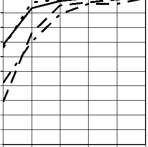
90 80
原文のみ
Med. Devices
原文のみ
原文のみ
Browser
原文のみ
60 50
原文のみ
Server
原文のみ
40 30
原文のみ
NASA Distributed DB
原文のみ
20 10 0
原文のみ
Testing all 4-way to 6-way combinations may therefore provide reasonably high assurance. As with most issues in software, however, the situation is not that simple. Efficient generation of test suites to cover all t-way combinations is a difficult mathematical problem that has been studied for nearly a century. In addition, most parameters are continuous variables which have possible values in a very large range (+/ 232 or more). These values must be discretized to a few distinct values. Most glaring of all is the problem of determining the correct result that should be expected from the system under test for each set of test inputs. Generating 1,000 test data inputs is of little help if we cannot determine what the system under test (SUT) should produce as output for each of the 1,000 tests.
原文のみ
With the exception of combination covering test
原文のみ
Advances in
原文のみ
generation, these challenges are common to all types of
原文のみ
algorithms have
原文のみ
software testing, and a variety of good techniques have been
原文のみ
made
原文のみ
developed for dealing with them. What has made combinatorial testing practical today is the development of efficient algorithms combinatorial to generate tests covering t-way combinations, and effective testing beyond methods of integrating the tests produced into the testing pairwise finally process. A variety of approaches introduced in this publication
原文のみ
practical.
原文のみ
can be used to make combinatorial testing a practical and effective addition to the software tester’s toolbox.
原文のみ
A note on terminology: we use the definitions below, following the Institute of Electrical and Electronics Engineers [30]. The term “bug” may also be used where its meaning is clear.
用語に関する注記: 以下では、Institute of Electrical and Electronics Engineers [30]に従って定義を用いる。「bug」という語も、意味が明らかな場合に使用される。
未レビュー訳•error: a mistake made by a developer. This could be a coding error or a misunderstanding of requirements or specification.
•error（誤り）: 開発者が犯した間違い。コーディング上の誤り、または要件や仕様の誤解などがある。
未レビュー訳•fault: a difference between an incorrect program and one that correctly implements a specification. An error may result in one or more faults.
•fault（欠陥）: 誤ったプログラムと、仕様を正しく実装したプログラムとの差異。1つのerrorから1つ以上のfaultが生じる場合がある。
未レビュー訳•failure: a result that differs from the correct result as specified. A fault in code may result in zero or more failures, depending on inputs and execution path.
•failure（障害）: 仕様に定められた正しい結果と異なる結果。コード内のfaultは、入力および実行経路によって、0件以上のfailureを引き起こす場合がある。
未レビュー訳2.1 Two Forms of Combinatorial Testing
2.1 組合せテストの2つの形態
There are basically two approaches to combinatorial testing – use combinations of configuration parameter values, or combinations of input parameter values. In the first case, we select combinations of values of configurable parameters. For example, a server might be tested by setting up all 4-way combinations of configuration parameters such as number of simultaneous connections allowed, memory, OS, database size, etc., with the same test suite run against each configuration. The tests may have been constructed using any methodology, not necessarily combinatorial coverage. The combinatorial aspect of this approach is in achieving combinatorial coverage of configuration parameter values. (Note, the term variable is often used interchangeably with parameter to refer to inputs to a function.)
組合せテストには基本的に2つの方法がある。構成パラメーター値の組合せを用いる方法と、入力パラメーター値の組合せを用いる方法である。最初の方法では、構成可能なパラメーター値の組合せを選択する。たとえば、サーバーについて、許容する同時接続数、メモリー、OS、データベースサイズなどの構成パラメーターの4-way組合せをすべて設定し、各構成に同じテストスイートを実行して試験できる。テスト自体は、組合せ網羅に限らず、どのような方法論で構築してもよい。この方法で組合せとなるのは、構成パラメーター値の組合せを網羅する部分である。（注: 関数への入力を指す場合、「variable（変数）」と「parameter（パラメーター）」はしばしば同義に用いられる。）
未レビュー訳Combinatorial testing can be applied to configurations, input data, or both.
組合せテストは、構成、入力データ、またはその両方に適用できる。
未レビュー訳In the second approach, we select combinations of input data values, which then become part of complete test cases, creating a test suite for the application. In this case combinatorial coverage of input data values is required for tests constructed. A typical ad hoc approach to testing involves subject matter experts setting up use scenarios, then selecting input values to exercise the application in each scenario, possibly supplementing these tests with unusual or suspected problem cases. In the combinatorial approach to input data selection, a test data generation tool is used to cover all combinations of input values up to some specified limit. One such tool is ACTS (described in Appendix C), which is available freely from NIST.
第2の方法では、入力データ値の組合せを選択し、それらを完全なテストケースに組み込んでアプリケーション用のテストスイートを作成する。この場合、構築するテストでは入力データ値の組合せ網羅が必要である。一般的なアドホック方式では、専門家が利用シナリオを設定し、各シナリオでアプリケーションを実行する入力値を選び、さらに異常値または問題が疑われるケースのテストを加える場合がある。入力データを選択する組合せ方式では、指定した上限までの入力値の組合せすべてを網羅するため、テストデータ生成ツールを使用する。ACTS（付録Cで説明）はそのようなツールの一つであり、NISTから無料で入手できる。
未レビュー訳2.1.1 Configuration Testing
2.1.1 構成テスト
Many, if not most, software systems have a large number of configuration parameters. Many of the earliest applications of combinatorial testing were in testing all pairs of system configurations. For example, telecommunications software may be configured to work with different types of call (local, long distance, international), billing (caller, phone card, 800), access (ISDN, VOIP, PBX), and server for billing (Windows Server, Linux/MySQL, Oracle). The software must work correctly with all combinations of these, so a single test suite could be applied to all pairwise combinations of these four major configuration items. Any system with a variety of configuration options is a suitable candidate for this type of testing.
多くのソフトウェアシステムには、多数の構成パラメーターがある。組合せテストの初期の適用例の多くは、システム構成のすべてのペアを試験するものだった。たとえば、通信ソフトウェアを、通話種別（市内、長距離、国際）、課金方式（発信者、テレホンカード、800番）、アクセス方式（ISDN、VOIP、PBX）、課金サーバー（Windows Server、Linux/MySQL、Oracle）の違いに対応するよう構成できる。ソフトウェアはこれらすべての組合せで正しく機能しなければならないため、これら4つの主要構成項目の各ペアを網羅する同一のテストスイートを適用できる。さまざまな構成オプションを持つシステムは、この種の試験の適切な候補となる。
未レビュー訳Configuration coverage is perhaps the most developed form of combinatorial testing. It has been used for years with pairwise coverage, particularly for applications that must be shown to work across a variety of combinations of operating systems, databases, and network characteristics.
構成網羅は、おそらく組合せテストの中で最も発展した形態である。特に、多様なオペレーティングシステム、データベースおよびネットワーク特性の組合せ全体で動作することを示す必要があるアプリケーションでは、ペアワイズ網羅が長年使用されてきた。
未レビュー訳For example, suppose we had an application that is intended to run on a variety of platforms comprised of five components: an operating system (Windows XP, Apple OS X, Red Hat Enterprise Linux), a browser (Internet Explorer, Firefox), protocol stack (IPv4, IPv6), a processor (Intel, AMD), and a database (MySQL, Sybase, Oracle), a total of 3⋅2⋅2⋅2⋅3 = 72 possible platforms. With only 10 tests, shown in Table 1, it is possible to test every component interacting with every other component at least once, i.e., all possible pairs of platform components are covered.
たとえば、次の5つのコンポーネントからなるさまざまなプラットフォームで実行するアプリケーションを考える。オペレーティングシステム（Windows XP、Apple OS X、Red Hat Enterprise Linux）、ブラウザー（Internet Explorer、Firefox）、プロトコルスタック（IPv4、IPv6）、プロセッサー（Intel、AMD）、データベース（MySQL、Sybase、Oracle）。可能なプラットフォームの総数は3⋅2⋅2⋅2⋅3 = 72である。表1に示すわずか10件のテストで、各コンポーネントと他のすべてのコンポーネントが少なくとも1回相互作用するよう試験できる。すなわち、プラットフォームコンポーネントの可能なペアをすべて網羅できる。
未レビュー訳| Test | OS | Browser | Protocol | CPU | DBMS |
| 1 | XP | IE | IPv4 | Intel | MySQL |
| 2 | XP | Firefox | IPv6 | AMD | Sybase |
| 3 | XP | IE | IPv6 | Intel | Oracle |
| 4 | OS X | Firefox | IPv4 | AMD | MySQL |
| 5 | OS X | IE | IPv4 | Intel | Sybase |
| 6 | OS X | Firefox | IPv4 | Intel | Oracle |
| 7 | RHEL | IE | IPv6 | AMD | MySQL |
| 8 | RHEL | Firefox | IPv4 | Intel | Sybase |
| 9 | RHEL | Firefox | IPv4 | AMD | Oracle |
原本PDFの抜粋画像
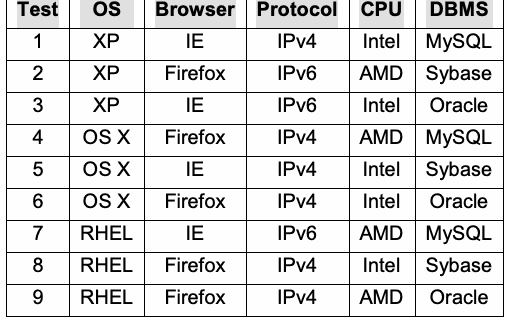
| 試験 | OS | ブラウザー | プロトコル | CPU | DBMS |
| 1 | XP | IE | IPv4 | Intel | MySQL |
| 2 | XP | Firefox | IPv6 | AMD | Sybase |
| 3 | XP | IE | IPv6 | Intel | Oracle |
| 4 | OS X | Firefox | IPv4 | AMD | MySQL |
| 5 | OS X | IE | IPv4 | Intel | Sybase |
| 6 | OS X | Firefox | IPv4 | Intel | Oracle |
| 7 | RHEL | IE | IPv6 | AMD | MySQL |
| 8 | RHEL | Firefox | IPv4 | Intel | Sybase |
| 9 | RHEL | Firefox | IPv4 | AMD | Oracle |
| 10 | OS X | Firefox | IPv6 | AMD | Oracle |
Table 1. Pairwise test configurations
表1. ペアワイズ試験構成
未レビュー訳2.1.2 Input Parameter Testing
2.1.2 入力パラメーターテスト
Even if an application has no configuration options, some form of input will be processed. For example, a word processing application may allow the user to select 10 ways to modify some highlighted text: subscript, superscript, underline, bold, italic, strikethrough, emboss, shadow, small caps, or all caps. The font-processing function within the application that receives these settings as input must process the input and modify the text on the screen correctly. Most options can be combined, such as bold and small caps, but some are incompatible, such as subscript and superscript.
アプリケーションに構成オプションがなくても、何らかの形の入力は処理される。たとえば、ワープロアプリケーションでは、強調表示したテキストを変更する方法を10種類から利用者が選択できる場合がある: 下付き、上付き、下線、太字、斜体、取り消し線、浮き出し、影、小型大文字、またはすべて大文字。これらの設定を入力として受け取るアプリケーション内のフォント処理機能は、その入力を処理し、画面上のテキストを正しく変更しなければならない。太字と小型大文字のように大半のオプションは組み合わせられるが、下付きと上付きのように両立しないものもある。
Thorough testing requires that the font-processing function work correctly for all valid combinations of these input settings. But with 10 binary inputs, there are \(2^{10} = 1{,}024\) possible combinations. But the empirical analysis reported above shows that failures appear to involve a small number of parameters, and that testing all 3-way combinations may detect 90% or more of bugs. For a word processing application, testing that detects better than 90% of bugs may be a cost-effective choice, but we need to ensure that all 3-way combinations of values are tested. To do this, we create a test suite to cover all 3-way combinations (known as a covering array) [12, 14, 23, 26, 30, 43, 63].
徹底的な試験では、フォント処理機能がこれらの入力設定の有効な組合せすべてについて正しく動作することが求められる。しかし、10個の二値入力には\(2^{10} = 1{,}024\)通りの組合せがあり得る。一方、前述の実証分析は、障害に関与するパラメーターは少数であると見られること、およびすべての3-way組合せを試験すればバグの90%以上を検出できる可能性があることを示している。ワープロアプリケーションでは、バグの90%超を検出する試験は費用対効果の高い選択となり得るが、値の3-way組合せがすべて試験されることを確実にする必要がある。そのために、すべての3-way組合せを網羅するテストスイート（被覆配列と呼ばれる）を作成する [12, 14, 23, 26, 30, 43, 63]。
An example is given in Figure 3, which shows a 3-way covering array for 10 variables with two values each. The
図3に例を示す。これは、それぞれ2つの値を取る10個の変数に対する3-way被覆配列である。
is a covering array,
原文のみ
interesting property of this array is that any three columns
原文のみ
which includes all t-
原文のみ
contain all eight possible values for three binary variables.
原文のみ
way combinations.
原文のみ
For example, taking columns F, G, and H, we can see that all eight possible 3-way combinations (000, 001, 010, 011, 100, Each column is a 101, 110, 111) occur somewhere in the three columns parameter. Each together. In fact, any combination of three columns chosen in row is a test. any order will also contain all eight possible values. Collectively, therefore, this set of tests will exercise all 3-way combinations of input values in only 13 tests, as compared with 1,024 for exhaustive coverage. A B C D E F G H I J
原文のみ
Tests
原文のみ
Figure 3. 3way covering array Similar arrays can be generated to cover up to all 6-way combinations. In general, the
原文のみ
number of t-way combinatorial tests that will be required is proportional to vt log n, for n parameters with v possible values each.
原文のみ
Figure 4 contrasts these two approaches. With the first approach, we may run the same test set against all 3-way combinations of configuration options, while for the second approach, we would construct a test suite that covers all 3-way combinations of input transaction fields. Of course these approaches could be combined, with the combinatorial tests (approach 2) run against all the configuration combinations (approach 1).
図4はこの2つの方法を対比している。第1の方法では、構成オプションのすべての3-way組合せに対して同じテストセットを実行する。これに対し第2の方法では、入力トランザクションフィールドのすべての3-way組合せを網羅するテストスイートを構築する。もちろん、これらの方法を組み合わせ、組合せテスト（方法2）をすべての構成組合せ（方法1）に対して実行することもできる。
Use combinations of configuration
原文のみ
Configuration:
原文のみ
values with existing test suite
原文のみ
Browser OS DBMS Server
原文のみ
Use combinations of input
原文のみ
...
原文のみ
values in generating tests
原文のみ
Inputs: Product
原文のみ
System
原文のみ
Amount
原文のみ
Under Test
原文のみ
Quantity Pmt method Shipping method
原文のみ
Figure 4. Two ways of using combinatorial testing
原文のみ
2.2 The Test Oracle Problem
2.2 テストオラクル問題
未レビュー訳Even with efficient algorithms to produce covering arrays, the oracle problem remains – testing requires both test data and results that should be expected for each data input. High interaction strength combinatorial testing may require a large number of tests in some cases, although not always. Approaches to solving the oracle problem for combinatorial testing include:
被覆配列を生成する効率的なアルゴリズムがあっても、オラクル問題は残る。試験には、テストデータと、各入力データに対して期待される結果の両方が必要である。相互作用強度の高い組合せテストでは、常にではないが、多数のテストが必要となる場合がある。組合せテストにおけるオラクル問題を解決する方法には、次のものがある:
Crash testing: the easiest and least expensive approach is to simply run tests against the system under test (SUT) to check whether any unusual combination of input values causes a crash or other easily detectable failure. This is essentially the same procedure used in “fuzz testing”, which sends random values against the SUT. This form of combinatorial testing could be regarded as a disciplined form of fuzz testing [59]. It should be noted that although pure random testing will generally cover a high percentage of t-way combinations, 100% coverage of combinations requires a random test set much larger than a covering array. For example, all 3-way combinations of 10 parameters with 4 values each can be covered with 151 tests. Purely random generation requires over 900 tests to provide full 3-way coverage. Embedded assertions: An increasingly popular “light-weight formal methods” technique is to embed assertions within code to ensure proper relationships between data, for example as preconditions, postconditions, or input value checks. Tools such as the Java Modeling language (JML) can be used to introduce very complex assertions, effectively embedding a formal specification within the code. The embedded assertions serve as an executable form of the specification, thus providing an oracle for the testing phase. With embedded assertions, exercising the application with all t-way combinations can provide reasonable assurance that the code works correctly across a very wide range of inputs. This approach has been used successfully for testing smart cards, with embedded JML assertions acting as an oracle for combinatorial tests [25]. Results showed that 80% - 90% of errors could be found in this way.
クラッシュテスト: 最も簡単で費用のかからない方法は、被試験システム（SUT）に対してテストを実行し、入力値の異常な組合せがクラッシュやその他容易に検出できる障害を引き起こすか確認することである。これは基本的に「ファズテスト」で用いる手順と同じであり、SUTにランダムな値を送る。この組合せテストは、規律あるファズテストと見なせる [59]。純粋なランダムテストは一般に高い割合のt-way組合せを網羅するものの、組合せを100%網羅するには、被覆配列よりはるかに大きなランダムテスト集合が必要となる点に留意されたい。たとえば、各々4つの値を持つ10個のパラメーターの3-way組合せは、151件のテストで網羅できる。純粋なランダム生成では、3-wayを完全に網羅するために900件を超えるテストが必要である。埋め込みアサーション: ますます一般的になっている「軽量形式手法」の技法では、データ間の適切な関係を確保するために、コード内にアサーションを埋め込む。たとえば、事前条件、事後条件、入力値チェックとして使用できる。Java Modeling Language（JML）などのツールを使うと、非常に複雑なアサーションを導入し、実質的に形式仕様をコード内に埋め込める。埋め込みアサーションは仕様の実行可能な形式として機能し、試験段階のオラクルとなる。埋め込みアサーションを用いてアプリケーションをすべてのt-way組合せで実行すれば、非常に広範な入力にわたってコードが正しく動作するという合理的な保証が得られる。この方法はスマートカードの試験で成功裏に用いられ、埋め込みJMLアサーションが組合せテストのオラクルとして機能した [25]。その結果、この方法でエラーの80%～90%を検出できることが示された。
未レビュー訳Model based test generation uses a mathematical model
モデルベーステスト生成では数学モデルを用いる。
未レビュー訳Several types of
にはいくつかの種類があり、
未レビュー訳of the SUT and a simulator or model checker to generate
とシミュレーターまたはモデルチェッカーを用いて
未レビュー訳test oracle can be
テストオラクルを生成できる。
未レビュー訳expected results for each input [1,8,9,52,55]. If a simulator can be used, expected results can be generated directly from the used, depending on simulation, but model checkers are widely available and can resources and the also be used to prove properties such as liveness in parallel system under test. processes, in addition to generating tests. Conceptually, a model checker can be viewed as exploring all states of a system model to determine if a property claimed in a specification statement is true. What makes a model checker particularly valuable is that if the claim is false, the model checker not only reports this, but also provides a “counterexample” showing how the claim can be shown false. If the claim is false, the model checker indicates this and provides a trace of parameter input values and states that will prove it is false. In effect this is a complete test case, i.e., a set of parameter values and expected result. It is then simple to map these values into complete test cases in the syntax needed for the system under test. Later chapters develop detailed procedures for applying each of these testing approaches.
各入力の期待結果を生成する [1,8,9,52,55]。シミュレーターを使用できる場合、シミュレーションから期待結果を直接生成できるが、リソースや被試験システムによってはモデルチェッカーも使用できる。モデルチェッカーは広く利用可能であり、テスト生成に加えて、並行プロセスにおける活性などの特性を証明するためにも使える。概念的には、モデルチェッカーは、仕様文で主張された特性が真であるかを判断するため、システムモデルのすべての状態を探索するものと見なせる。モデルチェッカーが特に有用なのは、主張が偽の場合、その旨を報告するだけでなく、主張が偽であることを示す「反例」も提示する点である。主張が偽の場合、モデルチェッカーはその旨を示し、それが偽であることを証明するパラメーター入力値と状態のトレースを提示する。これは実質的に完全なテストケース、すなわちパラメーター値と期待結果の集合である。次に、これらの値を被試験システムに必要な構文の完全なテストケースへ簡単に対応付けられる。後続の章では、各試験方法の適用手順を詳述する。
未レビュー訳2.3 Chapter Summary
2.3 章のまとめ
1. Empirical data suggest that software failures are caused by the interaction of relatively few parameter values, and that the proportion of failures attributable to \(t\)-way interactions declines very rapidly with increase in \(t\). That is, usually single parameter values or a pair of values are the cause of a failure, but increasingly smaller proportions are caused by 3-way, 4-way, and higher order interactions.
1. 実証データは、ソフトウェア障害が比較的少数のパラメーター値の相互作用によって引き起こされること、および\(t\)-way相互作用に起因する障害の割合が\(t\)の増加に伴って非常に急速に低下することを示唆している。すなわち、通常は単一のパラメーター値または値のペアが障害の原因であり、3-way、4-way、およびそれより高次の相互作用に起因する割合は次第に小さくなる。
2. Because a small number of parameters are involved in failures, we can attain a high degree of assurance by testing all \(t\)-way interactions, for an appropriate interaction strength \(t\) (2 to 6 usually). The number of \(t\)-way tests that will be required is proportional to \(v^t \log n\), for \(n\) parameters with \(v\) values each.
2. 障害に関与するパラメーターは少数であるため、適切な相互作用強度についてすべての\(t\)-way相互作用を試験することにより、高い保証度を達成できる。ここで相互作用強度は\(t\)（通常2～6）である。必要となる\(t\)-wayテストの数は\(v^t \log n\)に比例する。ここで、パラメーターは\(n\)個であり、それぞれが\(v\)個の値を持つ。
3.Combinatorial methods can be applied to configurations or to input parameters, or in some cases both.
3.組合せ手法は、構成パラメーターまたは入力パラメーター、場合によっては両方に適用できる。
未レビュー訳4.4. As with all other types of testing, the oracle problem must be solved – i.e., for every test input, the expected output must be determined in order to check if the application is producing the correct result for each set of inputs. A variety of methods are available to solve the oracle problem.
4.4. 他のすべての種類の試験と同様に、オラクル問題を解決しなければならない。すなわち、アプリケーションが各入力集合に対して正しい結果を生成しているかを確認するために、すべてのテスト入力について期待される出力を決定しなければならない。オラクル問題を解決する方法はさまざまなものが利用できる。
3 CONFIGURATION TESTING
3 構成テスト
未レビュー訳This chapter presents worked examples illustrating development of test configurations. As will be seen, the advantages of combinatorial testing increase with the size of the problem.
本章では、テスト構成の作成方法を示す実例を紹介する。これから分かるように、問題の規模が大きいほど、組合せテストの利点も大きくなる。
3.1 Simple Application Platform Example
3.1 単純なアプリケーションプラットフォームの例
Returning to the simple example introduced in Chapter 2, we illustrate development of test configurations, and compare the size of test suites for various interaction strengths versus testing all possible configurations. For the five configuration parameters, we have 3⋅ 2 ⋅ 2 ⋅ 2 ⋅3 = 72 configurations. The convention for describing the variables and values in combinatorial testing is v n1v n2 ... where the v are number of variable values and n are
第2章で紹介した簡単な例に戻り、テスト構成の作成方法を示し、さまざまな相互作用強度におけるテストスイートの規模を、可能なすべての構成を試験する場合と比較する。5つの構成パラメーターについて、3⋅2⋅2⋅2⋅3 = 72通りの構成がある。組合せテストで変数と値を表す慣例は、v₁ⁿ¹v₂ⁿ² ... のように記述する。ここでvは変数値の個数、nは
未レビュー訳1 2
1 2
未レビュー訳i
未レビュー訳i
未レビュー訳number of occurrences. Thus this configuration is designated 2332. Note that at t = 5, the number of tests is the same as exhaustive testing for this example, because there are only five parameters. The savings as a percentage of exhaustive testing are good, but not that impressive for this small example. With larger systems the savings can be enormous, as will be seen in the next section.
出現回数を示す。したがって、この構成は2332と表される。t = 5では、パラメーターが5つしかないため、この例のテスト数は全数試験と同じである点に注意されたい。全数試験に対する削減率は良好だが、この小さな例ではそれほど大きくない。次節で見るように、より大規模なシステムでは削減効果が非常に大きくなり得る。
未レビュー訳| Parameter | Values |
| Operating system | XP, OS X, RHL |
| Browser | IE, Firefox |
| Protocol | IPv4, IPv6 |
| CPU | Intel, AMD |
| DBMS | MySQL, Sybase, Oracle |
原本PDFの抜粋画像
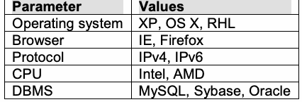
| パラメーター | 値 |
| オペレーティングシステム | XP, OS X, RHL |
| ブラウザー | IE, Firefox |
| プロトコル | IPv4, IPv6 |
| CPU | Intel, AMD |
| DBMS | MySQL, Sybase, Oracle |
Table 2. Simple example configuration options. We can now generate test configurations using the ACTS tool. For simplicity of
表2. 単純な構成オプションの例。ACTSツールを使ってテスト構成を生成できる。説明を簡潔にするため
未レビュー訳presentation we illustrate usage of the command line version of ACTS, but an intuitive GUI version is available that may be more convenient. This tool is summarized in Appendix C and a comprehensive user manual is included with the ACTS download.
ここではACTSのコマンドライン版の使い方を示すが、より便利な場合がある直感的なGUI版も利用できる。このツールについては付録Cで要約し、ACTSのダウンロードには包括的なユーザーマニュアルが含まれている。
未レビュー訳The first step in creating test configurations is to specify the parameters and possible values in a file for input to ACTS, as shown in Figure 5:
テスト構成を作成する最初の手順は、図5に示すように、ACTSへの入力となるファイルにパラメーターと取り得る値を指定することである:
[System]
[System]
未レビュー訳[Parameter] OS (enum): XP,OS_X,RHL Browser (enum): IE, Firefox Protocol(enum): IPv4,IPv6 CPU (enum): Intel,AMD DBMS (enum): MySQL,Sybase,Oracle
[Parameter] OS (enum): XP,OS_X,RHL Browser (enum): IE, Firefox Protocol(enum): IPv4,IPv6 CPU (enum): Intel,AMD DBMS (enum): MySQL,Sybase,Oracle
未レビュー訳[Relation] [Constraint] [Misc]
[Relation] [Constraint] [Misc]
未レビュー訳Figure 5. Simple example input file for ACTS.
図5. ACTS向け単純な入力ファイルの例。
未レビュー訳Note that most of the bracketed tags in the input file are optional, and not filled in for this example. The essential part of the file is the [Parameter] specification, in the format <parameter name> (<type>): <values>, where one or more values are listed separated by commas. The tool can then be run at the command line:
入力ファイル内の角括弧付きタグの大半は任意であり、この例では記入していないことに注意する。ファイルの必須部分は[Parameter]の指定であり、その形式は<parameter name> (<type>): <values>である。ここには、1つ以上の値をカンマで区切って列挙する。その後、コマンドラインでツールを実行できる:
java -Ddoi=2 –jar acts_cmd.jar ActsConsoleManager in.txt out.txt
java -Ddoi=2 –jar acts_cmd.jar ActsConsoleManager in.txt out.txt
未レビュー訳A variety of options can be specified, but for this example we only use the “degree of interaction” option to specify 2-way, 3-way, etc. coverage. Output can be created in a convenient form shown below, or as a matrix of numbers, comma separated value, or Excel spreadsheet form. If the output will be used by human testers rather than as input for further machine processing, the format in Figure 6 is useful:
さまざまなオプションを指定できるが、この例では2-way、3-wayなどの網羅を指定する「相互作用の次数」オプションだけを使用する。出力は以下の便利な形式のほか、数値行列、カンマ区切り値、Excelスプレッドシート形式で作成できる。出力を機械処理への入力ではなく人間のテスターが使う場合、図6の形式が便利である:
Degree of interaction coverage: 2 Number of parameters: 5 Maximum number of values per parameter: 3 Number of configurations: 10
相互作用網羅の次数: 2 パラメーター数: 5 パラメーターあたりの最大値数: 3 構成数: 10
未レビュー訳Configuration #1:
構成 #1:
未レビュー訳1 = OS=XP 2 = Browser=IE 3 = Protocol=IPv4 4 = CPU=Intel 5 = DBMS=MySQL
1 = OS=XP 2 = Browser=IE 3 = Protocol=IPv4 4 = CPU=Intel 5 = DBMS=MySQL
未レビュー訳Configuration #2:
構成 #2:
未レビュー訳1 = OS=XP 2 = Browser=Firefox 3 = Protocol=IPv6 4 = CPU=AMD 5 = DBMS=Sybase
1 = OS=XP 2 = Browser=Firefox 3 = Protocol=IPv6 4 = CPU=AMD 5 = DBMS=Sybase
未レビュー訳Configuration #3:
構成 #3:
未レビュー訳1 = OS=XP 2 = Browser=IE
1 = OS=XP 2 = Browser=IE
未レビュー訳The complete test set for 2-way combinations is shown in Table 1 in Section 2.1.1. Only 10 tests are needed. Moving to 3-way or higher interaction strengths requires more tests, as shown in Table 3.
2-way組合せの完全なテストセットを第2.1.1節の表1に示す。必要なテストはわずか10件である。3-way以上の相互作用強度に進むと、表3に示すように、より多くのテストが必要になる。
未レビュー訳| t | テスト数 | 全数テストに対する割合 |
| 2 | 10 | 14 |
| 3 | 18 | 25 |
| 4 | 36 | 50 |
| 5 | 72 | 100 |
Table 3. Number of combinatorial tests for a simple example.
表3. 単純な例における組合せテスト数。
In this example, substantial savings could be realized by testing \(t\)-way configurations instead of all possible configurations, although for some applications (such as a small but highly critical module) a full exhaustive test may be warranted. As we will see in the next example, in many cases it is impossible to test all configurations, so we need to develop reasonable alternatives.
この例では、可能な構成をすべてテストする代わりに\(t\)-way構成をテストすることで、大幅な節約を実現できる。ただし、一部のアプリケーション（小規模だが極めて重要なモジュールなど）では、完全な全数テストが妥当な場合もある。次の例で見るように、多くの場合、すべての構成をテストすることは不可能であるため、妥当な代替策を考案する必要がある。
3.2 Smart Phone Application Example
3.2 スマートフォンアプリケーションの例
Smart phones have become enormously popular because they combine communication capability with powerful graphical displays and processing capability. Literally tens of thousands of smart phone applications, or ‘apps’, are developed annually. Among the platforms for smart phone apps is the Android, which includes an open source development environment and specialized operating system. Android units contain a large number of configuration options that control the behavior of the device. Android apps must operate across a variety of hardware and software platforms, since not all products support the same options. For example, some smart phones may have a physical keyboard and others may present a soft keyboard using the touch sensitive screen. Keyboards may also be either only numeric with a few special keys, or a full typewriter keyboard. Depending on the state of the app and user choices, the keyboard may be visible or hidden. Ensuring that a particular app works across the enormous number of options is a significant challenge for developers. The extensive set of options makes it intractable to test all possible configurations, so combinatorial testing is a practical alternative.
スマートフォンは、通信機能と強力なグラフィック表示および処理能力を組み合わせているため、非常に普及している。スマートフォン用アプリケーション、すなわち「アプリ」は、文字どおり毎年数万件開発されている。スマートフォンアプリのプラットフォームの一つにAndroidがあり、オープンソースの開発環境と専用のオペレーティングシステムを備えている。Android端末には、端末の動作を制御する多数の構成オプションがある。すべての製品が同じオプションをサポートするわけではないため、Androidアプリはさまざまなハードウェアおよびソフトウェアのプラットフォーム上で動作しなければならない。たとえば、物理キーボードを備えるスマートフォンもあれば、タッチセンサー式の画面を使ってソフトキーボードを表示するものもある。キーボードは、少数の特殊キーを備えた数字専用の場合も、タイプライター型のフルキーボードの場合もある。アプリの状態と利用者の選択に応じて、キーボードは表示されることも隠されることもある。特定のアプリが膨大な数のオプションにわたって動作することを保証するのは、開発者にとって大きな課題である。オプションの集合が広範であるため、可能な構成をすべてテストすることは手に負えず、組合せテストが現実的な代替策となる。
Figure 7 shows a resource configuration file for Android apps. A total of 35 options may be set. Our task is to develop a set of test configurations that allow testing across all 4-way combinations of these options. The first step is to determine the set of parameters and possible values for each that will be tested. Although the options are listed individually to allow a specific integer value to be associated with each, they clearly represent sets of option values with mutually exclusive choices. For example, “Keyboard Hidden” may be “yes”, “no”, or “undefined”. These values will be the possible settings for parameter names that we will use in generating a covering array. Table 4 shows the parameter names and number of possible values that we will use for input to the covering
図7はAndroidアプリのリソース構成ファイルを示す。合計35個のオプションを設定できる。これらのオプションの4-way組合せをすべてテストできるテスト構成セットを開発する。最初に、テスト対象となるパラメータと各パラメータの取り得る値を特定する。各オプションに特定の整数値を対応付けられるよう、オプションは個別に列挙されているが、相互排他的な選択肢を持つ値の集合を表していることは明らかである。たとえば「キーボード非表示」は「yes」「no」「undefined」のいずれかとなる。これらの値が、カバリングアレイ生成で用いるパラメータ名の設定候補となる。表4に、カバリングアレイ
未レビュー訳array generator. For a complete specification of these parameters, see: http://developer.android.com/reference/android/content/res/Configuration.html int HARDKEYBOARDHIDDEN_NO; int HARDKEYBOARDHIDDEN_UNDEFINED; int HARDKEYBOARDHIDDEN_YES; int KEYBOARDHIDDEN_NO; int KEYBOARDHIDDEN_UNDEFINED; int KEYBOARDHIDDEN_YES; int KEYBOARD_12KEY; int KEYBOARD_NOKEYS; int KEYBOARD_QWERTY; int KEYBOARD_UNDEFINED; int NAVIGATIONHIDDEN_NO; int NAVIGATIONHIDDEN_UNDEFINED; int NAVIGATIONHIDDEN_YES; int NAVIGATION_DPAD; int NAVIGATION_NONAV; int NAVIGATION_TRACKBALL; int NAVIGATION_UNDEFINED; int NAVIGATION_WHEEL; int ORIENTATION_LANDSCAPE; int ORIENTATION_PORTRAIT; int ORIENTATION_SQUARE; int ORIENTATION_UNDEFINED; int SCREENLAYOUT_LONG_MASK; int SCREENLAYOUT_LONG_NO; int SCREENLAYOUT_LONG_UNDEFINED; int SCREENLAYOUT_LONG_YES; int SCREENLAYOUT_SIZE_LARGE; int SCREENLAYOUT_SIZE_MASK; int SCREENLAYOUT_SIZE_NORMAL; int SCREENLAYOUT_SIZE_SMALL; int SCREENLAYOUT_SIZE_UNDEFINED; int TOUCHSCREEN_FINGER; int TOUCHSCREEN_NOTOUCH; int TOUCHSCREEN_STYLUS; int TOUCHSCREEN_UNDEFINED;
生成器への入力に用いるパラメータ名と候補値の個数を示す。これらのパラメータの完全な仕様は次を参照：http://developer.android.com/reference/android/content/res/Configuration.html int HARDKEYBOARDHIDDEN_NO; int HARDKEYBOARDHIDDEN_UNDEFINED; int HARDKEYBOARDHIDDEN_YES; int KEYBOARDHIDDEN_NO; int KEYBOARDHIDDEN_UNDEFINED; int KEYBOARDHIDDEN_YES; int KEYBOARD_12KEY; int KEYBOARD_NOKEYS; int KEYBOARD_QWERTY; int KEYBOARD_UNDEFINED; int NAVIGATIONHIDDEN_NO; int NAVIGATIONHIDDEN_UNDEFINED; int NAVIGATIONHIDDEN_YES; int NAVIGATION_DPAD; int NAVIGATION_NONAV; int NAVIGATION_TRACKBALL; int NAVIGATION_UNDEFINED; int NAVIGATION_WHEEL; int ORIENTATION_LANDSCAPE; int ORIENTATION_PORTRAIT; int ORIENTATION_SQUARE; int ORIENTATION_UNDEFINED; int SCREENLAYOUT_LONG_MASK; int SCREENLAYOUT_LONG_NO; int SCREENLAYOUT_LONG_UNDEFINED; int SCREENLAYOUT_LONG_YES; int SCREENLAYOUT_SIZE_LARGE; int SCREENLAYOUT_SIZE_MASK; int SCREENLAYOUT_SIZE_NORMAL; int SCREENLAYOUT_SIZE_SMALL; int SCREENLAYOUT_SIZE_UNDEFINED; int TOUCHSCREEN_FINGER; int TOUCHSCREEN_NOTOUCH; int TOUCHSCREEN_STYLUS; int TOUCHSCREEN_UNDEFINED;
未レビュー訳Figure 7. Android resource configuration file.
図7. Androidリソース構成ファイル。
| Parameter Name | Values | # Values |
| HARDKEYBOARDHIDDEN | NO, UNDEFINED, YES | 3 |
| KEYBOARDHIDDEN | NO, UNDEFINED, YES | 3 |
| KEYBOARD | 12KEY, NOKEYS, QW ERTY, UNDEFINED | 4 |
| NAVIGATIONHIDDEN | NO, UNDEFINED, YES | 3 |
| NAVIGATION | DPAD, NONAV, TRACKBALL, UNDEFINED, WHEEL | 5 |
| ORIENTATION | LANDSCAPE, PORTRAIT, SQUARE, UNDEFINED | 4 |
| SCREENLAYOUT_LONG | MASK, NO, UNDEFINED, YES | 4 |
| SCREENLAYOUT_SIZE | LARGE, MASK, NORMAL, SMALL, UNDEFINED | 5 |
| TOUCHSCREEN | FINGER, NOTOUCH, STYLUS, UNDEFINED | 4 |
原本PDFの抜粋画像
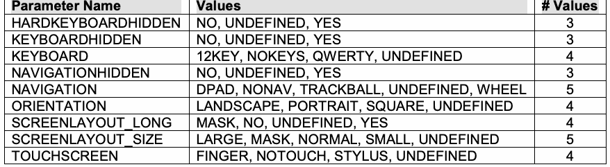
| パラメータ名 | 値 | 値の数 |
| HARDKEYBOARDHIDDEN | NO, UNDEFINED, YES | 3 |
| KEYBOARDHIDDEN | NO, UNDEFINED, YES | 3 |
| KEYBOARD | 12KEY, NOKEYS, QW ERTY, UNDEFINED | 4 |
| NAVIGATIONHIDDEN | NO, UNDEFINED, YES | 3 |
| NAVIGATION | DPAD, NONAV, TRACKBALL, UNDEFINED, WHEEL | 5 |
| ORIENTATION | LANDSCAPE, PORTRAIT, SQUARE, UNDEFINED | 4 |
| SCREENLAYOUT_LONG | MASK, NO, UNDEFINED, YES | 4 |
| SCREENLAYOUT_SIZE | LARGE, MASK, NORMAL, SMALL, UNDEFINED | 5 |
| TOUCHSCREEN | FINGER, NOTOUCH, STYLUS, UNDEFINED | 4 |
Table 4. Android configuration options.
表4. Androidの構成オプション。
Using Table 4, we can now calculate the total number of configurations: \(3 \cdot 3 \cdot 4 \cdot 3 \cdot 5 \cdot 4 \cdot 4 \cdot 5 \cdot 4 = 172{,}800\) configurations (i.e., a \(3^3 4^4 5^2\) system). Like many applications, thorough testing will require some human intervention to run tests and verify results, and a test suite will typically include many tests. If each test suite can be run in 15 minutes, it will take roughly 24 staff-years to complete testing for an app. With salary and benefit costs for each tester of $150,000, the cost of testing an app will be more than $3 million, making it virtually impossible to return a profit for most apps. How can we provide effective testing for apps at a reasonable cost?
表4を用いると、構成の総数を計算できる: \(3 \cdot 3 \cdot 4 \cdot 3 \cdot 5 \cdot 4 \cdot 4 \cdot 5 \cdot 4 = 172{,}800\)通りの構成（すなわち、\(3^3 4^4 5^2\)システム）。多くのアプリケーションと同様に、徹底的なテストでは、テストを実行し結果を検証するために人手の介入がある程度必要となり、テストスイートには通常多数のテストが含まれる。各テストスイートを15分で実行できるとすると、1つのアプリのテストを完了するのにおよそ24人年かかる。テスター1人あたりの給与および福利厚生費を150,000ドルとすると、1つのアプリのテスト費用は300万ドルを超え、大半のアプリでは利益を上げることが事実上不可能になる。どうすれば妥当な費用でアプリを効果的にテストできるだろうか。
Using the covering array generator, we can produce tests that cover \(t\)-way combinations of values. Table 5 shows the number of tests required at several levels of \(t\). For many applications, 2-way or 3-way testing may be appropriate, and either of these will require less than 1% of the time required to cover all possible test configurations.
被覆配列生成器を用いると、値の\(t\)-way組合せを網羅するテストを生成できる。表5に、いくつかの\(t\)の水準で必要となるテスト数を示す。多くのアプリケーションでは2-wayまたは3-wayテストが適切であると考えられ、そのいずれも、可能なテスト構成をすべて網羅するのに必要な時間の1%未満で済む。
未レビュー訳| t | テスト数 | 全数テストに対する割合 |
| 2 | 29 | 0.02 |
| 3 | 137 | 0.08 |
| 4 | 625 | 0.4 |
| 5 | 2532 | 1.5 |
| 6 | 9168 | 5.3 |
Table 5. Number of combinatorial tests for Android example.
表5. Androidの例における組合せテスト数。
3.3 Cost and Practical Considerations
3.3 コストおよび実務上の考慮事項
3.3.1 Invalid Combinations and Constraints
3.3.1 無効な組合せと制約
The system described in Section 3.1 illustrates a common situation in all types of testing: some combinations cannot be tested because they don’t exist for the systems under test. In this case, if the operating system is either OS X or Linux, Internet Explorer is not available as a browser. Note that we cannot simply delete tests with these untestable combinations, because that would result in losing other combinations that are essential to test but are not covered by other tests. For example, deleting tests 5 and 7 in Section 2.1.1 would mean that we would also lose the test for Linux with the IPv6 protocol.
第3.1節で説明したシステムは、あらゆる種類のテストに共通する状況を示している。すなわち、テスト対象システムには存在しないためにテストできない組合せがある。この例では、オペレーティングシステムがOS XまたはLinuxの場合、ブラウザーとしてInternet Explorerを利用できない。こうしたテスト不能な組合せを含むテストを単純に削除することはできない点に注意する。削除すると、テストが不可欠でありながら他のテストでは網羅されていない別の組合せまで失われるからである。たとえば、第2.1.1節のテスト5と7を削除すると、LinuxとIPv6プロトコルの組合せに対するテストも失われることになる。
One way around this problem is to delete tests and
原文のみ
Some combinations
原文のみ
supplement the test suite with manually constructed test
原文のみ
never occur in
原文のみ
configurations to cover the deleted combinations, but covering
原文のみ
practice.
原文のみ
array tools offer a better solution. With ACTS we can specify constraints, which tell the tool not to include specified combinations in the generated test configurations. ACTS supports a set of commonly used logic and arithmetic operators to specify constraints. In this case, the following constraint can be used to ensure that invalid combinations are not generated:
原文のみ
(OS != “XP” => Browser = “Firefox”)
(OS != “XP” => Browser = “Firefox”)
未レビュー訳The covering array tool will then generate a set of test configurations that does not include the invalid combinations, but does cover all those that are essential. The revised test configuration array is shown in Figure 8 below. Parameter values that have changed from the original configurations are underlined. Note that adding the constraint also resulted in reducing the number of test configurations by one. This will not always be the case, depending on the constraints used, but it illustrates how constraints can help reduce the problem. Even if particular combinations are testable, the test team may consider some combinations unnecessary, and constraints could be used to prevent these combinations, possibly reducing the number of test configurations.
その後、カバリングアレイツールは無効な組合せを含まず、必須の組合せをすべて網羅するテスト構成セットを生成する。改訂後のテスト構成アレイを以下の図8に示す。元の構成から変更されたパラメータ値には下線が引かれている。制約を追加した結果、テスト構成数も1件減少した。制約によって常にテスト数が減るとは限らず、使用する制約に依存するが、制約が問題を軽減できることを示す。特定の組合せがテスト可能であっても、テストチームが不要と判断する場合があり、そのような組合せを防ぐ制約を使えば、テスト構成数を減らせる可能性がある。
未レビュー訳| Test | OS | Browser | Protocol | CPU | DBMS |
| 1 | XP | IE | IPv4 | Intel | MySQL |
| 2 | XP | Firefox | IPv6 | AMD | Sybase |
| 3 | XP | IE | IPv6 | Intel | Oracle |
| 4 | OS X | Firefox | IPv4 | AMD | MySQL |
| 5 | OS X | Firefox | IPv4 | Intel | Sybase |
| 6 | OS X | Firefox | IPv6 | AMD | Oracle |
| 7 | RHL | Firefox | IPv6 | Intel | MySQL |
| 8 | RHL | Firefox | IPv4 | Intel | Oracle |
| 9 | XP | IE | IPv4 | AMD | Sybase |
原本PDFの抜粋画像
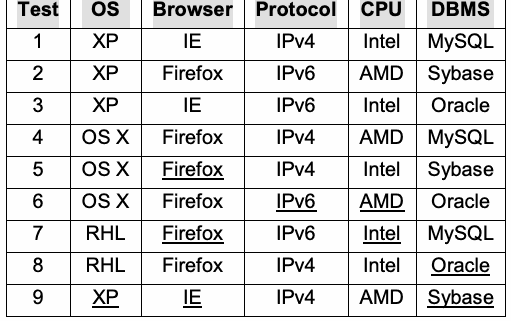
| テスト | OS | ブラウザー | プロトコル | CPU | DBMS |
| 1 | XP | IE | IPv4 | Intel | MySQL |
| 2 | XP | Firefox | IPv6 | AMD | Sybase |
| 3 | XP | IE | IPv6 | Intel | Oracle |
| 4 | OS X | Firefox | IPv4 | AMD | MySQL |
| 5 | OS X | Firefox | IPv4 | Intel | Sybase |
| 6 | OS X | Firefox | IPv6 | AMD | Oracle |
| 7 | RHL | Firefox | IPv6 | Intel | MySQL |
| 8 | RHL | Firefox | IPv4 | Intel | Oracle |
| 9 | XP | IE | IPv4 | AMD | Sybase |
Figure 8. Test configurations for simple example with constraint.
図8. 制約を加えた単純な例のテスト構成。
3.3.2 Cost Factors
3.3.2 コスト要因
Using combinatorial methods to design test configurations is probably the most widely used combinatorial approach because it is quick and easy to do and typically delivers significant improvements to testing. Combinatorial testing for input parameters can provide better test coverage at lower cost than conventional tests, and can be extended to high strength coverage to provide much better assurance.
テスト構成の設計に組合せ手法を用いるのは、おそらく最も広く利用される組合せアプローチである。迅速かつ簡単に実施でき、通常テストを大幅に改善できるためである。入力パラメーターに組合せテストを用いると、従来型テストより低コストで優れたテスト網羅性を実現でき、高強度の網羅まで拡張してはるかに高い保証を提供できる。
3.4 Chapter Summary
3.4 章のまとめ
1.Configuration testing is probably the most commonly used application of combinatorial methods in software testing. Whenever an application has roughly five or more configurable attributes, a covering array is likely to make testing more efficient. Configurable attributes usually have a small number of possible values each, which is an ideal situation for combinatorial methods. Because the number of t-way tests is proportional to vt log n, for n parameters with v values each, unless configurable attributes have more than 8 or 10 possible values each, the number of tests generated will probably be reasonable. The real-world testing problem introduced in Section 3.2 is a fairly typical size, where 4-way interactions can be tested with a few hundred tests.
1.構成テストは、ソフトウェアテストで最も一般的に用いられる組合せ手法の適用例である。アプリケーションにおよそ5個以上の構成可能属性がある場合、カバリングアレイによってテスト効率が向上する可能性が高い。構成可能属性は通常、それぞれ少数の値しか取らず、組合せ手法に理想的である。n個のパラメータがそれぞれv個の値を持つとき、t-wayテスト数はvt log nに比例するため、各構成可能属性が8個または10個を超える値を取らない限り、生成されるテスト数は妥当な範囲に収まると考えられる。第3.2節で示した実世界のテスト課題は典型的な規模であり、数百件のテストで4-way相互作用をテストできる。
未レビュー訳2.Because many systems have certain configurations that may not be of interest (such as Internet Explorer browser on a Linux system), constraints are an important consideration in any type of testing. With combinatorial methods, it is important that the covering array generator allows for the inclusion of constraints so that all relevant interactions are tested, and important information is not lost because a test contains an impossible combination.
2.Linuxシステム上のInternet Explorerなど、多くのシステムでは関心対象とならない構成があるため、制約はあらゆる種類のテストで重要な考慮事項である。組合せ手法では、関連する相互作用をすべてテストし、不可能な組合せを含むテストによって重要な情報が失われないよう、カバリングアレイ生成器が制約を含められることが重要である。
未レビュー訳4 INPUT PARAMETER TESTING
4 入力パラメータのテスト
未レビュー訳As noted in the introduction, the key advantage of combinatorial testing derives from the fact that all, or nearly all, software failures appear to involve interactions of only a few parameters. Using combinatorial testing to select configurations can make testing more efficient, but it can be even more effective when used to select input parameter values. Testers traditionally develop scenarios of how an application will be used, then select inputs that will exercise each of the application features using representative values, normally supplemented with extreme values to test performance and reliability. The problem with this often ad hoc approach is that unusual combinations will usually be missed, so a system may pass all tests and work well under normal circumstances, but eventually encounter a combination of inputs that it fails to process correctly.
序論で述べたとおり、組合せテストの主な利点は、ソフトウェア障害のすべて、またはほぼすべてが、わずか数個のパラメーターの相互作用に関係していると見られるという事実に由来する。構成の選択に組合せテストを用いるとテストの効率を高められるが、入力パラメーター値の選択に用いると、さらに効果的となり得る。テスターは従来、アプリケーションがどのように使われるかのシナリオを作成し、次に代表値を用いてアプリケーションの各機能を実行する入力を選択し、通常はこれに性能と信頼性を試すための極端な値を補う。場当たり的になりがちなこの方法の問題は、珍しい組合せが通常は見落とされることである。そのため、システムはすべてのテストに合格し、通常の状況では良好に動作しても、やがて正しく処理できない入力の組合せに遭遇することがある。
未レビュー訳By testing all \(t\)-way combinations, for some specified level of \(t\), combinatorial testing can help to avoid this type of situation. In this chapter we work through a small example to illustrate the use of these methods.
指定した\(t\)の水準についてすべての\(t\)-way組合せをテストすることにより、組合せテストはこの種の状況を避ける助けとなる。本章では、これらの手法の使い方を示すために、小さな例を順を追って説明する。
4.1 Example Access Control Module
テスト対象システムは、次の
未レビュー訳The system under test is an access control module that implements the following policy:
テスト対象システムは、次のポリシーを実装するアクセス制御モジュールである:
Access is allowed if and only if:
アクセスは、次の場合かつその場合に限り許可される:
•the subject is an employee AND current time is between 9 am and 5 pm AND it is not a weekend
•または主体が特別な認可コードを持つ従業員である。 または主体が監査人で、時刻が午前9時から午後5時までである（平日のみに限定しない）。
未レビュー訳•OR subject is an employee with a special authorization code • OR subject is an auditor AND the time is between 9 am and 5 pm (not constrained to weekdays).
•このモジュールの入力パラメータを図9に示す。
未レビュー訳The input parameters for this module are shown in Figure 9:
emp: boolean; time: 0..1440; // time in minutes day: {m,tu,w,th,f,sa,su}; auth: boolean; aud: boolean;
未レビュー訳emp: boolean; time: 0..1440; // time in minutes day: {m,tu,w,th,f,sa,su}; auth: boolean; aud: boolean;
図9. アクセス制御モジュールの入力パラメータ。
未レビュー訳Figure 9. Access control module input parameters.
図9. アクセス制御モジュールの入力パラメーター。
Our task is to develop a covering array of tests for these inputs. The first step will be to develop a table of parameters and possible values, similar to that in Section 3.1 in the previous chapter. The only difference is that in this case we are dealing with input parameters rather than configuration options. For the most part, the task is simple: we just take the values directly from the specifications or code, as shown in Figure 10. Several parameters are boolean, and we will use 0 and 1 for false and true values respectively. For day of the week, there are only seven values, so these can all be used. However, hour of the day presents a problem. Recall that the number of tests generated for n parameters is proportional to vt, where v is the number of values and t is the interaction level (2-way to 6 way). For all boolean values and 4-way testing, therefore, the number of tests will be some multiple of 24. But consider what happens with a large number of possible values, such as 24 hours. The number of tests will be proportional to 244 = 331,736. For this example, time is given in minutes, which would obviously be completely intractable. Therefore, we must select representative values for the hour parameter. This problem occurs in all types of testing, not just with combinatorial methods, and good methods have been developed to deal with it. Most testers are already familiar with two of these: equivalence partitioning and boundary value analysis. Additional background on these methods can be found in software testing texts such as Ammann and Offutt [2], Beizer [4], Copeland [21], Mathur [45], and Myers [52].
これらの入力についてカバリングアレイテストを作成する。最初に、前章第3.1節と同様に、パラメータと候補値の表を作る。ただしここでは構成オプションではなく入力パラメータを扱う。大部分は単純で、図10に示すように仕様またはコードから値を直接採用すればよい。複数のパラメータはブール値なので、falseとtrueにそれぞれ0と1を用いる。曜日には7つの値しかないため、すべて使用できる。しかし時刻には問題がある。n個のパラメータに対する生成テスト数はvtに比例する。ここでvは値の数、tは相互作用水準（2-wayから6-way）である。したがって、すべての値がブール値で4-wayテストの場合、テスト数は24の倍数となる。しかし24時間のように候補値が多い場合を考えてみよう。テスト数は244 = 331,736に比例する。この例では時刻を分単位で指定しているため、明らかに実行不可能な規模である。したがって、時刻パラメータには代表値を選ばなければならない。この問題は組合せ手法に限らず、あらゆる種類のテストで起こり、その対処に優れた方法が開発されている。テスターの多くは、同値分割と境界値分析という2つの方法をすでに知っている。これらの方法の詳しい背景は、Ammann and Offutt [2]、Beizer [4]、Copeland [21]、Mathur [45]、Myers [52]などのソフトウェアテスト教科書にある。
未レビュー訳| パラメータ | 値 |
| emp | 0,1 |
| time | ?? |
| day | m,tu,w,th,f,sa,su |
| auth | 0, 1 |
| aud | 0, 1 |
Figure 10. Parameters and values for access control example.
図10. アクセス制御の例におけるパラメーターと値。
Both of these intuitively obvious methods will produce a smaller set of values that should be adequate for testing purposes, by dividing the possible values into partitions that are meaningful for the program being tested. One value is selected for each partition. The objective is to partition the input space such that any value selected from the partition will affect the program under test in the same way as any other value in the partition. Thus, ideally if a test case contains a parameter \(x\) which has value \(y\), replacing \(y\) with any other value from the partition will not affect the test case result. This ideal may not always be achieved in practice.
直感的に明らかなこれら二つの方法はいずれも、取り得る値をテスト対象プログラムにとって意味のある区分に分割することで、テストの目的に十分と考えられる、より小さな値の集合を生成する。各区分から値を一つ選ぶ。目的は、ある区分から選んだどの値も、その区分内の他のどの値とも同じようにテスト対象プログラムに影響するように、入力空間を分割することである。したがって理想的には、テストケースに含まれるパラメーター\(x\)が値\(y\)を持つ場合、\(y\)を同じ区分の他のどの値に置き換えても、テストケースの結果は変わらない。この理想は、実際には常に達成されるとは限らない。
How should the partitions be determined? One obvious, but not necessarily good, approach is to simply select values from various points on the range of a variable. For example, if capacity can range from 0 to 20,000, it might seem sensible to select 0, 10,000, and 20,000 as possible values. But this approach is likely to miss important cases that depend on the specific requirements of the system under test. Some judgment is involved, but partitions are usually best determined from the specification. In this example, 9 am and 5 pm are significant, so 0540 (9 hours past midnight) and 1020 (17 hours past midnight)
適切な区分を
未レビュー訳determine the appropriate partitions:
1020
未レビュー訳1020
0540
未レビュー訳0540
1440
未レビュー訳1440
0000
未レビュー訳0000
理想的には、各区分内のどの時刻でもプログラムの動作は同じであるべきである。
未レビュー訳Ideally, the program should behave the same for any
原文のみ
Use a maximum
原文のみ
of the times within the partitions; it should not matter
原文のみ
of 8 to 10 values
原文のみ
whether the time is 4:00 am or 7:03 am, for example, because the specification treats both of these times the same. per parameter to Similarly, it should not matter which time between the hours keep testing of 9 am and 5 pm is chose; the program should behave the
原文のみ
tractable.
原文のみ
same for 10:20 am and 2:33 pm. One common strategy, boundary value analysis, is to select test values at each boundary and at the smallest possible unit on either side of the boundary, for three values per boundary. The intuition, backed by empirical research, is that errors are more likely at boundary conditions because errors in programming may be made at these points. For example, if the requirements for automated teller machine software say that a withdrawal should not be allowed to exceed $300, a programming error such as the following could occur:
原文のみ
if (amount > 0 && amount < 300) { //process withdrawal } else { // error message }
一般に、範囲の両端もテストするのが望ましい。その場合、時刻パラメータに選ぶ値の候補は、0000、0539、0540、0541、1019、1020、1021、1440となる。値が多い方が望ましいが、テスターは利用可能な時間内で最も効果的な集合と判断することがある。この選択では、組合せ総数は
未レビュー訳Here, the second condition should have been “\(\mathtt{amount} \mathrel{<=} 300\)”, so a test case that includes the value \(\mathtt{amount} = 300\) can detect the error, but a test with \(\mathtt{amount} = 305\) would not.
ここで、二つ目の条件は「\(\mathtt{amount} \mathrel{<=} 300\)」であるべきだった。したがって、値\(\mathtt{amount} = 300\)を含むテストケースはこの誤りを検出できるが、\(\mathtt{amount} = 305\)のテストでは検出できない。
It is generally also desirable to test the extremes of ranges. One possible selection of values for the time parameter would then be: 0000, 0539, 0540, 0541, 1019, 1020, 1021, and 1440. More values would be better, but the tester may believe that this is the most effective set for the available time budget. With this selection, the total number of combinations is \(2 \cdot 8 \cdot 7 \cdot 2 \cdot 2 = 448\).
一般に、範囲の両端もテストすることが望ましい。その場合、時刻パラメーターの値の選び方の一例は、0000、0539、0540、0541、1019、1020、1021、1440となる。値は多い方がよいが、テスターは、利用できる時間の範囲ではこれが最も効果的な集合だと判断することがある。この選択では、組合せの総数は\(2 \cdot 8 \cdot 7 \cdot 2 \cdot 2 = 448\)である。
Generating covering arrays for \(t = 2\) through 6, as detailed in Section 3.1 results in the following number of tests:
3.1節で詳述するとおりに\(t = 2\)から6までの被覆配列を生成すると、テスト数は次のとおりとなる。
| t | テスト数 |
| 2 | 56 |
| 3 | 112 |
| 4 | 224 |
Figure 11. Number of tests for access control example.
図11. アクセス制御の例におけるテスト数。
未レビュー訳4.2 Real-world Systems
4.2 実世界のシステム
未レビュー訳As with the previous example, the advantage over
原文のみ
The larger the
原文のみ
exhaustive testing is not large, because of the small number of
原文のみ
system, the greater
原文のみ
parameters. With larger problems, the advantages of
原文のみ
the benefit from
原文のみ
combinatorial testing can be spectacular. For example, consider the problem of testing the software that processes combinatorial switch settings for the panel shown in Figure 12. There are 34 testing. switches, which can each be either on or off, for a total of 234
原文のみ
= 1.7 x 1010 possible settings. We clearly cannot test 17 billion possible settings, but all 3 way interactions can be tested with only 33 tests, and all 4-way interactions with only 85. This may seem surprising at first, but it results from the fact that every test of 34
原文のみ
⎛34⎞
原文のみ
⎛34⎞
原文のみ
parameters contains ⎜ ⎟ = 5,984 3-way and ⎜ ⎟ = 46,376 4-way combinations.
原文のみ
⎜ ⎟
原文のみ
⎜ ⎟
原文のみ
⎝ 3 ⎠
原文のみ
⎝ 4 ⎠
原文のみ
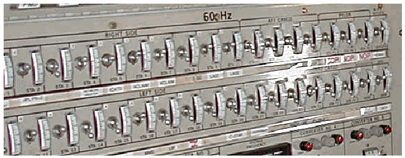
Figure 12. Panel with 34 switches.
図12. 34個のスイッチを備えたパネル。
4.3 Cost and Practical Considerations
4.3 コストと実務上の考慮事項
Combinatorial methods can be highly effective and reduce the cost of testing substantially. For example, Justin Hunter has applied these methods to a wide variety of test problems and consistently found both lower cost and more rapid error detection [30]. But as with most aspects of engineering, tradeoffs must be considered. Among the most important is the question of when to stop testing, balancing the cost of testing against the risk of failing to discover additional failures. An extensive body of research has been devoted to this topic, and sophisticated models are available for determining when the cost of further testing will exceed the expected benefits [10, 45]. Existing models for when to stop testing can be applied to the combinatorial test approach also, but there is an additional consideration: What is the appropriate interaction strength to use in this type of testing?
組合せ手法は非常に効果的であり、テストのコストを大幅に削減できる。例えば、Justin Hunterはこれらの手法を幅広いテスト問題に適用し、一貫してコストの低減と、より迅速な誤り検出を実現している[30]。ただし、エンジニアリングの多くの側面と同様に、トレードオフを考慮する必要がある。特に重要なのは、いつテストを終了するかという問題である。これは、追加の障害を発見できないリスクとテスト費用のバランスを取ることを意味する。この問題については広範な研究が行われており、追加テストの費用が期待される便益を上回る時点を判断するための高度なモデルが利用できる[10, 45]。テスト終了時点に関する既存モデルは、組合せテストにも適用できるが、さらに考慮すべき点がある。この種のテストでは、どの相互作用強度を使用するのが適切か。
未レビュー訳To address these questions consider the number of tests at different interaction strengths for an avionics software example [34] shown in Figure 13. While the number of tests will be different (probably much smaller than in Figure 13) depending on the system under test, the magnitude of difference between levels of \(t\) will be similar to Figure 13, because the number of tests grows with \(v^t\), for parameters with \(v\) values. That is, the number of tests grows with the exponent \(t\), so we want to use the smallest interaction strength that is appropriate for the problem. Intuitively, it seems that if no failures are detected by \(t\)-way tests, then it may be reasonable to conduct additional testing only for \(t+1\) interactions, but no greater if no additional failures are found at \(t+1\). In the empirical studies of software failures, the number of failures detected at \(t > 2\) decreased monotonically with \(t\), so this heuristic seems to make sense: start testing using 2-way (pairwise) combinations, continue increasing the interaction strength \(t\) until no errors are detected by the \(t\)-way tests, then (optionally) try \(t+1\) and ensure that no additional errors are detected. As with other aspects of software development, this guideline is also dependent on resources, time constraints, and cost-benefit considerations.
これらの問いに答えるため、図13に示す航空電子機器ソフトウェアの例[34]について、相互作用強度ごとのテスト数を考える。テスト数はテスト対象システムによって異なる（おそらく図13よりかなり少ない）が、\(t\)の水準間の差の大きさは図13と同程度になる。テスト数は\(v^t\)に応じて増加するからである（各パラメーターの値は\(v\)個とする）。つまり、テスト数は指数\(t\)とともに増加するので、問題に適した最小の相互作用強度を使いたい。直感的には、\(t\)-wayテストで障害が検出されなければ、追加のテストは\(t+1\)の相互作用についてだけ行い、\(t+1\)で新たな障害が見つからなければそれより上は行わない、というのが妥当と思われる。ソフトウェア障害の実証研究では、\(t > 2\)で検出される障害の数は\(t\)とともに単調に減少したので、次のヒューリスティックは理にかなっていると考えられる。2-way（ペアワイズ）の組合せでテストを始め、\(t\)-wayテストで誤りが検出されなくなるまで相互作用強度\(t\)を上げ続け、その後（任意で）\(t+1\)を試して、新たな誤りが検出されないことを確認する。ソフトウェア開発の他の側面と同様に、この指針も資源、時間的制約、費用対効果の考慮に左右される。
12000
12000
未レビュー訳原本PDFの抜粋画像
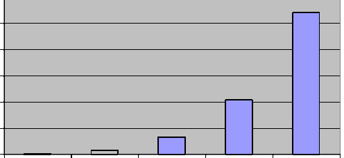
10000
10000
未レビュー訳8000
8000
未レビュー訳6000
6000
未レビュー訳4000
4000
未レビュー訳2000
2000
未レビュー訳0 2-way 3-way 4-way 5-way 6-way
0 2-way 3-way 4-way 5-way 6-way
未レビュー訳Figure 13. Number of tests for avionics example. When applying combinatorial methods to input parameters, the key cost factors are
図13. 航空電子機器の例におけるテスト数。入力パラメーターに組合せ手法を適用する際の主なコスト要因は、
未レビュー訳the number of values per parameter, the interaction strength, and the number of parameters. As shown above, the number of tests increases rapidly as the value of t is increased, but the rate of increase depends on the number of values per parameter. Binary variables, with only two values each, result in far fewer tests than parameters with many values each. As a practical matter, when partitioning the input space (section 4.1), it is best to keep the number of values per parameter below 8 or 10 if possible.
パラメーターごとの値の数、相互作用強度、およびパラメーター数である。前述のとおり、tの値を大きくするとテスト数は急増するが、その増加率はパラメーターあたりの値の数に左右される。それぞれ二つの値しか持たない二値変数では、値を多数持つパラメーターに比べてテスト数がはるかに少なくなる。実務上、入力空間を分割する場合（4.1節）、可能であればパラメーターごとの値の数を8または10未満に抑えるのが望ましい。
未レビュー訳Because the number of tests increases only logarithmically with the number of parameters, test set size for a large problem may be only somewhat larger than for a much smaller problem. For example, if a project uses combinatorial testing for a system that has 20 parameters and generates several hundred tests, a much larger system with 40 to 50 parameters may only require a few dozen more tests. Combinatorial methods may generate the best cost benefit ratio for large systems.
テスト数はパラメーター数に対して対数的にしか増加しないため、大規模な問題のテスト集合の大きさは、はるかに小さな問題のものよりいくらか大きいだけで済むことがある。例えば、あるプロジェクトが20個のパラメーターを持つシステムに組合せテストを適用して数百件のテストを生成する場合、40から50個のパラメーターを持つはるかに大きなシステムでも、必要なテストは数十件増えるだけかもしれない。組合せ手法は、大規模システムで最も良い費用便益比をもたらす可能性がある。
4.4 Chapter Summary
4.4 本章の要約
1.The key advantage of combinatorial testing derives from the fact that all, or nearly all, software failures appear to involve interactions of only a few parameters. Generating a covering array of input parameter values allows us to test all of these interactions, up to a level of 5-way or 6-way combinations, depending on resources.
1.組合せテストの主な利点は、ソフトウェア障害のすべて、またはほぼすべてが、ごく少数のパラメーター間の相互作用に関係しているように見えることから生じる。入力パラメーター値の被覆配列を生成すれば、資源に応じて5-wayまたは6-wayの組合せまで、これらすべての相互作用をテストできる。
未レビュー訳2.Practical testing often requires abstracting the possible values of a variable into a small set of equivalence classes. For example, if a variable is a 32-bit integer, it is clearly not possible to test the full range of values in +/- 231. This problem is not unique to combinatorial testing, but occurs in most test methodologies. Simple heuristics and engineering judgment are required to determine the appropriate portioning of values into equivalence classes, but once this is accomplished it is possible to generate covering arrays of a few hundred to a few thousand tests for many applications. The thoroughness of coverage will depend on resources and criticality of the application.
2.実際のテストでは、変数が取り得る値を少数の同値クラスに抽象化する必要がある場合が多い。例えば、変数が32ビット整数の場合、+/- 231の全範囲をテストすることは明らかに不可能である。この問題は組合せテストに固有のものではなく、ほとんどのテスト手法で生じる。同値クラスに含める値の適切な範囲を判断するには、単純なヒューリスティックとエンジニアリング上の判断が必要となる。いったんこれを決定すれば、多くのアプリケーションについて数百から数千件のテストを含む被覆配列を生成できる。網羅性は、利用可能な資源とアプリケーションの重要度によって決まる。
未レビュー訳5 SEQUENCE-COVERING ARRAYS
5 シーケンス被覆配列
未レビュー訳In testing event-driven software, the critical condition for triggering failures often is whether or not a particular event has occurred prior to a second one, not necessarily if they are back to back. This situation reflects the fact that in many cases, a particular state must be reached before a particular failure can be triggered. For example, a failure might occur when connecting device A only if device B is already connected. The methods described in this chapter were developed to solve a real problem in interoperability test and evaluation, using combinatorial methods to provide efficient testing. Sequence covering arrays, as defined here, ensure that any t events will be tested in every possible t-way order.
イベント駆動型ソフトウェアのテストでは、障害を引き起こす重要な条件は、多くの場合、あるイベントが別のイベントの直前に発生したかどうかではなく、先行して発生したかどうかである。多くの場合、特定の障害が引き起こされる前に、特定の状態に到達する必要があるという事実を反映している。例えば、デバイスAを接続する際、デバイスBがすでに接続されている場合にのみ障害が発生することがある。本章で説明する手法は、相互運用性の試験・評価における実問題を解決するため、効率的なテストに組合せ手法を活用して開発された。ここで定義するシーケンス被覆配列は、任意のt個のイベントについて、考えられるすべてのt-way順序をテストすることを保証する。
未レビュー訳For this problem we can define a sequence-covering
原文のみ
In many systems,
原文のみ
array [39, 40], which is a set of tests that ensure all t-way
原文のみ
the order of inputs
原文のみ
sequences of events have been tested. The t events in the sequence may be interleaved with others, but all permutations is important. will be tested. For example, we may have a component of a factory automation system that uses certain devices interacting with a control program. We want to test the events defined in Table 6.
原文のみ
There are \(6! = 720\) possible sequences for these six events, and the system should respond correctly and safely no matter the order in which they occur. Operators may be instructed to use a particular order, but mistakes are inevitable, and should not result in injury to users or compromise the enterprise. Because setup, connections and operation of this component are manual, each test can take a considerable amount of time. It is not uncommon for system-level tests such as this to take hours to execute, monitor, and complete. We want to test this system as thoroughly as possible, but time and budget constraints do not allow for testing all possible sequences, so we will test all 3-event sequences.
これら六つのイベントには\(6! = 720\)通りのシーケンスがあり得る。システムは、イベントがどの順序で発生しても、正しくかつ安全に応答すべきである。オペレーターは特定の順序を使うよう指示されることがあるが、誤りは避けられず、その誤りが利用者の負傷や組織への危害につながってはならない。このコンポーネントのセットアップ、接続、操作は手作業であるため、テスト1件にかなりの時間がかかることがある。このようなシステムレベルのテストでは、実行、監視、完了に数時間かかることも珍しくない。このシステムをできる限り徹底的にテストしたいが、時間と予算の制約からすべてのシーケンスをテストすることはできないので、3イベントのシーケンスをすべてテストする。
With six events, \(a\), \(b\), \(c\), \(d\), \(e\), and \(f\), one subset of three is \(\{b, d, e\}\), which can be arranged in six permutations: \([b\ d\ e]\), \([b\ e\ d]\), \([d\ b\ e]\), \([d\ e\ b]\), \([e\ b\ d]\), \([e\ d\ b]\). A test that covers the permutation \([d\ b\ e]\) is: \([a\ d\ c\ f\ b\ e]\); another is \([a\ d\ c\ b\ e\ f]\). A larger example system may have 10 devices to connect, in which case the number of permutations is \(10!\), or 3,628,800 tests for exhaustive testing. In that case, a 3-way sequence covering array with 14 tests covering all \(10 \cdot 9 \cdot 8 = 720\) 3-way sequences is a dramatic improvement, as is 72 tests for all 4-way sequences (see Table 8).
六つのイベント\(a\)、\(b\)、\(c\)、\(d\)、\(e\)、\(f\)がある場合、三つからなる部分集合の一つは\(\{b, d, e\}\)であり、これは六通りの順列に並べられる。すなわち\([b\ d\ e]\)、\([b\ e\ d]\)、\([d\ b\ e]\)、\([d\ e\ b]\)、\([e\ b\ d]\)、\([e\ d\ b]\)である。順列\([d\ b\ e]\)を網羅するテストの一つは\([a\ d\ c\ f\ b\ e]\)であり、もう一つは\([a\ d\ c\ b\ e\ f]\)である。より大きなシステムの例では、接続するデバイスが10台あることがあり、その場合の順列の数は\(10!\)、すなわち全数テストでは3,628,800件のテストとなる。この場合、\(10 \cdot 9 \cdot 8 = 720\)通りの3-wayシーケンスすべてを14件のテストで網羅する3-wayシーケンス被覆配列は、劇的な改善である。すべての4-wayシーケンスを72件のテストで網羅できることも同様である（表8を参照）。
| Event | Description |
| a | connect air flow meter |
| b | connect pressure gauge |
| c | connect satellite link |
| d | connect pressure readout |
| e | engage drive motor |
| f | engage steering control |
原本PDFの抜粋画像
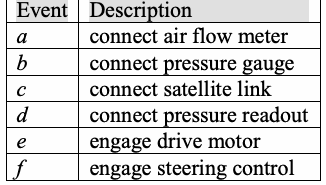
| イベント | 説明 |
| a | 気流計を接続 |
| b | 圧力計を接続 |
| c | 衛星回線を接続 |
| d | 圧力表示器を接続 |
| e | 駆動モーターを起動 |
| f | 操舵制御を起動 |
Table 6. System events
表6. システムイベント
未レビュー訳Definition. We define a sequence covering array, SCA(N, S, t) as an N x S matrix where entries are from a finite set S of s symbols, such that every t-way permutation of symbols from S occurs in at least one row; the t symbols in the permutation are not required to be adjacent. That is, for every t-way arrangement of symbols x , x , ..., x , the regular
定義。シーケンス被覆配列SCA(N, S, t)を、要素が有限集合S（s個の記号から成る）に属するN x S行列であって、Sの記号によるすべてのt-way順列が少なくとも一行に現れるものと定義する。順列中のt個の記号は隣接している必要はない。すなわち、記号x₁、x₂、…、xₜのすべてのt-way配列について、その正規
未レビュー訳1 2 t
1 2 t
未レビュー訳expression .*x .*x .*x .* matches at least one row in the array. Sequence covering arrays,
表現 .*x₁.*x₂.*….*xₜ.* が配列の少なくとも一行に一致する。シーケンス被覆配列は、
未レビュー訳1 2 t
1 2 t
未レビュー訳as the name implies, are analogous to standard covering arrays, which include at least one of every t-way combination of any n variables, where t<n. A variety of algorithms are available for constructing covering arrays, but these are not usable for generating t-way sequences because they are designed to cover combinations in any order.
その名が示すとおり、標準的な被覆配列に類似している。標準的な被覆配列は、t<nであるとき、n個の変数の任意のt-way組合せを少なくとも一つずつ含む。被覆配列を構築するためのさまざまなアルゴリズムが利用できるが、任意の順序における組合せを網羅するよう設計されているため、t-wayシーケンスの生成には使用できない。
未レビュー訳Example 1. Consider the problem of testing four events, a, b, c, and d. For convenience, a t-way permutation of symbols is referred to as a t-way sequence. There are 4! = 24 possible permutations of these four events, but we can test all 3-way sequences of these events with only six tests (see Table 7).
例1。四つのイベントa、b、c、dをテストする問題を考える。簡単のため、記号のt-way順列をt-wayシーケンスと呼ぶ。これら四つのイベントには4! = 24通りの順列があるが、わずか六件のテストですべての3-wayシーケンスをテストできる（表7を参照）。
未レビュー訳| テスト | ||||
| 1 | a | d | b | c |
| 2 | b | a | c | d |
| 3 | b | d | c | a |
| 4 | c | a | b | d |
| 5 | c | d | b | a |
| 6 | d | a | c | b |
Table 7. Tests for four events.
表7. 四つのイベントに対するテスト。
5.1 Constructing Sequence Covering Arrays
5.1 シーケンス被覆配列の構築
未レビュー訳A 2-way sequence covering array can be constructed by listing the events in some order for one test and in reverse order for the second test:
2-wayシーケンス被覆配列は、一つ目のテストでイベントをある順序で並べ、二つ目のテストでその逆順に並べることで構築できる。
| 1 | a | b | c | d |
| 2 | d | c | b | a |
To see that the procedure in Example 2 generates tests that cover all 2-way sequences, note that for 2-way sequence coverage, every pair of variables x and y, x..y and y..x must both be in some test (where a..b means that a is eventually followed by b). All variables are included in each test, therefore any sequence x..y must be in either test 1 or test 2 and its reverse y..x in the other test.
例2の手順で、すべての2-wayシーケンスを網羅するテストが生成されることを確認するには、2-wayシーケンスの網羅では、変数のすべてのペアxとyについて、x..yとy..xの両方が、いずれかのテストに含まれなければならない点に注目する（a..bは、aの後に最終的にbが続くことを意味する）。すべての変数が各テストに含まれるため、任意のシーケンスx..yはテスト1またはテスト2のいずれかに含まれ、その逆のy..xはもう一方のテストに含まれる。
未レビュー訳For \(t\)-way sequence test generation, where \(\mathrm{t} > 2\), we use a greedy algorithm that generates a large number of tests, scores each by the number of previously uncovered sequences it covers, then chooses the highest scoring test. This simple approach produces surprisingly good results,
\(t\)-wayシーケンスのテスト生成（\(\mathrm{t} > 2\)の場合）には、多数のテストを生成し、それぞれが網羅する未網羅のシーケンスの数で点数を付け、最も点数の高いテストを選ぶ貪欲アルゴリズムを使う。この単純な方法は驚くほど良い結果をもたらし、
5.2 Using Sequence Covering Arrays
5.2 シーケンス被覆配列の使用
Sequence covering arrays have been incorporated into operational testing for a mission-critical system that uses multiple devices with inputs and outputs to a laptop computer. The test procedure has 8 steps: boot system, open application, run scan, connect peripherals P-1 through P-5. It is expected that for some sequences, the system will not function properly, thus the order of connecting peripherals is a critical aspect of testing. In addition, there are constraints on the sequence of events: can't scan until the app is open; can't open app until system is booted. There are 40,320 permutations of 8 steps, but some are redundant (e.g., changing the order of peripherals connected before boot), and some are invalid (violates a constraint). Around 7,000 are valid, and non-redundant, but this is far too many to test for a system that requires manual, physical connections of devices.
複数のデバイスと、ノートパソコンとの間の入力・出力を使用するミッションクリティカルなシステムの運用試験に、シーケンス被覆配列が取り入れられている。テスト手順は、システムの起動、アプリケーションの起動、スキャンの実行、周辺機器P-1からP-5の接続という8段階から成る。一部のシーケンスではシステムが正しく動作しないと想定されるため、周辺機器の接続順序はテストの重要な要素である。また、イベントの順序には制約がある。アプリケーションを開く前にスキャンを実行することはできず、システムの起動前にアプリケーションを開くこともできない。8段階の順列は40,320通りあるが、冗長なもの（例えば、起動前に接続する周辺機器の順序を変えただけのもの）や、無効なもの（制約に違反するもの）もある。有効かつ非冗長な順列は約7,000通りあるが、デバイスを手作業で物理的に接続する必要のあるシステムでテストするには多すぎる。
未レビュー訳The system was tested using a seven-step sequence covering array, incorporating the assumption that there is no need to examine strength-3 sequences that involve boot-up. The initial test configuration (Figure 14) was drawn from the library of pre-computed sequence tests. Some changes were made to the pre-computed sequences based on unique requirements of the system test. If 6='Open App' and 5='Run Scan', then cases 1, 4, 6, 8, 10, and 12 are invalid, because the scan cannot be run before the application is started. This was handled by 'swapping 0 and 1' when they are adjacent (1 and 4), out of order. For the other cases, several cases were generated from each that were valid mutations of the invalid case. A test was also embedded to see whether it mattered where each of three USB connections were placed. The last test case ensures at least strength 2 (sequence of length 2) for all peripheral connections and 'Boot', i.e., that each peripheral connection occurs prior to boot. The final test array is shown in Table 9.
システムは、起動を含む強度3のシーケンスを調べる必要はないという前提を取り入れた、7ステップのシーケンス被覆配列を用いてテストされた。初期のテスト構成（図14）は、事前計算済みのシーケンステストのライブラリから取得した。システムテスト固有の要件に基づき、事前計算済みのシーケンスにいくつかの変更を加えた。6='Open App'かつ5='Run Scan'とすると、アプリケーションを起動する前にスキャンを実行することはできないため、ケース1、4、6、8、10、12は無効である。これについては、両者が隣接して順序が逆になっている場合（ケース1と4）、「0と1を入れ替える」ことで対処した。その他のケースについては、無効なケースを有効な形に変異させたケースを、それぞれから複数生成した。また、三つのUSB接続のそれぞれをどこに配置するかが影響するかどうかを調べるテストも組み込んだ。最後のテストケースは、すべての周辺機器接続と'Boot'について少なくとも強度2（長さ2のシーケンス）を保証する。すなわち、各周辺機器の接続が起動より前に行われる場合を保証する。最終的なテスト配列を表9に示す。
| TTTTeeeesssstttt 1111 | 0 | 1 | 2 | 3 | 4 | 5 | 6 |
| TTTTeeeesssstttt 2222 | 6 | 5 | 4 | 3 | 2 | 1 | 0 |
| TTTTeeeesssstttt 3333 | 2 | 1 | 0 | 6 | 5 | 4 | 3 |
| TTTTeeeesssstttt 4444 | 3 | 4 | 5 | 6 | 0 | 1 | 2 |
| TTTTeeeesssstttt 5555 | 4 | 1 | 6 | 0 | 3 | 2 | 5 |
| TTTTeeeesssstttt 6666 | 5 | 2 | 3 | 0 | 6 | 1 | 4 |
| TTTTeeeesssstttt 7777 | 0 | 6 | 4 | 5 | 2 | 1 | 3 |
| TTTTeeeesssstttt 8888 | 3 | 1 | 2 | 5 | 4 | 6 | 0 |
| TTTTeeeesssstttt 9999 | 6 | 2 | 5 | 0 | 3 | 4 | 1 |
| TTTTeeeesssstttt 11110000 | 1 | 4 | 3 | 0 | 5 | 2 | 6 |
| TTTTeeeesssstttt 11111111 | 2 | 0 | 3 | 4 | 6 | 1 | 5 |
| TTTTeeeesssstttt 11112222 | 5 | 1 | 6 | 4 | 3 | 0 | 2 |
原本PDFの抜粋画像
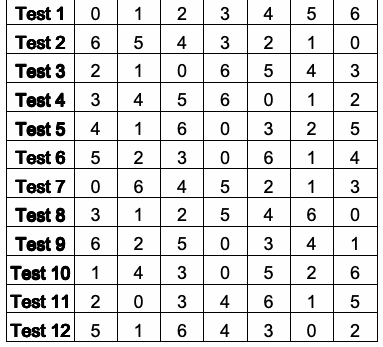
Figure 14. Sevenevent test from precomputed test library.
図14. 事前計算済みテストライブラリから得た七イベントテスト。
5.3 Cost and Practical Considerations
5.3 コストと実務上の考慮事項
As with other forms of combinatorial testing, some combinations may be either impossible or not exist on the system under test. For example, ‘receive message’ must occur before ‘process message’. The algorithm we have developed makes it possible to specify pairs x,y, where the sequence x..y is to be excluded from the generated covering array. Typically this will lead to extra tests, but does not increase the test array significantly.
他の形式の組合せテストと同様に、組合せの中には実現不可能なものや、テスト対象システムに存在しないものがある。例えば、「メッセージの処理」より先に「メッセージの受信」が起きなければならない。開発したアルゴリズムでは、x..yというシーケンスを生成する被覆配列から除外するペアx、yを指定できる。通常、これはテスト数を増やすが、テスト配列を大幅に増大させるものではない。
未レビュー訳5.4 Chapter Summary
5.4 本章の要約
1.Sequence covering arrays are a new application of combinatorial methods, developed by NIST to solve problems with interoperability testing. A sequence-covering array is a set of tests that ensure all t-way sequences of events have been tested. The t events in the sequence may be interleaved with others, but all permutations will be tested.
1.シーケンス被覆配列は、相互運用性テストの問題を解決するためにNISTが開発した、組合せ手法の新たな応用である。シーケンス被覆配列は、すべてのt-wayイベントシーケンスがテストされることを保証するテスト集合である。シーケンス中のt個のイベントの間に他のイベントが入ってもよいが、すべての順列がテストされる。
未レビュー訳2.All 2-way sequences can be tested simply by listing the events to be tested in any order, then reversing the order to create a second test. Algorithms have been developed to create sequence covering arrays for higher strength interaction levels.
2.すべての2-wayシーケンスは、テスト対象のイベントを任意の順序で並べ、次にその順序を逆にして二つ目のテストを作成するだけでテストできる。より高い相互作用強度のシーケンス被覆配列を作成するアルゴリズムも開発されている。
未レビュー訳3.As with other types of combinatorial testing, constraints may be important, since it is very common that certain events depend on others occurring first. The tools NIST has developed for this problem allow the user to specify constraints in the form of excluded sequences which will not appear in the generated test array.
3.他の種類の組合せテストと同様、制約が重要な場合がある。イベントの中には、他のイベントが先に発生することを必要とするものが非常に多いためである。NISTがこの問題向けに開発したツールでは、生成されるテスト配列に含めないシーケンスとして制約を指定できる。
未レビュー訳| Events | 3-seq Tests | 4-seq Tests |
| 5 | 8 | 29 |
| 6 | 10 | 38 |
| 7 | 12 | 50 |
| 8 | 12 | 56 |
| 9 | 14 | 68 |
| 10 | 14 | 72 |
| 11 | 14 | 78 |
| 12 | 16 | 86 |
| 13 | 16 | 92 |
| 14 | 16 | 100 |
| 15 | 18 | 108 |
| 16 | 18 | 112 |
| 17 | 20 | 118 |
| 18 | 20 | 122 |
| 19 | 22 | 128 |
| 20 | 22 | 134 |
| 21 | 22 | 134 |
| 22 | 22 | 140 |
| 23 | 24 | 146 |
| 24 | 24 | 146 |
| 25 | 24 | 152 |
| 26 | 24 | 158 |
| 27 | 26 | 160 |
| 28 | 26 | 162 |
| 29 | 26 | 166 |
| 30 | 26 | 166 |
| 40 | 32 | 198 |
| 50 | 34 | 214 |
| 60 | 38 | 238 |
| 70 | 40 | 250 |
| 80 | 42 | 264 |
| 90 | 44 | |
| 100 | 44 |
原本PDFの抜粋画像
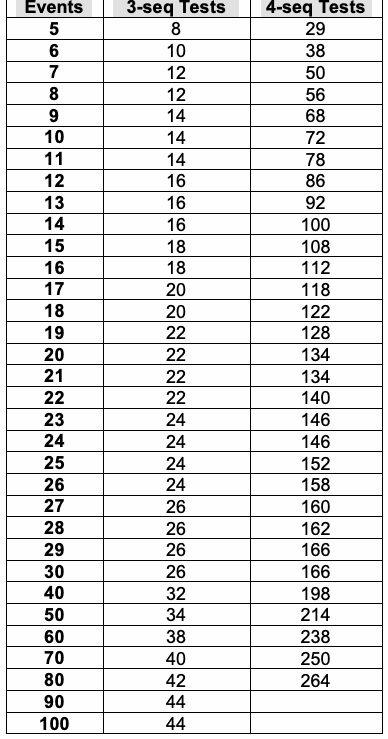
| イベント数 | 3-seqテスト数 | 4-seqテスト数 |
| 5 | 8 | 29 |
| 6 | 10 | 38 |
| 7 | 12 | 50 |
| 8 | 12 | 56 |
| 9 | 14 | 68 |
| 10 | 14 | 72 |
| 11 | 14 | 78 |
| 12 | 16 | 86 |
| 13 | 16 | 92 |
| 14 | 16 | 100 |
| 15 | 18 | 108 |
| 16 | 18 | 112 |
| 17 | 20 | 118 |
| 18 | 20 | 122 |
| 19 | 22 | 128 |
| 20 | 22 | 134 |
| 21 | 22 | 134 |
| 22 | 22 | 140 |
| 23 | 24 | 146 |
| 24 | 24 | 146 |
| 25 | 24 | 152 |
| 26 | 24 | 158 |
| 27 | 26 | 160 |
| 28 | 26 | 162 |
| 29 | 26 | 166 |
| 30 | 26 | 166 |
| 40 | 32 | 198 |
| 50 | 34 | 214 |
| 60 | 38 | 238 |
| 70 | 40 | 250 |
| 80 | 42 | 264 |
| 90 | 44 | |
| 100 | 44 |
Table 8. Number of tests for combinatorial 3way and 4way sequences.
表8. 組合せ3-wayおよび4-wayシーケンスのテスト数。
Table 9. Final sequence covering array used in testing.
表9. テストに使用した最終シーケンス被覆配列。
未レビュー訳| Original Case | Case | Step1 | Step2 | Step3 | Step4 | Step5 | Step6 | Step7 | Step8 |
| 1 | 1 | Boot | P-1 (USB-RIGHT) | P-2 (USB-BACK) | P-3 (USB-LEFT) | P-4 | P-5 | Application | Scan |
| 2 | 2 | Boot | Application | Scan | P-5 | P-4 | P-3 (USB-RIGHT) | P-2 (USB-BACK) | P-1 (USB-LEFT) |
| 3 | 3 | Boot | P-3 (USB-RIGHT) | P-2 (USB-LEFT) | P-1 (USB-BACK) | Application | Scan | P-5 | P-4 |
| 4 | 4 | Boot | P-4 | P-5 | Application | Scan | P-1 (USB-RIGHT) | P-2 (USB-LEFT) | P-3 (USB-BACK) |
| 5 | 5 | Boot | P-5 | P-2 (USB-RIGHT) | Application | P-1 (USB-BACK) | P-4 | P-3 (USB-LEFT) | Scan |
| 6A | 6 | Boot | Application | P-3 (USB-BACK) | P-4 | P-1 (USB-LEFT) | Scan | P-2 (USB-RIGHT) | P-5 |
| 6B | 7 | Boot | Application | Scan | P-3 (USB-LEFT) | P-4 | P-1 (USB-RIGHT) | P-2 (USB-BACK) | P-5 |
| 6C | 8 | Boot | P-3 (USB-RIGHT) | P-4 | P-1 (USB-LEFT) | Application | Scan | P-2 (USB-BACK) | P-5 |
| 6D | 9 | Boot | P-3 (USB-RIGHT) | Application | P-4 | Scan | P-1 (USB-BACK) | P-2 (USB-LEFT) | P-5 |
| 7 | 10 | Boot | P-1 (USB-RIGHT) | Application | P-5 | Scan | P-3 (USB-BACK) | P-2 (USB-LEFT) | P-4 |
| 8A | 11 | Boot | P-4 | P-2 (USB-RIGHT) | P-3 (USB-LEFT) | Application | Scan | P-5 | P-1 (USB-BACK) |
| 8B | 12 | Boot | P-4 | P-2 (USB-RIGHT) | P-3 (USB-BACK) | P-5 | Application | Scan | P-1 (USB-LEFT) |
| 9 | 13 | Boot | Application | P-3 (USB-LEFT) | Scan | P-1 (USB-RIGHT) | P-4 | P-5 | P-2 (USB-BACK) |
| 10A | 14 | Boot | P-2 (USB-BACK) | P-5 | P-4 | P-1 (USB-LEFT) | P-3 (USB-RIGHT) | Application | Scan |
| 10B | 15 | Boot | P-2 (USB-LEFT) | P-5 | P-4 | P-1 (USB-BACK) | Application | Scan | P-3 (USB-RIGHT) |
| 11 | 16 | Boot | P-3 (USB-BACK) | P-1 (USB-RIGHT) | P-4 | P-5 | Application | P-2 (USB-LEFT) | Scan |
| 12A | 17 | Boot | Application | Scan | P-2 (USB-RIGHT) | P-5 | P-4 | P-1 (USB-BACK) | P-3 (USB-LEFT) |
| 12B | 18 | Boot | P-2 (USB-RIGHT) | Application | Scan | P-5 | P-4 | P-1 (USB-LEFT) | P-3 (USB-BACK) |
| NA | 19 | P-5 | P-4 | P-3 (USB-LEFT) | P-2 (USB-RIGHT) | P-1 (USB-BACK) | Boot | Application | Scan |
原本PDFの抜粋画像
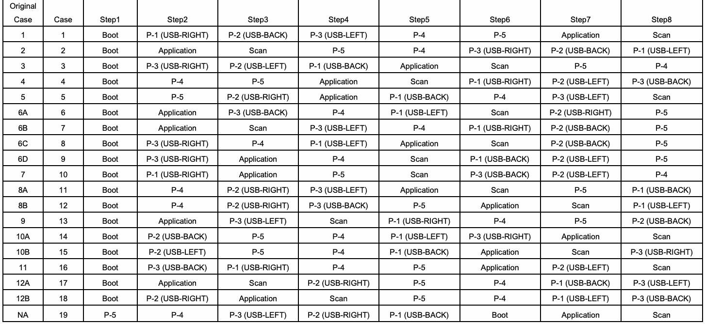
| 元のケース | ケース | 手順1 | 手順2 | 手順3 | 手順4 | 手順5 | 手順6 | 手順7 | 手順8 |
| 1 | 1 | Boot | P-1 (USB-RIGHT) | P-2 (USB-BACK) | P-3 (USB-LEFT) | P-4 | P-5 | Application | Scan |
| 2 | 2 | Boot | Application | Scan | P-5 | P-4 | P-3 (USB-RIGHT) | P-2 (USB-BACK) | P-1 (USB-LEFT) |
| 3 | 3 | Boot | P-3 (USB-RIGHT) | P-2 (USB-LEFT) | P-1 (USB-BACK) | Application | Scan | P-5 | P-4 |
| 4 | 4 | Boot | P-4 | P-5 | Application | Scan | P-1 (USB-RIGHT) | P-2 (USB-LEFT) | P-3 (USB-BACK) |
| 5 | 5 | Boot | P-5 | P-2 (USB-RIGHT) | Application | P-1 (USB-BACK) | P-4 | P-3 (USB-LEFT) | Scan |
| 6A | 6 | Boot | Application | P-3 (USB-BACK) | P-4 | P-1 (USB-LEFT) | Scan | P-2 (USB-RIGHT) | P-5 |
| 6B | 7 | Boot | Application | Scan | P-3 (USB-LEFT) | P-4 | P-1 (USB-RIGHT) | P-2 (USB-BACK) | P-5 |
| 6C | 8 | Boot | P-3 (USB-RIGHT) | P-4 | P-1 (USB-LEFT) | Application | Scan | P-2 (USB-BACK) | P-5 |
| 6D | 9 | Boot | P-3 (USB-RIGHT) | Application | P-4 | Scan | P-1 (USB-BACK) | P-2 (USB-LEFT) | P-5 |
| 7 | 10 | Boot | P-1 (USB-RIGHT) | Application | P-5 | Scan | P-3 (USB-BACK) | P-2 (USB-LEFT) | P-4 |
| 8A | 11 | Boot | P-4 | P-2 (USB-RIGHT) | P-3 (USB-LEFT) | Application | Scan | P-5 | P-1 (USB-BACK) |
| 8B | 12 | Boot | P-4 | P-2 (USB-RIGHT) | P-3 (USB-BACK) | P-5 | Application | Scan | P-1 (USB-LEFT) |
| 9 | 13 | Boot | Application | P-3 (USB-LEFT) | Scan | P-1 (USB-RIGHT) | P-4 | P-5 | P-2 (USB-BACK) |
| 10A | 14 | Boot | P-2 (USB-BACK) | P-5 | P-4 | P-1 (USB-LEFT) | P-3 (USB-RIGHT) | Application | Scan |
| 10B | 15 | Boot | P-2 (USB-LEFT) | P-5 | P-4 | P-1 (USB-BACK) | Application | Scan | P-3 (USB-RIGHT) |
| 11 | 16 | Boot | P-3 (USB-BACK) | P-1 (USB-RIGHT) | P-4 | P-5 | Application | P-2 (USB-LEFT) | Scan |
| 12A | 17 | Boot | Application | Scan | P-2 (USB-RIGHT) | P-5 | P-4 | P-1 (USB-BACK) | P-3 (USB-LEFT) |
| 12B | 18 | Boot | P-2 (USB-RIGHT) | Application | Scan | P-5 | P-4 | P-1 (USB-LEFT) | P-3 (USB-BACK) |
| NA | 19 | P-5 | P-4 | P-3 (USB-LEFT) | P-2 (USB-RIGHT) | P-1 (USB-BACK) | Boot | Application | Scan |
6 MEASURING COMBINATORIAL COVERAGE
6 組合せ被覆率の測定
未レビュー訳Since it is nearly always impossible to test all possible combinations, combinatorial testing is a reasonable alternative. For some value of t, testing all t-way interactions among n parameters will detect nearly all errors. It is possible that t = n, but recalling the empirical data on failures, we would expect t to be relatively small. Determining the level of input or configuration state space coverage can help in understanding the degree of risk that remains after testing. If 90% - 100% of the state space has been covered, then presumably the risk is small, but if coverage is much smaller, then the risk may be substantial. This chapter describes some measures of combinatorial coverage that can be helpful in estimating this risk that we have applied to tests for spacecraft software [50] but have general application to any combinatorial coverage problem.
考えられるすべての組合せをテストすることはほぼ常に不可能であるため、組合せテストは妥当な代替手段となる。あるtの値について、n個のパラメーター間のすべてのt-way相互作用をテストすれば、ほぼすべての誤りを検出できる。t = nとなることもあり得るが、障害に関する実証データを踏まえると、tは比較的小さいと考えられる。入力または構成状態空間の網羅度を判断することで、テスト後にどの程度のリスクが残るかを理解しやすくなる。状態空間の90% - 100%が網羅されていればリスクは小さいと推測できるが、網羅率が大幅に低ければ、リスクは大きい可能性がある。本章では、宇宙機ソフトウェアのテストに適用した組合せ網羅率の測定方法[50]を説明する。これらの方法は、あらゆる組合せ網羅の問題に広く適用でき、残存リスクの推定に役立つ。
未レビュー訳6.1 Software Test Coverage
6.1 ソフトウェアテストの網羅率
Test coverage is one of the most important topics in software assurance. Users would like some quantitative measure to judge the risk in using a product. For a given test set, what can we say about the combinatorial coverage it provides? With physical products, such as light bulbs or motors, reliability engineers can provide a probability of failure within a particular time frame. This is possible because the failures in physical products are typically the result of natural processes, such as metal fatigue.
テスト網羅率は、ソフトウェア保証における最も重要な話題の一つである。利用者は、製品を使用するリスクを判断するための定量的な指標を求めている。特定のテストセットが、どのような組合せ網羅率をもたらすかをどう評価できるだろうか。電球やモーターなどの物理的製品では、信頼性エンジニアが特定の期間内に故障する確率を提示できる。物理的製品の故障は通常、金属疲労などの自然な過程によって生じるため、これが可能である。
未レビュー訳With software the situation is more complex, and many
原文のみ
Commonly used
原文のみ
different approaches have been devised for determining software
原文のみ
coverage
原文のみ
test coverage. With millions of lines of code, or only with a few
原文のみ
measures do not
原文のみ
thousand, the number of paths through a program is so large that it is impossible to test all paths. For each if statement, there are apply well to two possible branches, so a sequence of n if statements will combinatorial result in 2n possible paths. Thus even a small program with only testing. 270 if statements in an execution trace may have more possible paths than there are atoms in the universe, which is on the order of 1080. With loops (while statements) the number of possible paths is literally infinite. Thus a variety of measures have been developed to gauge the degree of test coverage. The following are some of the better-known coverage metrics:
原文のみ
•Statement coverage: This is the simplest of coverage criteria – the percentage of statements exercised by the test set. While it may seem at first that 100% statement coverage should provide good confidence in the program, in practice, statement coverage is a relatively weak criterion. At best, statement coverage represents a sanity check: unless statement coverage is close to 100%, the test set is probably inadequate.
•ステートメント網羅率：最も単純な網羅基準であり、テストセットによって実行されたステートメントの割合を表す。ステートメント網羅率が100%であればプログラムに対する高い信頼が得られるように思えるが、実際には比較的弱い基準である。せいぜい健全性の確認を示すにすぎず、ステートメント網羅率が100%に近くなければ、テストセットはおそらく不十分である。
未レビュー訳•Decision or branch coverage: The percentage of branches that have been evaluated to both true and false by the test set.
•判定網羅率または分岐網羅率：テストセットにより真と偽の両方に評価された分岐の割合。
未レビュー訳•Condition coverage: The percentage of conditions within decision expressions that have been evaluated to both true and false. Note that 100% condition coverage does not guarantee 100% decision coverage. For example, “if (A || B) {do something} else {do something else}” is tested with [0 1], [1 0], then A and B will both have been evaluated to 0 and 1, but the else branch will not be taken because neither test leaves both A and B false.
•条件網羅率：判定式内の条件が、真と偽の両方に評価された割合。条件網羅率が100%でも、判定網羅率が100%になるとは限らない点に注意されたい。例えば、“if (A || B) {do something} else {do something else}”を[0 1]と[1 0]でテストすると、AとBはどちらも0と1に評価されているが、どちらのテストでもAとBが両方とも偽にはならないため、else分岐は実行されない。
未レビュー訳•Modified condition decision coverage (MCDC): This is a strong coverage criterion that is required by the US Federal Aviation Administration for Level A (catastrophic failure consequence) software; i.e., software whose failure could lead to complete loss of life. It requires that every condition in a decision in the program has taken on all possible outcomes at least once, and each condition has been shown to independently affect the decision outcome, and that each entry and exit point have been invoked at least once.
•修正条件／判定網羅率（MCDC）：米国連邦航空局（FAA）が、レベルA（壊滅的な故障結果）に該当するソフトウェア、すなわち故障により人命が完全に失われる可能性のあるソフトウェアに要求する、強力な網羅基準である。プログラム内の判定に含まれるすべての条件が、少なくとも一度は取り得るすべての結果となること、各条件が判定結果に独立して影響することが示されること、さらに各入口点および出口点が少なくとも一度呼び出されることを要求する。
未レビュー訳6.2 Combinatorial Coverage
6.2 組合せ網羅率
Note that the coverage measures above depend on access to program source code. Combinatorial testing, in contrast, is a black box technique. Inputs are specified and expected results determined from some form of specification. The program is then treated as simply a processor that accepts inputs and produces outputs, with no knowledge expected of its inner workings.
上記の網羅率尺度は、プログラムのソースコードを利用できることに依存する点に注意されたい。これに対し、組合せテストはブラックボックス技法である。入力を指定し、何らかの形式の仕様から期待結果を決定する。そのうえでプログラムは、入力を受け取り出力を生成する単なる処理装置として扱われ、内部の動作についての知識は前提としない。
Even in the absence of knowledge about a program’s inner structure, we can apply combinatorial methods to produce precise and useful measures. In this case, we measure the state space of inputs. Suppose we have a program that accepts two inputs, x and y, with 10 values each. Then the input state space consists of the 102 = 100 pairs of x and y values, which can be pictured as a checkerboard square of 10 rows by 10 columns. With three inputs, x, y, and z, we would have a cube with 103 = 1,000 points in its input state space. Extending the example to n inputs we would have a (hard to visualize) hypercube of n dimensions with 10n points. Exhaustive testing would require inputs of all 10n combinations, but combinatorial testing could be used to reduce the size of the test set.
プログラムの内部構造を知らなくても、組合せ手法を適用して正確で有用な指標を得ることができる。この場合、入力の状態空間を測定する。10個ずつの値を受け付ける二つの入力x、yを持つプログラムを考える。この場合、入力状態空間はxとyの値の組合せ10^2 = 100個から成り、10行10列のチェッカーボード状の正方形として表せる。三つの入力x、y、zの場合、入力状態空間は10^3 = 1,000個の点から成る立方体となる。この例をn個の入力に拡張すると、10^n個の点を持つn次元の（可視化が難しい）超立方体となる。網羅的テストでは10^n通りすべての組合せを入力する必要があるが、組合せテストを使えばテストセットの規模を削減できる。
未レビュー訳How should state space coverage be measured? Looking closely at the nature of combinatorial testing leads to several measures that are useful. We begin by introducing what will be called a variable-value configuration.
状態空間の網羅率はどのように測定すべきだろうか。組合せテストの性質を詳しく見ると、有用な尺度がいくつか得られる。まず、変数値構成と呼ぶものを導入する。
Definition. For a set of t variables, a variable-value configuration is a set of t valid values, one for each of the variables.
定義。t個の変数の集合に対し、変数値構成とは、各変数に一つずつ対応する、t個の有効な値の集合である。
Example. Given four binary variables, a, b, c, and d, a=0, c=1, d=0 is a variable-value configuration, and a=1, c=1, d=0 is a different variable-value configuration for the same three variables a, c, and d.
例。二値変数a、b、c、dが四つあるとする。a=0、c=1、d=0は変数値構成であり、a、c、dという同じ三変数に対する別の変数値構成はa=1、c=1、d=0である。
未レビュー訳6.2.1 Simple t -way combination coverage
6.2.1 単純なt-way組合せ網羅率
Of the total number of t-way combinations for a given collection of variables, what percentage will be covered by the test set? If the test set is a covering array, then coverage is 100%, by definition, but many test sets not based on covering arrays may still provide significant t-way coverage. If the test set is large, but not designed as a covering array, it is very possible that it provides 2-way coverage or better. For example, random input generation may have been used to produce the tests, and good branch or condition coverage may have been achieved. In addition to the structural coverage figure, for software assurance it would be helpful to know what percentage of 2-way, 3-way, etc. coverage has been obtained.
特定の変数集合に対するt-way組合せの総数のうち、テストセットで網羅される割合はどれほどか。テストセットが被覆配列であれば、定義により網羅率は100%となるが、被覆配列に基づかない多くのテストセットでも、かなりのt-way網羅率を実現できる場合がある。テストセットが大きく、被覆配列として設計されていなくても、2-way以上の網羅率を達成している可能性は十分にある。例えば、ランダム入力生成でテストを作成し、良好な分岐網羅率または条件網羅率を達成している場合がある。構造上の網羅率に加えて、ソフトウェア保証のためには、2-way、3-wayなどの網羅率がどれほど得られたかを知ることが有用である。
未レビュー訳Definition: For a given test set for n variables, simple t-way combination coverage is the proportion of t-way combinations of n variables for which all variable-values configurations are fully covered.
定義：n個の変数に対する特定のテストセットについて、単純なt-way組合せ網羅率とは、変数値構成のすべてが完全に網羅されているn個の変数のt-way組合せの割合である。
Example. Figure 15 shows an example with four binary variables, a, b, c, and d, where each row represents a test. Of the six 2-way combinations, ab, ac, ad, bc, bd, cd, only bd and cd have all four binary values covered, so simple 2-way coverage for the four tests in Figure 15 is 1/3 = 33.3%. There are four 3-way combinations, abc, abd, acd, bcd, each with eight possible configurations: 000, 001, 010, 011, 100, 101, 110, 111. Of the four combinations, none has all eight configurations covered, so simple 3-way coverage for this test set is 0%.
例。図15は、二値変数a、b、c、dが四つある例を示し、各行は一つのテストを表す。六つの2-way組合せab、ac、ad、bc、bd、cdのうち、すべての二値が網羅されているのはbdとcdだけであるため、図15の四件のテストにおける単純な2-way網羅率は1/3 = 33.3%である。3-way組合せはabc、abd、acd、bcdの四つあり、それぞれに000、001、010、011、100、101、110、111の八通りの構成がある。四つの組合せのいずれについても八通りすべてが網羅されていないため、このテストセットの単純な3-way網羅率は0%である。
未レビュー訳| a | b | c | d |
| 0 | 0 | 0 | 0 |
| 0 | 1 | 1 | 0 |
| 1 | 0 | 0 | 1 |
| 0 | 1 | 1 | 1 |
Figure 15. An example test array for a system with four binary components
図15. 二値コンポーネントが四つあるシステムのテスト配列例。
未レビュー訳6.2.2 (t + k)-way combination coverage
6.2.2 (t + k)-way組合せ網羅率
未レビュー訳A test set for t-way
原文のみ
A test set that provides full combinatorial coverage for \(t\)-way combinations will also provide some degree of coverage for \((t+1)\)-way combinations, \((t+2)\)-way combinations, etc. This statistic may be useful for comparing two combinatorial test sets.
\(t\)-wayの組合せについて完全な組合せ網羅率を達成するテスト集合は、\((t+1)\)-wayの組合せ、\((t+2)\)-wayの組合せなどについても、ある程度の網羅率を達成する。この統計量は、二つの組合せテスト集合を比較するのに役立つことがある。
higher strength
原文のみ
For example, different algorithms may be used to generate 3-way
原文のみ
interactions at
原文のみ
covering arrays. They both achieve 100% 3-way coverage, but if
原文のみ
t+1, t+2, etc.
原文のみ
one provides better 4-way and 5-way coverage, then it can be considered to provide more software testing assurance.
より優れた4-wayおよび5-way網羅を提供するなら、より高いソフトウェア試験の保証を提供すると見なすことができる。
未レビュー訳Definition. For a given test set for n variables, (t+k)-way combination coverage is the proportion of (t+k)-way combinations of n variables for which all variable-values configurations are fully covered. (Note that this measure would normally be applied only to a t-way covering array, as a measure of coverage beyond t).
定義: n個の変数に対する所与のテスト集合について、(t+k)-way組合せ網羅率とは、n個の変数の(t+k)-way組合せのうち、すべての変数値構成が完全に網羅されているものの割合である。（この尺度は通常、t-way被覆配列に対し、tを超える網羅率を測る場合にのみ適用する。）
Example. If the test set in Figure 15 is extended as shown in Figure 16, we can extend 3 way coverage. For this test set, bcd is covered, out of the four 3-way combinations, so 2 way coverage is 100%, and (2+1)-way = 3-way coverage is 25%.
例: 図15のテスト集合を図16のように拡張すると、3-way網羅率を拡張できる。このテスト集合では、4つの3-way組合せのうちbcdが網羅されるため、2-way網羅率は100%、(2+1)-way、すなわち3-way網羅率は25%である。
未レビュー訳| a | b | c | d |
| 0 | 0 | 0 | 0 |
| 0 | 1 | 1 | 0 |
| 1 | 0 | 0 | 1 |
| 0 | 1 | 1 | 1 |
| 0 | 1 | 0 | 1 |
| 1 | 0 | 1 | 1 |
| 1 | 0 | 1 | 0 |
| 0 | 1 | 0 | 0 |
Figure 16. Eight tests for four binary variables.
図16. 4つの二値変数に対する8件のテスト。
6.2.3 Variable-Value Configuration coverage
6.2.3 変数値構成の網羅率
So far we have only considered measures of the proportion of combinations for which all configurations of \(t\) variables are fully covered. But when \(t\) variables with \(v\) values each are considered, each \(t\)-tuple has \(v^t\) configurations. For example, in pairwise (2-way) coverage of binary variables, every 2-way combination has four configurations: 00, 01, 10, 11. We can define two measures with respect to configurations:
ここまでは、\(t\)個の変数のすべての構成が完全に網羅されている組合せの割合を表す尺度だけを考えてきた。しかし、\(t\)個の変数がそれぞれ\(v\)個の値を持つ場合を考えると、各\(t\)組には\(v^t\)個の構成がある。例えば、二値変数のペアワイズ（2-way）網羅では、どの2-way組合せにも00、01、10、11の四つの構成がある。構成に関して、次の二つの尺度を定義できる。
Definition. For a given combination of t variables, variable-value configuration coverage is the proportion of variable-value configurations that are covered.
定義: t個の変数の所与の組合せについて、変数値構成網羅率とは、網羅されている変数値構成の割合である。
Definition. For a given set of n variables, (p, t)-completeness is the proportion of the C(n, t) combinations that have configuration coverage of at least p [50].
定義: n個の変数の所与の集合について、(p, t)-完全性とは、構成網羅率が少なくともpであるC(n, t)個の組合せの割合である [50]。
未レビュー訳Example. For Figure 16 above, there are C(4, 2) = 6 possible variable combinations and C(4,2)22 = 24 possible variable-value configurations. Of these, 19 variable-value configurations are covered and the only ones missing are ab=11, ac=11, ad=10, bc=01, bc=10. But only two, bd and cd, are covered with all 4 value pairs. So for the basic definition of simple t-way coverage, we have only 33% (2/6) coverage, but 79% (19/24) for the configuration coverage metric. For a better understanding of this test set, we can compute the configuration coverage for each of the six variable combinations, as shown in Figure 17. So for this test set, one of the combinations (bc) is covered at the 50% level, three (ab, ac, ad) are covered at the 75% level, and two (bd, cd) are covered at the 100% level. And, as noted above, for the whole set of tests, 79% of variable-value configurations are covered. All 2-way combinations have at least 50% configuration coverage, so (.50, 2)-completeness for this set of tests is 100%.
例: 上記の図16では、変数の組合せはC(4, 2) = 6通り、変数値構成はC(4,2)2^2 = 24通りある。このうち19通りの変数値構成が網羅されており、欠けているのはab=11、ac=11、ad=10、bc=01、bc=10だけである。ただし、値の4ペアすべてが網羅されているのはbdとcdの2組だけである。したがって、基本的な単純t-way網羅の定義では網羅率は33% (2/6)にすぎないが、構成網羅率の尺度では79% (19/24)となる。このテスト集合をよりよく理解するため、図17に示すように、6つの変数組合せそれぞれの構成網羅率を計算できる。このテスト集合では、組合せの1つ(bc)が50%の水準で網羅され、3つ(ab、ac、ad)が75%の水準で網羅され、2つ(bd、cd)が100%の水準で網羅される。また前述のとおり、テスト集合全体では変数値構成の79%が網羅される。すべての2-way組合せが少なくとも50%の構成網羅率を持つため、このテスト集合の(.50, 2)-完全性は100%である。
未レビュー訳Although the example in Figure 17 uses variables with the same number of values, this is not essential for the measurement. Coverage measurement tools that we have developed compute coverage for test sets in which parameters have differing numbers of values, as shown in Figure 18 and Figure 19.
図17の例では値の数が同じ変数を使っているが、これは測定に必須ではない。我々が開発した網羅率測定ツールは、図18および図19に示すように、パラメーターごとに値の数が異なるテスト集合についても網羅率を計算する。
| Vars | Configurations covered | Config coverage |
| a b | 00, 01, 10 | .75 |
| a c | 00, 01, 10 | .75 |
| a d | 00, 01, 11 | .75 |
| b c | 00, 11 | .50 |
| b d | 00, 01, 10, 11 | 1.0 |
| c d | 00, 01, 10, 11 | 1.0 |
原本PDFの抜粋画像
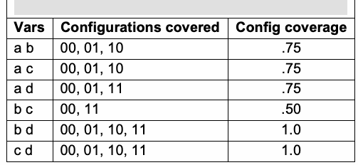
| 変数 | 網羅された構成 | 構成網羅率 |
| a b | 00, 01, 10 | .75 |
| a c | 00, 01, 10 | .75 |
| a d | 00, 01, 11 | .75 |
| b c | 00, 11 | .50 |
| b d | 00, 01, 10, 11 | 1.0 |
| c d | 00, 01, 10, 11 | 1.0 |
•total 2-way coverage = 19/24 = .79167
•total 2-way網羅率 = 19/24 = .79167
未レビュー訳•(.50, 2)-completeness = 6/6 = 1.0
•(.50, 2)-完全性 = 6/6 = 1.0
未レビュー訳•(.75, 2)-completeness = 5/6 = 0.83333 • (1.0, 2)-completeness = 2/6 = 0.33333
•(.75, 2)-完全性 = 5/6 = 0.83333 • (1.0, 2)-完全性 = 2/6 = 0.33333
未レビュー訳Figure 17. The test array covers all possible 2way combinations of a, b, c, and d to different levels. Figure 18 is an example of coverage for a 2873245 set (87 binary, two 3-value, and five 4 value) of input variables (blue=2-way, pink=3-way, yellow=4-way). This particular test set was not a covering array, but pairwise coverage is still quite good, with about 95% of the variables having all possible 2-way configurations covered. Even for 4-way combinations we see that all variables have at least 28% of their configurations covered, and about 25% of them have about 98% or more of 4-way configurations covered. Figure 19 shows a similar plot for a 27931416191 configuration.
原文のみ
原文のみ
原本PDFの抜粋画像
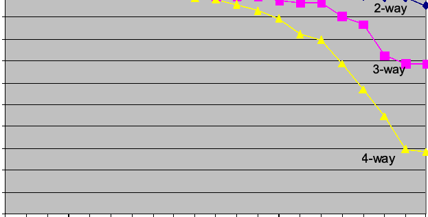
0.9
原文のみ
0.8
原文のみ
原本PDFの抜粋画像
0.7
原文のみ
0.6 0.5 0.4
原文のみ
0.3 0.2
原文のみ
0.1 0 00.05 0.10.15 0.20.25 0.30.35 0.40.45 0.50.55 0.60.65 0.70.75 0.80.85 0.90.95 1 Percent of variable-value configurations
原文のみ
87 2 5
原文のみ
Figure 18. Configuration coverage for 2
原文のみ
3 4
原文のみ
inputs.
原文のみ
原文のみ
原本PDFの抜粋画像
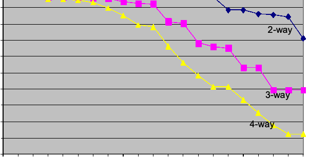
0.9 0.8
原文のみ
0.7 0.6
原文のみ
0.5 0.4 0.3 0.2
原文のみ
0.1 0
原文のみ
Percent of variable-value configurations
原文のみ
79 1 1 1 1
原文のみ
Figure 19. Configuration coverage for 2
原文のみ
3 4 6 9
原文のみ
inputs.
原文のみ
6.3 Cost and Practical Considerations
6.3 コストと実務上の考慮事項
未レビュー訳An important cost advantage introduced by coverage measurement is the ability to use existing test sets, identify particular combinations that may be missing, and supplement existing tests. In some cases, as in the example of Figure 18, it may be discovered that the existing test set is already strong with respect to a particular strength t (in this case 2-way), and tests for t+1 generated. The tradeoff in cost of applying coverage measurement is the need to map existing tests into discrete numerical values that can be analyzed by the coverage measurement tools (see Appendix C). For example, the days of the week in the example of Figure 10 would have to be mapped into 0 - 6 or 1 - 7. Future versions of the coverage measurement tools may include more flexibility in handling parameter values.
網羅率測定によって得られる重要なコスト上の利点は、既存のテスト集合を利用し、不足している可能性がある特定の組合せを特定して、既存のテストを補完できることである。図18の例のように、既存のテスト集合が特定の強度t（この場合は2-way）についてすでに十分強く、t+1のテストを生成できると判明する場合もある。網羅率測定を適用するコストとのトレードオフは、既存テストを網羅率測定ツールで分析可能な離散数値に対応付ける必要がある点である（付録C参照）。たとえば、図10の例の曜日は0～6または1～7に対応付ける必要がある。将来の網羅率測定ツールでは、パラメーター値の扱いがより柔軟になる可能性がある。
未レビュー訳6.4 Chapter Summary
6.4 章のまとめ
未レビュー訳1.1. Many coverage measures have been devised for code coverage, including statement, branch or decision, condition, and modified condition decision coverage. These measures are based on aspects of source code and are not suitable for combinatorial coverage measurement.
1.1. コード網羅率については、文網羅、分岐網羅または判定網羅、条件網羅、改良条件判定網羅など、多くの網羅率尺度が考案されている。これらの尺度はソースコードの側面に基づいており、組合せ網羅率の測定には適さない。
2. Measuring configuration-spanning coverage can be helpful in understanding state space coverage. If we do use combinatorial testing, then configuration-spanning coverage will be 100% for the level of \(t\) that was selected, but we may still want to investigate the coverage our test set provides for \(t+1\) or \(t+2\). Calculating this statistic can help in choosing between t-way covering arrays generated by different algorithms. As seen in the examples above, it may be relatively easy to produce tests that provide a high degree of spanning coverage, even if not 100%. In many cases it may be possible to generate additional tests to boost the coverage of a test set.
2. 構成をまたぐ網羅率を測定することは、状態空間の網羅率を理解するうえで役立つことがある。組合せテストを実際に用いる場合、選択した\(t\)の水準では構成をまたぐ網羅率は100%になるが、それでも、テスト集合が\(t+1\)や\(t+2\)について達成する網羅率を調べたいことがある。この統計量を計算すると、異なるアルゴリズムで生成したt-way被覆配列のどれを選ぶかを決める助けになる。上の例で見たように、100%でなくとも、構成をまたぐ網羅率の高いテストを作成することは比較的容易な場合がある。多くの場合、テスト集合の網羅率を高める追加のテストを生成できる。
7 COMBINATORIAL AND RANDOM TESTING
7 組合せテストとランダムテスト
未レビュー訳For testing to be most efficient and effective, we need an understanding of when a particular test method is most appropriate. That is, what characteristics of a problem lead us to use one form of testing over another, and what are the tradeoffs with respect to cost and effectiveness? Some studies have compared the effectiveness of combinatorial and random approaches to testing, but have reached conflicting results [3, 4, 56, 58]. This chapter presents an analysis [37, 38] of these two methods and discusses how random testing may complement combinatorial methods.
テストを最も効率的かつ効果的に行うには、特定のテスト方法が最も適切となる状況を理解する必要がある。つまり、問題のどのような特性を根拠に一方の試験方式を他方より選ぶのか、またコストと有効性に関するトレードオフは何か。組合せ方式とランダム方式の有効性を比較した研究はいくつかあるが、結論は一致していない [3, 4, 56, 58]。本章では、これら2つの方法を分析し [37, 38]、ランダムテストが組合せ手法をどのように補完できるかを論じる。
未レビュー訳7.1 Coverage of Random Tests
7.1 ランダムテストの網羅率
Because a significant percentage of failures can only be triggered by the interaction of two or more variables, one consideration in comparing random and combinatorial testing is the degree to which random testing covers particular t-way combinations. Table 10 gives the percentage of t-way combinations covered by a randomly generated test set of the same size as a t-way covering array, for various combinations of k = number of variables and v = number of values per variable. Note that the coverage could vary with different realizations of randomly generated test sets. That is, a different random number generator, or even multiple runs of the same generator, may produce slightly different coverage (perhaps a few tests out of thousands, depending on the problem). Figure 20 through Figure 24 summarize the coverage for arrays with variables of 2 to 10 values. As seen in the figures, the coverage provided by a random test suite versus a covering array of the same size varies considerably with different configurations.
かなりの割合の障害は、2つ以上の変数の相互作用によってのみ引き起こされるため、ランダムテストと組合せテストを比較する際の検討事項の1つは、ランダムテストが特定のt-way組合せをどの程度網羅するかである。表10は、k（変数の数）とv（変数あたりの値の数）のさまざまな組合せについて、t-way被覆配列と同じサイズのランダム生成テスト集合が網羅するt-way組合せの割合を示す。ランダム生成テスト集合の実現によって網羅率が異なる場合があることに注意されたい。すなわち、異なる乱数生成器、または同じ生成器を複数回実行した場合でも、網羅率がわずかに異なることがある（問題によっては、数千件中数件程度）。図20から図24は、変数が2～10個の値を持つ配列の網羅率をまとめている。図が示すように、同じサイズの被覆配列と比較したランダムテストスイートの網羅率は、構成によって大きく異なる。
未レビュー訳Now consider the size of a random test set required to provide 100% combination coverage. With the most efficient covering array algorithms, the difficulty of finding tests with high coverage increases as tests are generated. Thus even if a randomly generated test set provides better than 99% of the coverage of an equal sized covering array, it should not be concluded that only a few more tests are needed for the random set to provide 100% coverage. Table 11 gives the sizes of randomly generated test sets required for 100% combinatorial coverage at various configurations, and the ratio of these sizes to covering arrays computed with ACTS. Although there is considerable variation among configurations, note that the ratio of random to combinatorial test set size for 100% coverage exceeds 3 in most cases, with average ratios of 3.9, 3.8, and 3.2 at t = 2, 3, and 4 respectively. Thus, combinatorial testing retains a significant advantage over random testing if the goal is 100% combination coverage for a given value of t.
次に、組合せ網羅率を100%にするために必要なランダムテスト集合のサイズを考える。最も効率的な被覆配列アルゴリズムでは、テストを生成するにつれて高い網羅率のテストを見つけることが難しくなる。したがって、ランダム生成テスト集合が同じサイズの被覆配列より99%を超える網羅率を提供するとしても、ランダム集合で100%網羅するために必要なテストがあとわずかであると結論してはならない。表11は、さまざまな構成で組合せ網羅率を100%にするために必要なランダム生成テスト集合のサイズと、ACTSで計算した被覆配列とのサイズ比を示す。構成によってかなりばらつきがあるが、100%網羅に必要なランダムテスト集合と組合せテスト集合のサイズ比は、ほとんどの場合3を超える。t = 2、3、4での平均比は、それぞれ3.9、3.8、3.2である。したがって、所与のtについて組合せ網羅率100%を目指す場合、組合せテストはランダムテストに対して大きな優位性を保つ。
未レビュー訳| Vars | Values/ Variable | ACTS 2-way tests | Random 2-way coverage | ACTS 3-way tests | Random 3-way coverage | ACTS 4-way tests | Random 4-way coverage |
| 10 | 2 | 10 | 89.28% | 20 | 92.18% | 42 | 92.97% |
| 10 | 4 | 30 | 86.38% | 151 | 89.90% | 657 | 92.89% |
| 10 | 6 | 66 | 84.03% | 532 | 91.82% | 3843 | 94.86% |
| 10 | 8 | 117 | 83.37% | 1214 | 90.93% | 12010 | 94.69% |
| 10 | 10 | 172 | 82.21% | 2367 | 90.71% | 29231 | 94.60% |
| 15 | 2 | 10 | 96.15% | 24 | 97.08% | 58 | 98.36% |
| 15 | 4 | 33 | 89.42% | 179 | 93.75% | 940 | 97.49% |
| 15 | 6 | 77 | 89.03% | 663 | 95.49% | 5243 | 98.26% |
| 15 | 8 | 125 | 85.27% | 1551 | 95.21% | 16554 | 98.25% |
| 15 | 10 | 199 | 86.75% | 3000 | 94.96% | 40233 | 98.21% |
| 20 | 2 | 12 | 97.22% | 27 | 97.08% | 66 | 98.41% |
| 20 | 4 | 37 | 90.07% | 209 | 96.40% | 1126 | 98.79% |
| 20 | 6 | 86 | 91.37% | 757 | 97.07% | 6291 | 99.21% |
| 20 | 8 | 142 | 89.16% | 1785 | 96.92% | 19882 | 99.22% |
| 20 | 10 | 215 | 88.77% | 3463 | 96.85% | 48374 | 99.20% |
| 25 | 2 | 12 | 96.54% | 30 | 98.26% | 74 | 99.18% |
| 25 | 4 | 39 | 91.67% | 233 | 97.49% | 1320 | 99.43% |
| 25 | 6 | 89 | 92.68% | 839 | 97.94% | 7126 | 99.59% |
| 25 | 8 | 148 | 90.46% | 1971 | 97.93% | 22529 | 99.59% |
| 25 | 10 | 229 | 89.80% | 3823 | 97.82% | 54856 | 99.58% |
原本PDFの抜粋画像
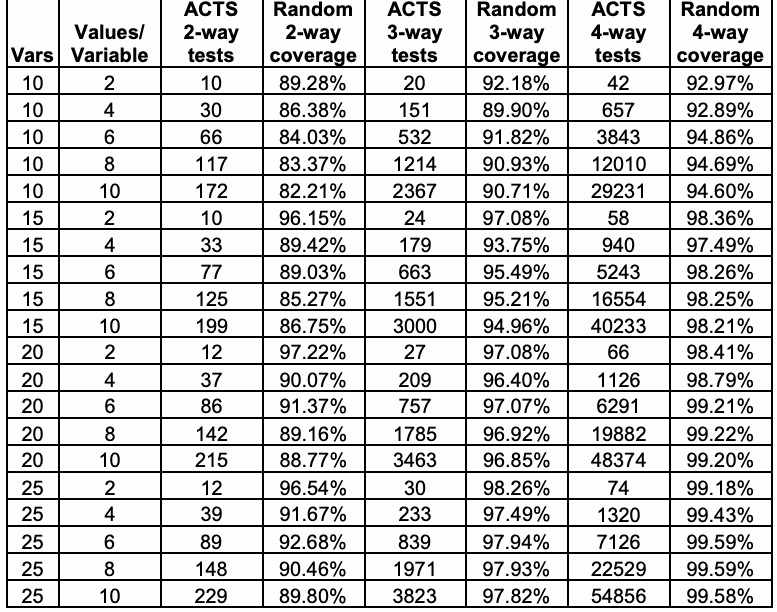
| 変数 | 変数あたりの値 | ACTS 2-wayテスト | ランダム2-way網羅率 | ACTS 3-wayテスト | ランダム3-way網羅率 | ACTS 4-wayテスト | ランダム4-way網羅率 |
| 10 | 2 | 10 | 89.28% | 20 | 92.18% | 42 | 92.97% |
| 10 | 4 | 30 | 86.38% | 151 | 89.90% | 657 | 92.89% |
| 10 | 6 | 66 | 84.03% | 532 | 91.82% | 3843 | 94.86% |
| 10 | 8 | 117 | 83.37% | 1214 | 90.93% | 12010 | 94.69% |
| 10 | 10 | 172 | 82.21% | 2367 | 90.71% | 29231 | 94.60% |
| 15 | 2 | 10 | 96.15% | 24 | 97.08% | 58 | 98.36% |
| 15 | 4 | 33 | 89.42% | 179 | 93.75% | 940 | 97.49% |
| 15 | 6 | 77 | 89.03% | 663 | 95.49% | 5243 | 98.26% |
| 15 | 8 | 125 | 85.27% | 1551 | 95.21% | 16554 | 98.25% |
| 15 | 10 | 199 | 86.75% | 3000 | 94.96% | 40233 | 98.21% |
| 20 | 2 | 12 | 97.22% | 27 | 97.08% | 66 | 98.41% |
| 20 | 4 | 37 | 90.07% | 209 | 96.40% | 1126 | 98.79% |
| 20 | 6 | 86 | 91.37% | 757 | 97.07% | 6291 | 99.21% |
| 20 | 8 | 142 | 89.16% | 1785 | 96.92% | 19882 | 99.22% |
| 20 | 10 | 215 | 88.77% | 3463 | 96.85% | 48374 | 99.20% |
| 25 | 2 | 12 | 96.54% | 30 | 98.26% | 74 | 99.18% |
| 25 | 4 | 39 | 91.67% | 233 | 97.49% | 1320 | 99.43% |
| 25 | 6 | 89 | 92.68% | 839 | 97.94% | 7126 | 99.59% |
| 25 | 8 | 148 | 90.46% | 1971 | 97.93% | 22529 | 99.59% |
| 25 | 10 | 229 | 89.80% | 3823 | 97.82% | 54856 | 99.58% |
t
未レビュー訳Table 10. Percent of
表10. 無作為に生成した同数の
未レビュー訳way combinations covered by equal number of random
way組合せの網羅率
未レビュー訳tests
テスト
未レビュー訳| Vars | Valu es | 2-way Tests | 3-way Tests | 4-way Tests |
| ACTS Tests | Random Tests / Ratio | ACTS Tests / Random Tests / Ratio | ACTS Tests / Random Tests / Ratio | |
| 10 | 2 / 10 | 18 / 1.80 | 20 / 61 / 3.05 | 42 / 150 / 3.57 |
| 10 | 4 / 30 | 145 / 4.83 | 151 / 914 / 6.05 | 657 / 2256 / 3.43 |
| 10 | 6 / 66 | 383 / 5.80 | 532 / 1984 / 3.73 | 3843 / 13356 / 3.48 |
| 10 | 8 / 117 | 499 / 4.26 | 1214 / 5419 / 4.46 | 12010 / 52744 / 4.39 |
| 10 | 10 / 172 | 808 / 4.70 | 2367 / 11690 / 4.94 | 29231 / 137590 / 4.71 |
| 15 | 2 / 10 | 20 / 2.00 | 24 / 52 / 2.17 | 58 / 130 / 2.24 |
| 15 | 4 / 33 | 121 / 3.67 | 179 / 672 / 3.75 | 940 / 2568 / 2.73 |
| 15 | 6 / 77 | 294 / 3.82 | 663 / 2515 / 3.79 | 5243 / 17070 / 3.26 |
| 15 | 8 / 125 | 551 / 4.41 | 1551 / 6770 / 4.36 | 16554 / 60568 / 3.66 |
| 15 | 10 / 199 | 940 / 4.72 | 3000 / 15234 / 5.08 | 40233 / 159870 / 3.97 |
| 20 | 2 / 12 | 23 / 1.92 | 27 / 70 / 2.59 | 66 / 140 / 2.12 |
| 20 | 4 / 37 | 140 / 3.78 | 209 / 623 / 2.98 | 1126 / 3768 / 3.35 |
| 20 | 6 / 86 | 288 / 3.35 | 757 / 2563 / 3.39 | 6291 / 18798 / 2.99 |
| 20 | 8 / 142 | 630 / 4.44 | 1785 / 8450 / 4.73 | 19882 / 59592 / 3.00 |
| 20 | 10 / 215 | 1028 / 4.78 | 3463 / 14001 / 4.04 | 48374 / 157390 / 3.25 |
| 25 | 2 / 12 | 34 / 2.83 | 30 / 70 / 2.33 | 74 / 174 / 2.35 |
| 25 | 4 / 39 | 120 / 3.08 | 233 / 790 / 3.39 | 1320 / 3520 / 2.67 |
| 25 | 6 / 89 | 327 / 3.67 | 839 / 2890 / 3.44 | 7126 / 19632 / 2.75 |
| 25 | 8 / 148 | 845 / 5.71 | 1971 / 7402 / 3.76 | 22529 / 61184 / 2.72 |
| 25 | 10 / 229 | 1031 / 4.50 | 3823 / 16512 / 4.32 | 54856 / 191910 / 3.50 |
| Ratio Average: | 3.90 | 3.82 | 3.21 |
原本PDFの抜粋画像
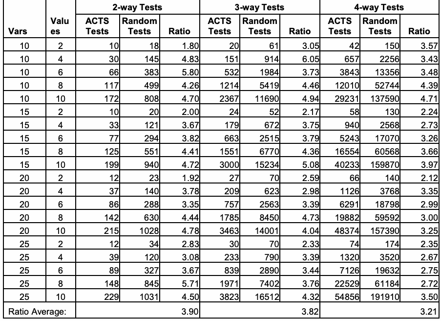
| 変数 | 値 | 2-wayテスト | 3-wayテスト | 4-wayテスト |
| ACTSテスト | ランダムテスト / 比率 | ACTSテスト / ランダムテスト / 比率 | ACTSテスト / ランダムテスト / 比率 | |
| 10 | 2 / 10 | 18 / 1.80 | 20 / 61 / 3.05 | 42 / 150 / 3.57 |
| 10 | 4 / 30 | 145 / 4.83 | 151 / 914 / 6.05 | 657 / 2256 / 3.43 |
| 10 | 6 / 66 | 383 / 5.80 | 532 / 1984 / 3.73 | 3843 / 13356 / 3.48 |
| 10 | 8 / 117 | 499 / 4.26 | 1214 / 5419 / 4.46 | 12010 / 52744 / 4.39 |
| 10 | 10 / 172 | 808 / 4.70 | 2367 / 11690 / 4.94 | 29231 / 137590 / 4.71 |
| 15 | 2 / 10 | 20 / 2.00 | 24 / 52 / 2.17 | 58 / 130 / 2.24 |
| 15 | 4 / 33 | 121 / 3.67 | 179 / 672 / 3.75 | 940 / 2568 / 2.73 |
| 15 | 6 / 77 | 294 / 3.82 | 663 / 2515 / 3.79 | 5243 / 17070 / 3.26 |
| 15 | 8 / 125 | 551 / 4.41 | 1551 / 6770 / 4.36 | 16554 / 60568 / 3.66 |
| 15 | 10 / 199 | 940 / 4.72 | 3000 / 15234 / 5.08 | 40233 / 159870 / 3.97 |
| 20 | 2 / 12 | 23 / 1.92 | 27 / 70 / 2.59 | 66 / 140 / 2.12 |
| 20 | 4 / 37 | 140 / 3.78 | 209 / 623 / 2.98 | 1126 / 3768 / 3.35 |
| 20 | 6 / 86 | 288 / 3.35 | 757 / 2563 / 3.39 | 6291 / 18798 / 2.99 |
| 20 | 8 / 142 | 630 / 4.44 | 1785 / 8450 / 4.73 | 19882 / 59592 / 3.00 |
| 20 | 10 / 215 | 1028 / 4.78 | 3463 / 14001 / 4.04 | 48374 / 157390 / 3.25 |
| 25 | 2 / 12 | 34 / 2.83 | 30 / 70 / 2.33 | 74 / 174 / 2.35 |
| 25 | 4 / 39 | 120 / 3.08 | 233 / 790 / 3.39 | 1320 / 3520 / 2.67 |
| 25 | 6 / 89 | 327 / 3.67 | 839 / 2890 / 3.44 | 7126 / 19632 / 2.75 |
| 25 | 8 / 148 | 845 / 5.71 | 1971 / 7402 / 3.76 | 22529 / 61184 / 2.72 |
| 25 | 10 / 229 | 1031 / 4.50 | 3823 / 16512 / 4.32 | 54856 / 191910 / 3.50 |
| 平均比: | 3.90 | 3.82 | 3.21 |
t
未レビュー訳Table 11. Size of random test set required for 100%
表11. 100%の網羅率に必要なランダムテスト集合のサイズ
未レビュー訳way combination
way組合せ
未レビュー訳coverage.
網羅率。
未レビュー訳| Values per variable | Ratio, 2-way | Ratio, 3-way | Ratio, 4-way |
| 2 | 2.14 | 2.54 | 2.57 |
| 4 | 3.84 | 4.04 | 3.04 |
| 6 | 4.16 | 3.59 | 3.12 |
| 8 | 4.70 | 4.33 | 3.44 |
| 10 | 4.68 | 4.59 | 3.86 |
原本PDFの抜粋画像
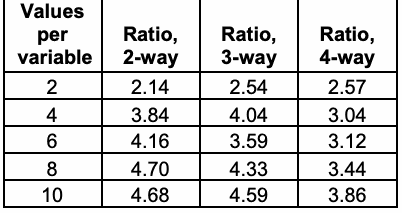
| 変数あたりの値 | 比率、2-way | 比率、3-way | 比率、4-way |
| 2 | 2.14 | 2.54 | 2.57 |
| 4 | 3.84 | 4.04 | 3.04 |
| 6 | 4.16 | 3.59 | 3.12 |
| 8 | 4.70 | 4.33 | 3.44 |
| 10 | 4.68 | 4.59 | 3.86 |
7.2 Comparing Random and Combinatorial Coverage
7.2 ランダム網羅率と組合せ網羅率の比較
The comparisons between random and combinatorial testing suggest a number of conclusions:
ランダムテストと組合せテストの比較から、次のような結論が得られる:
•For binary variables (v=2), random tests compare reasonably well with covering arrays (96% to 99% coverage) for all three values (2, 3, and 4) of t for 15 or more variables. Thus random testing for a SUT with all or mostly binary variables may compare favorably with combinatorial testing.
•二値変数（v=2）では、変数数が15以上の場合、tの3つの値（2、3、4）のすべてについて、ランダムテストは被覆配列とかなりよく比較できる（網羅率96%～99%）。したがって、すべてまたは大半が二値変数であるSUTに対するランダムテストは、組合せテストと比べて遜色ない場合がある。
未レビュー訳•Combination coverage provided by random generation of the equivalent number of pairwise tests at (t = 2) decreases as the number of values per variable increases, and the coverage provided by pairwise testing is significantly less than 100%. The effectiveness of random testing relative to pairwise testing should be expected to decline as the average number of values per variable increases.
•t = 2のペアワイズテストと同数のテストをランダム生成した場合に得られる組合せ網羅率は、変数あたりの値の数が増えるにつれて低下し、ペアワイズテストによる網羅率は100%を大きく下回る。変数あたりの平均値数が増えるほど、ペアワイズテストに対するランダムテストの有効性は低下すると考えられる。
未レビュー訳•For 4-way interactions, coverage provided by random test generation increases with the number of variables. Combinatorial testing for a module with approximately 10 variables should be significantly more effective than random testing, while the difference between the two test methods should be less for modules with 20 or more variables.
•4-way相互作用では、ランダムテスト生成による網羅率は変数数の増加とともに上昇する。約10変数のモジュールでは組合せテストがランダムテストより大幅に有効である一方、20以上の変数を持つモジュールでは、2つのテスト方法の差は小さくなるはずである。
•For 100% combination coverage, the efficiency advantage of combinatorial testing varies directly with the number of values per variable and inversely with the interaction strength t. Figure 25 illustrates how these factors (interaction strength t and values per variable v) combine: the ratio of random/combinatorial coverage is highest for 10 variables with t = 2, but declines for other pairings of t and v. To obtain 100% combination coverage, random testing is significantly less efficient than combinatorial testing, requiring 2 to nearly 5 times as many tests as a covering array generated by ACTS. Thus if 100% combination coverage is desired, combinatorial testing should be significantly less expensive than random test generation.
•組合せ網羅率100%を達成する場合、組合せテストの効率上の優位性は、変数あたりの値の数に比例し、相互作用強度tに反比例して変化する。図25はこれらの要因（相互作用強度tおよび変数あたりの値v）の組合せを示す。ランダム/組合せ網羅率の比は、変数10個、t = 2で最大となるが、tとvの他の組合せでは低下する。組合せ網羅率を100%にするには、ランダムテストは組合せテストより大幅に効率が低く、ACTSが生成する被覆配列の2倍からほぼ5倍のテストが必要となる。したがって、組合せ網羅率100%が望まれる場合、組合せテストの方がランダムテスト生成より大幅に低コストである。
未レビュー訳An important practical consideration in comparing combinatorial with random testing is the efficiency of the covering array generator. Algorithms have a very wide range in the size of covering arrays they produce. It is not uncommon for the better algorithms to produce arrays that are 50% smaller than other algorithms. We have found in comparisons with other tools that there is no uniformly “best” algorithm. Other algorithms may produce smaller or larger combinatorial test suites, so the comparable random test suite will vary in the number of combinations covered. Thus random testing may fare better in comparison with combinatorial tests produced by one of the less efficient algorithms.
組合せテストとランダムテストを比較する際の重要な実務上の考慮事項は、被覆配列生成器の効率である。アルゴリズムによって、生成される被覆配列のサイズには非常に大きな幅がある。優れたアルゴリズムが他のアルゴリズムより50%小さい配列を生成することは珍しくない。他のツールとの比較では、常に「最良」となるアルゴリズムはないことが分かった。他のアルゴリズムでは、より小さい、または大きい組合せテストスイートが生成されるため、対応するランダムテストスイートが網羅する組合せ数も変わる。したがって、効率の低いアルゴリズムが生成した組合せテストと比べる場合、ランダムテストの方が良好に見えることがある。
未レビュー訳However there is a less obvious but important tradeoff regarding covering array size. An algorithm that produces a very compact array, i.e., with few tests, for t-way combinations may include fewer (t+1)-way combinations because there are fewer tests. Table 13 and Table 14 illustrate this phenomenon for an example. Table 9 shows the percentage of t+1 up to t+3 combination coverage provided by the ACTS tests and in Table 10 the equivalent number of random tests. Although ACTS pairwise tests
ただし、被覆配列のサイズに関して、目立ちにくいが重要なトレードオフがある。t-way組合せに対して非常にコンパクト、すなわちテスト数の少ない配列を生成するアルゴリズムは、テスト数が少ないため、含まれる(t+1)-way組合せが少ない可能性がある。表13と表14は例を用いてこの現象を示す。表9はACTSテストが提供するt+1からt+3までの組合せ網羅率を、表10は同数のランダムテストについて示す。ACTSのペアワイズテストは
未レビュー訳A less optimal (by
原文のみ
provide better 3-way coverage than the random tests, at other
原文のみ
size) array may
原文のみ
interaction strengths and values of t, the random tests are roughly the same or slightly better in combination coverage provide better than ACTS. Recall from Section 7.1 that pairwise failure detection combinatorial tests detected slightly fewer events than the because it equivalent number of random tests. One possible explanation
原文のみ
includes more
原文のみ
may be that the superior 4-way and 5-way coverage of the
原文のみ
interactions at
原文のみ
random tests allowed detection of more events. Almost
原文のみ
t+1, t+2, etc.
原文のみ
paradoxically, an algorithm that produces a larger, sub-optimal covering array may provide better failure detection because the larger array is statistically more likely to include t+1, t+2, and higher degree interaction tests as a byproduct of the test generation. Again, however, the less optimal covering array is likely to more closely resemble the random test suite in failure detection.
原文のみ
Note also that the number of failures in the SUT can affect the degree to which random testing approaches combinatorial testing effectiveness. For example, suppose the random test set covers 99% of combinations for 4-way interactions, and the SUT contains only one 4-way interaction failure. Then there is a 99% probability that the random tests will contain the 4-way interaction that triggers this failure. However, if the SUT contains m independent failures, then the probability that combinations for all m failures are included in the random test set is .99m. Hence with multiple failures, random testing may be significantly less effective, as its probability of detecting all failures will be cm, for c = percent coverage and m = number of failures.
SUT内の障害数も、ランダムテストが組合せテストの有効性にどの程度近づくかに影響することに注意されたい。たとえば、ランダムテスト集合が4-way相互作用の組合せを99%網羅し、SUTに4-way相互作用障害が1つしかないとする。この場合、その障害を引き起こす4-way相互作用がランダムテストに含まれる確率は99%である。しかし、SUTにm個の独立した障害がある場合、m個すべての障害に関わる組合せがランダムテスト集合に含まれる確率は.99^mである。したがって、複数の障害がある場合、すべての障害を検出する確率はc^m（c = 網羅率、m = 障害数）となり、ランダムテストの有効性は大幅に低下する可能性がある。
未レビュー訳| t | 3-way coverage | 4-way coverage | 5-way coverage |
| 2 | .758 | .429 | .217 |
| 3 | .924 | .709 | |
| 4 | .974 |
原本PDFの抜粋画像
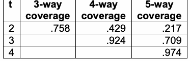
| t | 3-way網羅率 | 4-way網羅率 | 5-way網羅率 |
| 2 | .758 | .429 | .217 |
| 3 | .924 | .709 | |
| 4 | .974 |
Table 13. Higher interaction coverage of tway tests
表13. t-wayテストの高次相互作用網羅率
未レビュー訳| t | 3-way coverage | 4-way coverage | 5-way coverage |
| 2 | .735 | .499 | .306 |
| 3 | .917 | .767 | |
| 4 | .974 |
原本PDFの抜粋画像
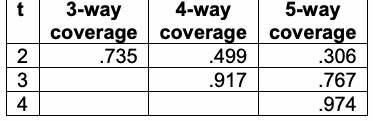
| t | 3-way網羅率 | 4-way網羅率 | 5-way網羅率 |
| 2 | .735 | .499 | .306 |
| 3 | .917 | .767 | |
| 4 | .974 |
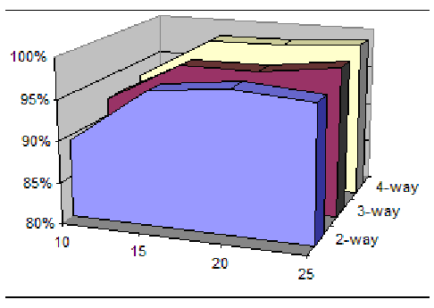
原文のみ
Figure 20. Percent coverage of
原文のみ
way combinations for v=2.
原文のみ
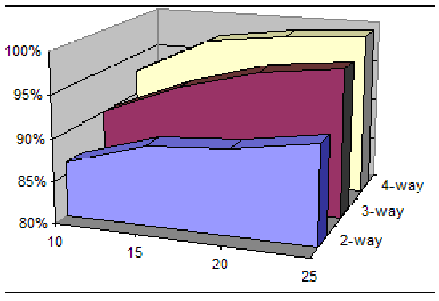
原文のみ
Figure 21. Percent coverage of
原文のみ
way combinations for v=4.
原文のみ
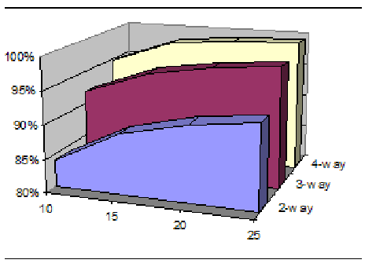
原文のみ
Figure 22. Percent coverage of
原文のみ
way combinations for v=6.
原文のみ
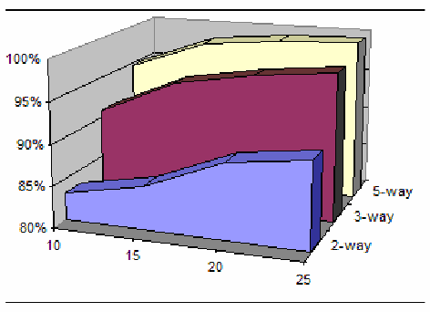
原文のみ
Figure 23. Percent coverage of
原文のみ
way combinations for v=8.
原文のみ
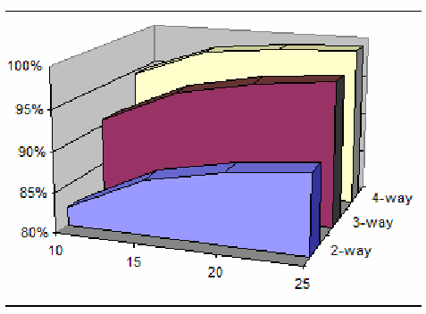
原文のみ
Figure 24. Percent coverage of
原文のみ
way combinations for v=10
原文のみ
4.50-5.00 4.00-4.50
原文のみ
5.00
原文のみ
3.50-4.00
原文のみ
4.50
原文のみ
3.00-3.50
原文のみ
4.00
原文のみ
2.50-3.00 2.00-2.50 3.50 1.50-2.00 3.00 1.00-1.50Ratio 2.50 0.50-1.00 2.00 0.00-0.50 1.50
原文のみ
nval=10
原文のみ
1.00 0.50
原文のみ
nval=6
原文のみ
Valuesper variable
原文のみ
0.00 2way
原文のみ
nval=2
原文のみ
3way
原文のみ
4way
原文のみ
Interactions
原文のみ
Figure 25. Average ratio of random/ACTS for covering arrays by values per variable
原文のみ
7.3 Cost and Practical Considerations
7.3 コストと実務上の考慮事項
The relationship between covering arrays and randomly generated tests presents some interesting issues. Generating covering arrays for combinatorial tests is complex; it has been shown to be an NP-hard problem. But generating tests randomly is trivial. Thus for large problems, we can compare the cost and time of generating a covering array versus producing tests randomly, measuring their coverage (Chapter 6), then adding tests as needed to provide full combinatorial coverage. Notice the last column of Table 10. For 4 way tests, once the number of parameters exceeds roughly 20, random generation will cover 99% or more of 4-way combinations. If a problem requires tests for 100 parameters, for example, covering array generators may require hours or days, or may simply be unable to handle that many parameters, but random tests could be generated quickly and easily. This is an option that may be cost effective even for smaller problems, and should be kept in mind for test planning.
被覆配列とランダム生成テストの関係には、興味深い論点がある。組合せテスト用の被覆配列の生成は複雑であり、NP困難な問題であることが示されている。一方、ランダムなテスト生成は容易である。したがって大規模な問題では、被覆配列を生成するコストと時間をランダムにテストを生成するコストと時間と比較し、網羅率を測定し（第6章）、完全な組合せ網羅率を得るため必要に応じてテストを追加できる。表10の最後の列に注目されたい。4-wayテストでは、パラメーター数がおよそ20を超えると、ランダム生成により4-way組合せの99%以上が網羅される。たとえば100個のパラメーターを要する問題では、被覆配列生成器が数時間または数日かかる、あるいはその数のパラメーターを扱えない場合もあるが、ランダムテストなら迅速かつ容易に生成できる。これは小規模な問題でも費用対効果の高い選択肢となる可能性があり、テスト計画で考慮すべきである。
未レビュー訳7.4 Chapter Summary
7.4 本章の要約
1. Existing research has shown either no difference (for some problems) or higher failure detection effectiveness (for most problems) for combinatorial testing. Analyzing random test sets suggests a number of reasons for this result. In particular, a highly optimized t-way covering array may include fewer \(t+1\), \(t+2\), and higher degree interaction tests than an equivalent sized random test set. Similarly, a covering array algorithm that produces a larger, sub-optimal array may provide better failure detection because the larger array is statistically more likely to include \(t+1\), \(t+2\), and higher degree interaction tests as a byproduct of the test generation.
1. 既存の研究は、組合せテストについて、（一部の問題では）差がないこと、または（大半の問題では）障害検出の有効性がより高いことを示している。ランダムテスト集合を分析すると、この結果の理由がいくつか示唆される。特に、高度に最適化されたt-way被覆配列は、同等の大きさのランダムテスト集合に比べて、\(t+1\)、\(t+2\)、およびそれより高い次数の相互作用のテストを少ししか含まないことがある。同様に、より大きく最適でない配列を生成する被覆配列アルゴリズムの方が、障害検出に優れることがある。配列が大きいほど、テスト生成の副産物として\(t+1\)、\(t+2\)、およびそれより高い次数の相互作用のテストを含む可能性が統計的に高くなるからである。
2. While the analysis reported here does not indicate that combinatorial testing is uniformly better than random, it does support a preference for combinatorial methods if the cost of applying the two test approaches is the same. This preference may be particularly relevant if the SUT is likely to contain multiple failures (as is usually the case). Single failures that depend on the interaction of two or more variables have a high likelihood of being detected by random tests, because the random test set may cover a high percentage of all \(t\)-way combinations. But the probability of detecting multiple failures declines rapidly as \(c^m\), for \(c =\) percent coverage and \(m =\) number of independent failures.
2. ここで報告した分析は、組合せテストがランダムテストより一様に優れていることを示すものではないが、二つのテスト手法を適用するコストが同じであれば、組合せ手法を選ぶことを支持する。この選好は、SUTが複数の障害を含む可能性が高い場合（通常はそうである）に、特に意味を持つことがある。二つ以上の変数の相互作用に依存する単一の障害は、ランダムテストで検出される可能性が高い。ランダムテスト集合が、すべての\(t\)-way組合せのうち高い割合を網羅することがあるからである。しかし、複数の障害を検出する確率は\(c^m\)に従って急速に低下する。ここで、\(c =\) 網羅率（パーセント）、\(m =\) 独立した障害の数である。
8 ASSERTION-BASED TEST ORACLES
8 アサーションに基づくテストオラクル
未レビュー訳Many programming languages include an assert feature that allows the programmer to specify properties that are assumed true at a particular point in the program. For example, a function that includes a division in which a particular parameter \(\mathrm{x}\) will be used as a divisor may require that this parameter may never be zero. This function may include the C statement assert(x != 0); as the first statement executed. Note that the assertion is not the same as an input validity check that issues an error message if input is not acceptable. The assertion gives conditions that must hold for the function to operate properly, in this case a non-zero divisor. It is the responsibility of the programmer to ensure that a zero divisor is never passed to the function. The distinction between assertions and input validation code is that assertions are intended to catch programming mistakes, while input validation detects errors in user or file/database input.
多くのプログラミング言語にはassert機能があり、プログラマーはプログラム内の特定の時点で真と仮定される性質を指定できる。たとえば、特定のパラメーター\(\mathrm{x}\)を除数として使う除算を含む関数では、このパラメーターが決してゼロにならないことが要求される場合がある。この関数には、最初に実行される文としてCの文assert(x != 0);を含めることができる。このアサーションは、入力が許容できない場合にエラーメッセージを出す入力妥当性検査と同じではない点に注意されたい。アサーションは、関数が正しく動作するために成り立たなければならない条件、この場合はゼロでない除数を示す。ゼロの除数が決して関数に渡されないようにするのはプログラマーの責任である。アサーションと入力検証コードの違いは、アサーションがプログラミング上の誤りを捕捉するためのものであるのに対し、入力検証はユーザー入力またはファイル/データベース入力の誤りを検出する点にある。
With a sufficient number of assertions derived from a
原文のみ
With self-checking
原文のみ
specification, the program can have a self-checking property
原文のみ
through assertions,
原文のみ
[27, 60, 47]. The assertions can serve as a sort of embedded proof of important properties, such that if the assertions hold thousands of tests for all executions of the program, then the properties can often be run at encoded in the assertions are guaranteed to hold. Then, if the very low cost, assertions form a chain of logic that implies a formal
原文のみ
allowing high-
原文のみ
statement of program properties, the program’s correctness
原文のみ
strength interaction
原文のみ
with respect to these properties can be proven. We can take
原文のみ
coverage.
原文のみ
advantage of this scheme in combinatorial testing by demonstrating that the assertions hold for all t-way combinations of inputs. While this is not the same as a correctness proof, it is an effective way of integrating formal methods for correctness with program testing, and an extensive body of research has developed this idea for practical use (for a survey, see [4]). Some modern programming languages, such as Eiffel [52], include extensive support for including assertions that encode program properties, and tools such as the Java Modeling Language [42] have been designed to integrate assertions with testing. In many cases, using assertions to self-check important properties makes it practical to run thousands of tests in a fully automated fashion, so high-strength interactions of 4-way and above can be done in reasonable time.
原文のみ
8.1 Basic Assertions for Testing
8.1 テストのための基本アサーション
To clarify this somewhat abstract discussion, we will analyze requirements for a small function that handles withdrawal processing for an automated teller machine (ATM). Graphical user interface code for the ATM will not be displayed, as this would vary considerably for different systems. The decision not to include GUI code in this example also illustrates a practical limitation of this type of testing: there are many potential sources of error in a software project, and testing may not deal with all of them at the same time. The GUI code may be analyzed separately, or a more complex verification with assertions may specify properties of the GUI calls, but in the end some human involvement is needed to ensure that the screen information is properly displayed. However, we can do very thorough testing of the most critical aspects of the withdrawal module.
このやや抽象的な説明を明確にするため、自動現金預け払い機（ATM）の出金処理を行う小さな関数の要件を分析する。ATMのグラフィカルユーザーインターフェース（GUI）コードは、システムによって大きく異なるため示さない。この例にGUIコードを含めない判断は、この種の試験に実務上の限界があることも示している。ソフトウェアプロジェクトには多くの潜在的なエラー源があり、試験ですべてを同時に扱えるとは限らない。GUIコードは別個に分析するか、GUI呼び出しの性質をアサーションで指定するより複雑な検証を行うことができるが、最終的には画面情報が適切に表示されることを確認するため、人による関与が必要である。ただし、出金モジュールの最も重要な側面については非常に徹底した試験が可能である。
未レビュー訳Requirements for the module are as follows:
このモジュールの要件は次のとおりである:
1.Some accounts have a minimum balance requirement, indicated by boolean variable minflag.
1.一部の口座には最低残高要件があり、ブール変数minflagで示す。
未レビュー訳2.The bank allows all customers a basic overdraft protection amount, but for a fee, customers may purchase overdraft protection that exceeds the default.
2.銀行はすべての顧客に基本的な当座貸越保護額を認めるが、手数料を支払えば、顧客は既定値を超える当座貸越保護を購入できる。
3.If the account has a minimum balance, the withdrawal cannot reduce account balance below (minimum balance – overdraft default) unless overdraft protection is set for this account and the allowed overdraft amount for this account exceeds the default, in which case the balance cannot be reduced below (minimum balance – overdraft amount).
3.口座に最低残高が設定されている場合、その口座に当座貸越保護が設定され、かつ許可当座貸越額が既定値を超えているときを除き、出金によって口座残高を（最低残高－既定当座貸越額）未満にしてはならない。その場合、残高を（最低残高－当座貸越額）未満にしてはならない。
未レビュー訳4.No withdrawals may exceed the default limit (to keep the ATM from running out of cash), although some customers may have a withdrawal limit below this amount, such as minors who have an account with limits placed by parents.
4.ATMの現金切れを防ぐため、出金額は既定上限を超えてはならない。ただし、親が口座に制限を設けている未成年者など、一部の顧客にはこの額より低い出金限度額が設定される場合がある。
5.The overdraft privilege can be used only once until the balance is made positive again.
5.当座貸越特典は、残高が再び正になるまで一度だけ使用できる。
6.Cards flagged as stolen are to be captured and logged in the hot card file. No withdrawal is allowed for a card flagged as stolen.
6.盗難フラグが付いたカードは回収し、ホットカードファイルに記録する。盗難フラグが付いたカードでは出金を認めない。
The module has these inputs from the user after the user is authorized by another module:
ユーザーが別のモジュールによって認証された後、このモジュールはユーザーから次の入力を受け取る:
未レビュー訳string num: the user card number int amt: withdrawal amount requested
string num: ユーザーカード番号 int amt: 要求された出金額
未レビュー訳and these inputs from the system:
システムからは次の入力を受け取る:
未レビュー訳int balance: user account balance boolean minflag: account has minimum balance requirement int min: account minimum balance boolean odflag: account has overdraft protection int odamt: overdraft protection amount, int oddefault: overdraft default boolean hot: card flagged as stolen boolean limflag: withdrawal limit less than default int limit: withdrawal limit for this account int limdefault: withdrawal limit default
int balance: ユーザー口座残高 boolean minflag: 口座に最低残高要件があるか int min: 口座の最低残高 boolean odflag: 当座貸越保護が設定されているか int odamt: 当座貸越保護額 int oddefault: 既定当座貸越額 boolean hot: カードに盗難フラグが付いているか boolean limflag: 出金限度額が既定値より低いか int limit: この口座の出金限度額 int limdefault: 既定出金限度額
未レビュー訳How should these requirements be translated into assertions and used in testing? Consider requirement 1: if minflag is set, then the balance before and after the withdrawal must be no less than the minimum balance amount. This could be translated directly into logic for assertions: minflag => balance >= min. If the assertion facility does not include logical implication, then the equivalent expression can be used, for example, in C syntax: !minflag || balance >= min.
これらの要件をどのようにアサーションに変換し、試験で使用すべきか。要件1を考える。minflagが設定されている場合、出金前後の残高は最低残高以上でなければならない。これはアサーション用の論理式に直接変換できる: minflag => balance >= min。アサーション機能が論理含意をサポートしない場合は、同値の式を使用できる。たとえばC構文では、!minflag || balance >= min。
未レビュー訳However, we must also consider overdraft protection and withdrawal limits, so the assertion above is not adequate. Collecting conditions, we can develop assertions for each of the eight possible settings of minflag, odflag, and limflag. If there is a minimum balance requirement, no overdraft protection, and a withdrawal limit below the default, what is the relationship between balance and the other parameters?
ただし、当座貸越保護と出金限度額も考慮しなければならないため、上記のアサーションでは不十分である。条件をまとめると、minflag、odflag、limflagの8通りの設定それぞれについてアサーションを作成できる。最低残高要件があり、当座貸越保護はなく、出金限度額が既定値より低い場合、残高と他のパラメーターの関係はどうなるか。
未レビュー訳minflag && !odflag && limflag
minflag && !odflag && limflag
未レビュー訳=> balance >= min – oddefault && amt <= limit
=> balance >= min – oddefault && amt <= limit
未レビュー訳This relation must hold after the withdrawal, so to develop an assertion that must hold immediately before the withdrawal, substitute (balance – amt) for balance in the expression above:
この関係は出金後に成立しなければならない。したがって出金直前に成立すべきアサーションを作るには、上の式のbalanceを(balance – amt)で置き換える:
未レビュー訳balance0 – amt >= min – oddefault && amt <= limit
balance0 – amt >= min – oddefault && amt <= limit
未レビュー訳Assertions such as this would be placed immediately before the balance is modified, not at the beginning of the code for the withdrawal function. Code prior to the subtraction from balance should have ensured that properties encoded by assertions hold immediately before the subtraction, thus any violation of the assertions indicates an error in the code (or possibly in the assertions!) that must be investigated. This is illustrated in Figure 26, where “wdl_init.c” and “wdl_final.c” are files containing assertions such as developed above.
このようなアサーションは残高を変更する直前に配置し、出金関数のコード冒頭には置かない。残高から差し引く前のコードによって、アサーションが表す性質が差し引き直前に成立するよう保証されているべきである。したがって、アサーション違反はコード（またはアサーション自体）のエラーを示し、調査が必要となる。図26に示すように、上記のようなアサーションを含むファイルが「wdl_init.c」と「wdl_final.c」である。
未レビュー訳Including the card number, there are 11 parameters for this module. We need to partition the inputs to determine what values to use in generating a covering array. Partitions should cover valid and invalid values, minimum and maximum for ranges, and values at and on either side of boundaries. The bank uses a check digit scheme for card numbers to detect errors such as digit transposition when numbers are entered manually. A simple partition could be as follows:
カード番号を含め、このモジュールには11個のパラメーターがある。被覆配列の生成に使う値を決めるため、入力を分割する必要がある。分割は、有効値と無効値、範囲の最小値と最大値、境界上の値および境界の両側の値を網羅すべきである。銀行は、番号を手入力する際の数字の転置などの誤りを検出するため、カード番号にチェックディジット方式を使用している。単純な分割は次のようになる:
未レビュー訳string acct: {valid, invalid} int amt: {0, divisible by 20, not divisible by 20, max} int balance: {0, negative, positive, max int} int minflag: {T, F} int min: {0, negative, positive, max int} boolean odflag: {T, F} int odamt: {0, negative, positive, max int} int oddefault: {0, negative, positive, max int} boolean hot: {T, F} int acctlim: {0, negative, positive, max int} int lim: {0, negative, positive, max int}
string acct: {有効, 無効} int amt: {0, 20で割り切れる, 20で割り切れない, 最大値} int balance: {0, 負, 正, 最大整数} int minflag: {T, F} int min: {0, 負, 正, 最大整数} boolean odflag: {T, F} int odamt: {0, 負, 正, 最大整数} int oddefault: {0, 負, 正, 最大整数} boolean hot: {T, F} int acctlim: {0, 負, 正, 最大整数} int lim: {0, 負, 正, 最大整数}
未レビュー訳Using the equivalence classes above, this is thus a 2447 system, or 262,144 possible inputs. If values on either side of boundaries are used, the number of possible input combinations will be much larger, but using combinatorial methods we can cover 3-way or 4-way combinations with only a few hundred tests.
上記の同値クラスを使うと、これは2447システム、すなわち262,144通りの入力となる。境界の両側の値も使えば、可能な入力組合せの数は大幅に増えるが、組合せ手法を使えば、数百件のテストだけで3-wayまたは4-way組合せを網羅できる。
未レビュー訳1.while (!valid(acct)) {/* get account number input */} 2.if (amt > lim ) { return ERROR; } 3.else {
1.while (!valid(acct)) {/* 口座番号入力を取得 */} 2.if (amt > lim ) { return ERROR; } 3.else {
未レビュー訳4.if (odflag ) { 5. if (amt > balance + odamt ) 6. { return ERROR; }
4.if (odflag ) { 5. if (amt > balance + odamt ) 6. { return ERROR; }
未レビュー訳7.} 8.else {
7.} 8.else {
未レビュー訳9.if (amt > balance + oddefault )
9.if (amt > balance + oddefault )
未レビュー訳10.{return ERROR; }
10.{return ERROR; }
未レビュー訳11.else { 12. if (amt > lim ) 13. { return ERROR; }
11.else { 12. if (amt > lim ) 13. { return ERROR; }
未レビュー訳14.}
14.}
未レビュー訳15.#include "wdl_init.c"
15.#include "wdl_init.c"
未レビュー訳16.balance -= amt ;
16.balance -= amt ;
未レビュー訳17.#include "wdl_final.c"
17.#include "wdl_final.c"
未レビュー訳18.}
18.}
未レビュー訳19.}
19.}
未レビュー訳20.}
20.}
未レビュー訳Figure 26. Withdrawal function code to be tested.
図26. テスト対象となる出金関数のコード。
8.2 Stronger Assertion-based Testing
8.2 より強力なアサーションベースのテスト
While the method described in the previous section can be very effective in testing, notice that it will be inadequate for many problems, because basic assertion functions such as in C language library do not support important logic operators such as \(\forall\) (for all) and \(\exists\) (for some). Thus expressing simple properties such as \(S\) is sorted in ascending order \(= \forall i : 0 \le i < n-1 : S[i] \le S[i+1]\) cannot be done without a good deal of additional coding. While it would be possible to add code to handle these problems in assertions, a better solution is to use an assertion language that is designed for the purpose and contains all the necessary features.
前節で説明した方法はテストに非常に有効となり得るが、多くの問題には不十分であることに注意されたい。C言語ライブラリにあるような基本的なアサーション関数は、\(\forall\)（すべての）や\(\exists\)（ある）のような重要な論理演算子をサポートしないためである。そのため、\(S\) は昇順に整列されている \(= \forall i : 0 \le i < n-1 : S[i] \le S[i+1]\) のような単純な性質であっても、相当量の追加コーディングなしには表現できない。アサーション内でこうした問題を処理するコードを追加することも可能ではあるが、この目的のために設計され、必要な機能をすべて備えたアサーション言語を使う方がよい。
Tools such as Anna [44] for Ada, the Java Modeling language (JML) [42] and iContract [28] for Java, and APP [57] or Nana [46] for C, can be used to introduce complex assertions, effectively embedding a formal specification within the code. The embedded assertions serve as an executable form of the specification, thus providing an oracle for the testing phase. With embedded assertions, exercising the application with all \(t\)-way combinations can provide reasonable assurance that the code works correctly across a very wide range of inputs. This approach has been used successfully for testing smart cards, with embedded JML assertions acting as an oracle for combinatorial tests [25]. Results showed that 80% - 90% of errors could be found in this way.
Ada用のAnna [44]、Java用のJava Modeling language（JML）[42]およびiContract [28]、C用のAPP [57]またはNana [46]などのツールを使うと、複雑なアサーションを導入でき、実質的に形式仕様をコード内に埋め込める。埋め込まれたアサーションは仕様の実行可能な形式として働き、テスト段階のオラクルとなる。埋め込みアサーションがあれば、すべての\(t\)-way組合せでアプリケーションを実行することにより、非常に幅広い入力に対してコードが正しく動作するという妥当な保証が得られる。この方法はスマートカードのテストに用いられて成功しており、埋め込まれたJMLアサーションが組合せテストのオラクルとして機能した[25]。結果は、この方法でエラーの80%〜90%を発見できることを示した。
8.3 Cost and Practical Considerations
8.3 コストと実務上の考慮事項
Assertions may be a cost-effective approach to test automation because they can be a simple extension of coding. In general, use of assertions is correlated with reduced error rates [41], but a very wide range of effectiveness results from variations in usage. In many applications, assertions are used in a very basic way, such as ensuring that null pointers are not passed to a function that will use them, or that parameters that may be used as divisors are non-zero.
8.3 コストと実務上の考慮事項
未レビュー訳More complex assertions can provide stronger assurance, but there are limits to their effectiveness. For example, invariants (properties that are expected to hold throughout a computation) cannot be assured without placing an assertion for every line of code. Since assertions must be executed to show the presence or absence of a property at some point, errors that prevent the assertion from being reached may not be detected. As an example, consider the code in Figure 26. If a coding error in the first few lines of the function prevents execution the code at of lines 15 and 17, the assertions will not be executed and it may be assumed that the test was passed. In this case, an ERROR return for the particular test case might trigger an investigation that would identify the faulty code, but this may not happen with other applications.
アサーションはコーディングの簡単な拡張として実装できるため、費用対効果の高いテスト自動化手法となり得る。一般にアサーションの利用はエラー率の低下と相関する[41]が、使い方の違いにより有効性には大きな幅がある。多くのアプリケーションでは、nullポインターが使用する関数に渡されないことや、除数として使われる可能性のあるパラメータがゼロでないことを確認するなど、非常に基本的な方法でアサーションが使われる。
未レビュー訳8.4 Chapter Summary
8.4 本章の要約
Assertions are one of the easiest to use and most effective approaches to dealing with the oracle problem. Properties ranging from simple parameter checks to effectively embedded proofs can be encoded in assertions, but special language support is needed for the stronger forms of assurance. This support may be provided as language preprocessors, as in the case of Anna [44] and others. Placement within code is particularly important to assertion effectiveness [60, 61], but if sufficiently strong assertions are embedded, the code becomes self-checking for important properties. With self-checking code, thousands of tests can be run at low cost in most cases, greatly improving the chances that faults will be detected.
アサーションは、オラクル問題に対処する方法のうち、最も使いやすく最も効果的なものの一つである。単純なパラメータ検査から、実質的に埋め込まれた証明に至るまで、さまざまな性質をアサーションとして記述できるが、より強い形の保証には専用の言語サポートが必要である。このサポートは、Anna [44]などの場合のように、言語プリプロセッサとして提供されることがある。コード内での配置はアサーションの有効性にとって特に重要である[60, 61]が、十分に強いアサーションを埋め込めば、コードは重要な性質について自己検査するようになる。自己検査コードがあれば、ほとんどの場合、数千件のテストを低コストで実行でき、障害が検出される可能性が大幅に高まる。
9 MODEL-BASED TEST ORACLES
9 モデルベースのテストオラクル
未レビュー訳One of the most effective ways to produce test oracles is to use a model of the system under test, and generate complete tests, including both input data and expected results, directly from the model. The model in this case is exactly what the name implies: it incorporates the most important aspects of the system, but not every detail such as the location of an amount on a screen (if it did include all details, it would be equivalent to the system itself). This chapter provides a step-by-step introduction to model-based automated generation of tests that provide combinatorial coverage. Procedures introduced in this tutorial will produce a set of complete tests, i.e., input values with the expected output for each set of inputs.
テストオラクルを作成する最も効果的な方法の一つは、テスト対象システムのモデルを使い、入力データと期待結果の両方を含む完全なテストをモデルから直接生成することである。ここでいうモデルは、まさにその名が示すとおりのものである。すなわち、システムの最も重要な側面を取り込むが、画面上の金額の位置のような細部までは含まない（すべての細部を含むなら、システムそのものと等価になる）。本章では、組合せ網羅を与えるテストのモデルベース自動生成を段階的に紹介する。このチュートリアルで紹介する手順により、完全なテストの集合、すなわち入力値と各入力セットに対する期待出力が生成される。
In addition to the ACTS covering array generator, (see Appendix C), we use NuSMV [18], a variant of the original SMV model checker. NuSMV is freely available and was developed by Carnegie Mellon University, Instituto per la Ricerca Scientifica e Tecnolgica (IRST), U. of Genova, and U. of Trento. NuSMV can be installed on either UNIX/Linux or Windows systems running Cygwin. Links and instructions for downloading NuSMV are included in the appendix.
ACTSカバリングアレイ生成器（付録C参照）に加えて、元のSMVモデルチェッカーの変種であるNuSMV [18]を使用する。NuSMVは無償で利用でき、Carnegie Mellon University、Instituto per la Ricerca Scientifica e Tecnolgica（IRST）、ジェノヴァ大学、トレント大学が開発した。NuSMVは、UNIX/Linux、またはCygwinを実行するWindowsシステムにインストールできる。NuSMVをダウンロードするためのリンクと手順は付録に含まれている。
Also needed is a formal or semi-formal specification of the system or subsystem under test (SUT). This can be in the form of a formal logic specification, but state transition tables, decision tables, pseudo-code, or structured natural language can also be used, as long as the rules are unambiguous. The specification will be converted to SMV code, which provides a precise, machine-processable set of rules that can be used to generate tests.
また、テスト対象のシステムまたはサブシステム（SUT）の形式的または半形式的な仕様も必要である。これは形式論理仕様の形でもよいが、規則が曖昧でない限り、状態遷移表、決定表、擬似コード、構造化自然言語も使用できる。仕様はSMVコードに変換され、テストの生成に使える正確で機械処理可能な規則の集合となる。
9.1 Overview
9.1 概要
To apply combinatorial testing, two tasks must be accomplished:
組合せテストを適用するには、次の2つの作業を行う必要がある。
1.Using ACTS, construct a set of tests that will cover all t-way combinations of parameter values. The covering array specifies test data, where each row of the array can be regarded as a set of parameter values for an individual test (see Chapter 4).
1.ACTSを使い、パラメーター値のすべてのt-way組合せを網羅するテストセットを構築する。被覆配列はテストデータを指定し、配列の各行を個々のテストに用いるパラメーター値の集合とみなせる（第4章参照）。
2.Determine what output should be produced by the SUT for each set of input parameter values. The test data output from ACTS will be incorporated into SMV specifications that can be processed by the NuSMV model checker for this step. In many cases, the conversion to SMV will be straightforward. The example in Section 9.2.1 illustrates a simple conversion of rules in the form “if condition then action” into the syntax used by the model checker. The model checker will instantiate the specification with parameter values from the covering array once for each test in the covering array. The resulting specification is evaluated against a claim that negates each specified result R using a model checker, so j that the model checker evaluates claims in the following form: C => ~R , where C is a set i j i of parameter values in one row of the covering array in the form p = v & p = v & ... &
2.入力パラメータ値の各セットに対して、SUTが生成すべき出力を決定する。この手順では、ACTSから出力されたテストデータをSMV仕様に組み込み、NuSMVモデルチェッカーで処理する。多くの場合、SMVへの変換は簡単である。第9.2.1節の例では、「条件ならば動作」という形式の規則をモデルチェッカーの構文へ簡単に変換する。モデルチェッカーは、カバリングアレイ内の各テストについて、そのパラメータ値を仕様に代入する。次に、モデルチェッカーを使い、指定された各結果Rを否定する主張に対して仕様を評価する。こうしてモデルチェッカーは次の形式の主張を評価する：C => ~R。ここでCはカバリングアレイの1行にあるパラメータ値の集合であり、p = v & p = v & ... & の形で表される。
未レビュー訳p = v , and R is one of the possible results. The output of this step is a set of n in
原文のみ
原文のみ
counterexamples that show how the SUT can reach the claimed result R from a given set
原文のみ
原文のみ
of inputs.
原文のみ
The example in the following sections illustrates how these counterexamples are converted into tests. Other approaches to determining the correct output for each test can also be used. For example, in some cases we can run a model checker in simulation mode, producing expected results directly rather than through a counterexample.
以降の節の例では、これらの反例をテストへ変換する方法を示す。各テストの正しい出力を決定するには、他の方法も使える。たとえば、モデルチェッカーをシミュレーションモードで実行し、反例を介さず期待結果を直接生成できる場合もある。
The completed tests can be used to validate correct operation of the system for interaction strengths up to some pre-determined level \(t\). Depending on the system type and level of effort, we may want to use pairwise (\(t=2\)) or higher strength, up to \(t=6\) way interactions. We do not claim this guarantees correctness of the system, as there may be failures triggered only by interaction strengths greater than \(t\). In addition, some of the parameters are likely to have a large number of possible values, requiring that they be abstracted into equivalence classes. If the abstraction does not faithfully represent the range of values for a parameter, some flaws may not be detected by equivalence classes used.
完成したテストを使って、あらかじめ定めた水準\(t\)までの相互作用強度について、システムが正しく動作することを検証できる。システムの種類と労力の水準に応じて、ペアワイズ（\(t=2\)）またはそれ以上の強度、最大で\(t=6\) wayの相互作用までを使うことが考えられる。\(t\)より大きい相互作用強度でのみ引き起こされる障害があり得るため、これでシステムの正しさが保証されるとは主張しない。加えて、パラメータの一部は取り得る値の数が多いと考えられ、それらを同値クラスへ抽象化する必要がある。抽象化がパラメータの値の範囲を忠実に表していなければ、使用した同値クラスでは一部の欠陥が検出されないことがある。
9.2 Access Control System Example
9.2 アクセス制御システムの例
Here we present a small example of a very simple access control system. The rules of the system are a simplified multi-level security system, given below, followed by a step-by-step construction of tests using a fully automated process.
ここでは、非常に単純なアクセス制御システムの小さな例を示す。システムの規則は簡略化した多段階セキュリティシステムであり、以下に示す。その後に、全自動のプロセスを用いたテストの構築を段階的に示す。
Each subject (user) has a clearance level \(\mathit{u\_l}\), and each file has a classification level, \(\mathit{f\_l}\). Levels are given as 0, 1, or 2, which could represent levels such as Confidential, Secret, and Top Secret. A user \(u\) can read a file \(\mathrm{f}\) if \(\mathit{u\_l} \ge \mathit{f\_l}\) (the “no read up” rule), or write to a file if \(\mathit{f\_l} \ge \mathit{u\_l}\) (the “no write down” rule).
各主体（利用者）にはクリアランスレベル\(\mathit{u\_l}\)があり、各ファイルには分類レベル\(\mathit{f\_l}\)がある。レベルは0、1、2のいずれかで与えられ、Confidential、Secret、Top Secretなどのレベルを表し得る。利用者\(u\)がファイル\(\mathrm{f}\)を読み取れるのは\(\mathit{u\_l} \ge \mathit{f\_l}\)の場合（「no read up」規則）であり、ファイルに書き込めるのは\(\mathit{f\_l} \ge \mathit{u\_l}\)の場合（「no write down」規則）である。
Thus a pseudo-code representation of the access control rules is:
したがって、アクセス制御規則の擬似コード表現は次のとおりである。
未レビュー訳if u_l >= f_l & act = rd then GRANT; else if f_l >= u_l & act = wr then GRANT; else DENY;
if u_l >= f_l & act = rd then GRANT; else if f_l >= u_l & act = wr then GRANT; else DENY;
未レビュー訳Tests produced will check that these rules are correctly implemented in a system.
生成されたテストで、システムにおいてこれらの規則が正しく実装されていることを確認する。
9.2.1 SMV Model
9.2.1 SMVモデル
This system is easily modeled in SMV as a simple two-state finite state machine. The START state merely initializes the system (line 8, Figure 27), with the rule above used to evaluate access as either GRANT or DENY (lines 9-13). For example, line 9 represents the first line of the pseudo-code above: in the current state (always START for this simple model), if u_l ≥ f_l then the next state is GRANT. Each line of the case statement is examined sequentially, as in a conventional programming language. Line 12 implements the “else DENY” rule, since the predicate “1” is always true. SPEC clauses given at the end of the model are simple “reflections” that duplicate the access control rules as temporal logic statements. They are thus trivially provable, but we are interested in using them to generate tests rather than to prove properties of the system.
このシステムは単純な2状態有限状態機械としてSMVで容易にモデル化できる。START状態はシステムを初期化するだけであり（図27の8行目）、前述の規則を使ってアクセスをGRANTまたはDENYとして評価する（9〜13行目）。たとえば9行目は前述の擬似コードの1行目を表す。現在の状態（この単純なモデルでは常にSTART）でu_l ≥ f_lなら、次の状態はGRANTとなる。従来のプログラミング言語と同様に、case文の各行は順に評価される。12行目では、述語「1」が常に真であるため「else DENY」規則を実装する。モデル末尾のSPEC節は、アクセス制御規則を時相論理文として複製した単純な「反映」である。そのため証明自体は自明だが、ここではシステムの性質を証明するのではなく、テスト生成に用いる。
未レビュー訳1.
未レビュー訳MODULE main
MODULE main
未レビュー訳2.
未レビュー訳VAR
VAR
未レビュー訳--Input parameters 3.
--入力パラメータ 3.
未レビュー訳u_l: 0..2;
u_l: 0..2;
未レビュー訳-- user level
-- 利用者レベル
未レビュー訳4.
未レビュー訳f_l: 0..2;
f_l: 0..2;
未レビュー訳-- file level
-- ファイルレベル
未レビュー訳5.
未レビュー訳act: {rd,wr};
act: {rd,wr};
未レビュー訳-- action
-- アクション
未レビュー訳--output parameter 6.
--出力パラメータ 6.
未レビュー訳access: {START_, GRANT,DENY};
access: {START_, GRANT,DENY};
未レビュー訳7.
未レビュー訳ASSIGN
ASSIGN
未レビュー訳8.
未レビュー訳init(access) := START_;
init(access) := START_;
未レビュー訳--if access is allowed under rules, then next state is GRANT --else next state is DENY 9.
--規則によりアクセスが許可される場合、次状態はGRANT、それ以外はDENY 9.
未レビュー訳next(access) := case
next(access) := case
未レビュー訳10.u_l >= f_l & act = rd : GRANT;
10.u_l >= f_l & act = rd : GRANT;
未レビュー訳11.f_l >= u_l & act = wr : GRANT;
11.f_l >= u_l & act = wr : GRANT;
未レビュー訳12. 1 : DENY;
12. 1 : DENY;
未レビュー訳13.esac;
13.esac;
未レビュー訳14.next(u_l) := u_l;
14.next(u_l) := u_l;
未レビュー訳15.next(f_l) := f_l;
15.next(f_l) := f_l;
未レビュー訳16.next(act) := act;
16.next(act) := act;
未レビュー訳-- if user level is at or above file level then read is OK SPEC AG ((u_l >= f_l & act = rd ) -> AX (access = GRANT));
-- 利用者レベルがファイルレベル以上なら読み取り可能 SPEC AG ((u_l >= f_l & act = rd ) -> AX (access = GRANT));
未レビュー訳-- if user level is at or below file level, then write is OK SPEC AG ((f_l >= u_l & act = wr ) -> AX (access = GRANT));
-- 利用者レベルがファイルレベル以下なら書き込み可能 SPEC AG ((f_l >= u_l & act = wr ) -> AX (access = GRANT));
未レビュー訳-- if neither condition above is true, then DENY any action SPEC AG (!( (u_l >= f_l & act = rd ) | (f_l >= u_l & act = wr ))
-- 上記のどちらの条件も真でない場合、どの操作もDENY SPEC AG (!( (u_l >= f_l & act = rd ) | (f_l >= u_l & act = wr ))
未レビュー訳-> AX (access = DENY));
-> AX (access = DENY));
未レビュー訳Figure 27. SMV model of access control rules
図27. アクセス制御規則のSMVモデル。
未レビュー訳Separate documentation on SMV should be consulted to fully understand the syntax used, but specifications of the form “AG ((predicate 1) -> AX (predicate 2))” indicate essentially that for all paths (the “A” in “AG”) for all states globally (the “G”), if predicate 1 holds then ( “->”) for all paths, in the next state (the “X” in “AX”) predicate 2 will hold. In the next section we will see how this specification can be used to produce complete tests, with test data input and the expected output for each set of input data.
SMVの構文を完全に理解するには別途資料を参照すべきであるが、「AG ((predicate 1) -> AX (predicate 2))」形式の仕様は、基本的に、すべての経路（「AG」の「A」）について、すべての状態で（「AG」の「G」）、述語1が成立すれば（「->」）、次状態（「AX」の「X」）ですべての経路において述語2が成立することを示す。次節では、この仕様を使って、入力テストデータと各入力セットに対する期待出力を含む完全なテストを作成する方法を説明する。
未レビュー訳Model checkers can be used to perform a variety of valuable functions, because they make it possible to evaluate whether certain properties are true of the system model. Conceptually, the model checker can be viewed as exploring all states of a system model to determine if a property claimed in a SPEC statement is true. If the statement can be proved true for the given model, the model checker reports this fact. What makes a model checker particularly valuable for many applications, though, is that if the statement is false, the model checker not only reports this, but also provides a “counterexample” showing how the claim in the SPEC statement can be shown false. The counterexample will include input data values and a trace of system states that lead to a result contrary to the SPEC claim (Figure 28). In the process described in this section, the input data values will be the covering array generated by ACTS.
モデルチェッカーは、システムモデル上で特定の性質が成立するかどうかを評価できるため、さまざまな有用な機能を実行できる。概念的には、モデルチェッカーはシステムモデルの全状態を調べ、SPEC文で主張された性質が真かどうかを判定するものと考えられる。所与のモデルで文が真と証明できれば、その事実を報告する。しかし、多くの用途でモデルチェッカーが特に有用なのは、文が偽の場合、その事実を報告するだけでなく、SPEC文の主張が偽となる方法を示す「反例」も提示する点である。反例には、入力データ値と、SPECの主張に反する結果に至るシステム状態のトレースが含まれる（図28）。本節で説明する手順では、入力データ値にACTSが生成したカバリングアレイを用いる。
未レビュー訳For advanced uses in test generation, this counterexample generation capability is very useful for proving properties such as liveness (absence of deadlock) that are difficult to ensure through testing. In this tutorial, however, we will simply use the model checker to determine whether a particular input data set makes a SPEC claim true or false. That is, we will enter claims that particular results can be reached for a given set of input data values, and the model checker will tell us if the claim is true or false. This gives us the ability to match every set of input test data with the result that the system should produce for that input data.
テスト生成における高度な用途では、この反例生成機能は、テストでは保証しにくい活性（デッドロックがないこと）などの性質を証明するうえで非常に有用である。ただしこのチュートリアルでは、特定の入力データセットがSPECの主張を真にするか偽にするかを判定するためだけにモデルチェッカーを使う。すなわち、与えられた入力データ値の集合に対して特定の結果に到達できるという主張を入力し、その主張が真か偽かをモデルチェッカーに判定させる。これにより、入力テストデータのすべての集合を、その入力データに対してシステムが生成すべき結果と対応付けられる。
The model checker thus automates the work that normally must be done by a human tester – determining what the correct output should be for each set of input data. In some cases, we may have a “reference implementation”, that is, an implementation of the functions that we are testing that is assumed to be correct. This happens, for example, in conformance testing for protocols, where many vendors implement their own software for the protocol and submit it to a test lab for comparison with an existing implementation of the protocol. In this case the reference implementation could be used for determining the expected output, instead of the model checker. Of course before this can happen the reference implementation itself must be thoroughly tested before it can be used as the gold standard for testing other products, so the method we describe here may be needed to produce tests for the original reference implementation.
このようにモデルチェッカーは、通常は人間のテスターが行わなければならない作業、すなわち各入力データセットに対する正しい出力が何であるかを決める作業を自動化する。場合によっては「参照実装」、すなわちテスト対象の機能の実装のうち正しいと仮定されるものが存在する。これはたとえばプロトコルの適合性試験で生じる。そこでは多くのベンダーがプロトコルの独自ソフトウェアを実装し、プロトコルの既存実装と比較するために試験機関へ提出する。この場合、モデルチェッカーの代わりに参照実装を使って期待出力を決定できる。もちろんその前に、他の製品をテストするためのゴールドスタンダードとして使えるよう、参照実装そのものを徹底的にテストしなければならない。したがって、元の参照実装のテストを生成するために、ここで述べる方法が必要になる場合がある。
Checking the properties in the SPEC statements shows that they match the access control rules as implemented in the FSM, as expected. In other words, the claims we made about the state machine in the SPEC clauses can be proven. This step is used to check that the SPEC claims are valid for the model defined previously. If NuSMV is unable to prove one of the SPECs, then either the spec or the model is incorrect. This problem must be resolved before continuing with the test generation process. Once the model is correct and SPEC claims have been shown valid for the model, counterexamples can be produced that will be turned into test cases, by which we mean a set of test inputs with the expected result for these inputs. In other words, ACTS is used to generate tests, then the model checker determines expected results for each test.
SPEC文の性質を検査すると、予想どおり、FSMに実装されたアクセス制御規則と一致することが分かる。言い換えれば、SPEC節で状態機械について行った主張は証明できる。この手順は、先に定義したモデルに対してSPECの主張が妥当であることを確認するために用いる。NuSMVがSPECのいずれかを証明できなければ、仕様かモデルのどちらかが誤っている。この問題は、テスト生成プロセスを続ける前に解決しなければならない。モデルが正しく、SPECの主張がモデルに対して妥当であると示されれば、反例を生成でき、それがテストケースに変換される。ここでいうテストケースとは、テスト入力の集合とその入力に対する期待結果のことである。言い換えれば、ACTSを使ってテストを生成し、その後モデルチェッカーが各テストの期待結果を決定する。
-- specification AG((u_l >= f_l & act = rd) -> AX access = GRANT) is true -- specification AG((f_l >= u_l & act = wr) -> AX access = GRANT) is true -- specification AG(!((u_l >= f_l & act = rd)|(f_l >= u_l & act = wr))
-- specification AG((u_l >= f_l & act = rd) -> AX access = GRANT) is true -- specification AG((f_l >= u_l & act = wr) -> AX access = GRANT) is true -- specification AG(!((u_l >= f_l & act = rd)|(f_l >= u_l & act = wr))
未レビュー訳-> AX access = DENY) is true
-> AX access = DENY) is true
未レビュー訳Figure 28. NuSMV output
図28. NuSMVの出力
未レビュー訳9.2.2 Integrating Combinatorial Tests into the Model
9.2.2 組合せテストのモデルへの統合
未レビュー訳We will compute covering arrays that give all \(t\)-way combinations, with degree of interaction coverage = 2 for this example. This section describes the use of ACTS as a standalone command line tool, using a text file input (see Section 3.1). The first step is to define the parameters and their values in a system definition file that will be used as input to ACTS. Call this file “in.txt”, with the following format:
すべての\(t\)-way組合せを与えるカバリングアレイを計算する。この例では相互作用網羅の次数 = 2とする。本節では、テキストファイル入力（第3.1節参照）を用い、ACTSを単独のコマンドラインツールとして使う方法を説明する。最初の手順は、ACTSへの入力として使うシステム定義ファイルに、パラメータとその値を定義することである。このファイルを「in.txt」と呼び、形式は次のとおりとする:
[System] [Parameter] u_l: 0,1,2 f_l: 0,1,2 act: rd,wr [Relation] [Constraint] [Misc]
[System] [Parameter] u_l: 0,1,2 f_l: 0,1,2 act: rd,wr [Relation] [Constraint] [Misc]
未レビュー訳For this application, the [Parameter] section of the file is all that is needed. Other tags refer to advanced functions that will be explained in other documents. After the system definition file is saved, run ACTS as shown below: java -Ddoi=2 –jar acts_cmd.jar ActsConsoleManager in.txt out.txt
このアプリケーションでは、ファイルの[Parameter]セクションだけが必要である。その他のタグは、別の文書で説明する高度な機能に関するものである。システム定義ファイルを保存した後、次のようにACTSを実行する：java -Ddoi=2 –jar acts_cmd.jar ActsConsoleManager in.txt out.txt
未レビュー訳The “-Ddoi=2” argument sets the degree of interaction for the covering array that we want ACTS to compute. In this case we are using simple 2-way, or pairwise, interactions. (For a system with more parameters we would use a higher strength interaction, but with only three parameters, 3-way interaction would be equivalent to exhaustive testing.) ACTS produces the output shown in Figure 29.
「-Ddoi=2」引数は、ACTSに計算させるカバリングアレイの相互作用次数を設定する。この例では単純な2-way（ペアワイズ）相互作用を使う。より多くのパラメータを持つシステムなら、より高い相互作用強度を使うが、パラメータが3つだけのシステムでは3-way相互作用は全数テストと同等になる。ACTSは図29に示す出力を生成する。
未レビュー訳Each test configuration defines a set of values for the input parameters \(\mathrm{u\_l}\), \(\mathrm{f\_l}\), and \(\mathrm{act}\). The complete test set ensures that all 2-way combinations of parameter values have been covered. If we had a larger number of parameters, we could produce test configurations that cover all 3-way, 4-way, etc. combinations. ACTS may output “don’t care” for some parameter values. This means that any legitimate value for that parameter can be used and the full set of configurations will still cover all \(\mathrm{t}\)-way combinations. Since “don’t care” is not normally an acceptable input for programs being tested, a random value for that parameter is substituted before using the covering array to produce tests.
各テスト構成は、入力パラメータ\(\mathrm{u\_l}\)、\(\mathrm{f\_l}\)、\(\mathrm{act}\)の値の集合を定める。完全なテストセットにより、パラメータ値のすべての2-way組合せが網羅されることが保証される。パラメータの数がもっと多ければ、すべての3-way、4-wayなどの組合せを網羅するテスト構成を生成できる。ACTSは一部のパラメータ値に「don’t care」を出力することがある。これは、そのパラメータには正当な値であればどれを使ってもよく、それでも構成の全体がすべての\(\mathrm{t}\)-way組合せを網羅することを意味する。「don’t care」は通常、テスト対象プログラムへの入力として受け入れられないため、カバリングアレイを使ってテストを生成する前に、そのパラメータにはランダムな値を代入する。
Number of parameters: 3 Maximum number of values per parameter: 3 Number of configurations: 9
原文のみ
Configuration #1: 1 = u_l=0 2 = f_l=0 3 = act=rd
原文のみ
Configuration #2: 1 = u_l=0 2 = f_l=1 3 = act=wr
原文のみ
Configuration #3: 1 = u_l=0 2 = f_l=2 3 = act=rd
原文のみ
Configuration #4: 1 = u_l=1 2 = f_l=0 3 = act=wr
原文のみ
Configuration #5: 1 = u_l=1 2 = f_l=1 3 = act=rd
原文のみ
Configuration #6: 1 = u_l=1 2 = f_l=2 3 = act=wr
原文のみ
Configuration #7: 1 = u_l=2 2 = f_l=0 3 = act=rd
原文のみ
Configuration #8: determines combinations that would disprove these claims, outputting these as counterexamples. Each counterexample can then be converted to a test with known expected result. Every test from the ACTS tool is used, with the model checker supplying expected results for each test. (Note that the trivially provable positive claims have been commented out. Here we are concerned with producing counterexamples.)
原文のみ
Recall the structure introduced in Section 9.1: C => ~R . Here C is the set of
第9.1節で導入した構造を思い出そう：C_i ⇒ ¬R_j。ここでC_iは
未レビュー訳i j
原文のみ
原文のみ
parameter values from the covering array. For example, for configuration #1 in Section:
カバリングアレイから得られるパラメータ値の集合である。たとえば、第9.2.2節の構成#1では：
未レビュー訳u_l = 0 & f_l = 0 & act = rd
u_l = 0 & f_l = 0 & act = rd
未レビュー訳As can be seen below, for each of the 9 configurations in the covering array we create a SPEC claim of the form:
以下に示すとおり、カバリングアレイの9個の構成それぞれについて、次の形式のSPEC主張を作成する:
SPEC AG(( <covering array values> ) -> AX !(access = <result>));
SPEC AG(( <カバリングアレイの値> ) -> AX !(access = <結果>));
未レビュー訳This process is repeated for each possible result, in this case either “GRANT” or “DENY”, so we have 9 claims for each of the two results. The model checker is able to determine, using the model defined in Section 9.2.1, which result is the correct one for each set of input values, producing a total of 9 tests.
この手順を、取り得る結果のそれぞれ（この場合は「GRANT」または「DENY」）について繰り返すので、二つの結果のそれぞれに対して9個の主張が得られる。モデルチェッカーは、第9.2.1節で定義したモデルを使って、各入力値の集合に対してどちらの結果が正しいかを判定でき、合計9件のテストが生成される。
Excerpt: ... -- reflection of the assign for access --SPEC AG ((u_l >= f_l & act = rd ) -> AX (access = GRANT)); --SPEC AG ((f_l >= u_l & act = wr ) -> AX (access = GRANT)); --SPEC AG (!((u_l >= f_l & act = rd ) | (f_l >= u_l & act = wr ))
原文のみ
-> AX (access = DENY));
原文のみ
SPEC AG((u_l = 0 & f_l = 0 & act = rd) -> AX !(access = GRANT)); SPEC AG((u_l = 0 & f_l = 1 & act = wr) -> AX !(access = GRANT)); SPEC AG((u_l = 0 & f_l = 2 & act = rd) -> AX !(access = GRANT)); SPEC AG((u_l = 1 & f_l = 0 & act = wr) -> AX !(access = GRANT)); SPEC AG((u_l = 1 & f_l = 1 & act = rd) -> AX !(access = GRANT)); SPEC AG((u_l = 1 & f_l = 2 & act = wr) -> AX !(access = GRANT)); SPEC AG((u_l = 2 & f_l = 0 & act = rd) -> AX !(access = GRANT)); SPEC AG((u_l = 2 & f_l = 1 & act = wr) -> AX !(access = GRANT)); SPEC AG((u_l = 2 & f_l = 2 & act = rd) -> AX !(access = GRANT));
原文のみ
SPEC AG((u_l = 0 & f_l = 0 & act = rd) -> AX !(access = DENY)); SPEC AG((u_l = 0 & f_l = 1 & act = wr) -> AX !(access = DENY)); SPEC AG((u_l = 0 & f_l = 2 & act = rd) -> AX !(access = DENY)); SPEC AG((u_l = 1 & f_l = 0 & act = wr) -> AX !(access = DENY)); SPEC AG((u_l = 1 & f_l = 1 & act = rd) -> AX !(access = DENY)); SPEC AG((u_l = 1 & f_l = 2 & act = wr) -> AX !(access = DENY)); SPEC AG((u_l = 2 & f_l = 0 & act = rd) -> AX !(access = DENY)); SPEC AG((u_l = 2 & f_l = 1 & act = wr) -> AX !(access = DENY)); SPEC AG((u_l = 2 & f_l = 2 & act = rd) -> AX !(access = DENY));
原文のみ
9.2.3 Generating Tests from Counterexamples
9.2.3 反例からのテスト生成
NuSMV produces counterexamples where the input values would disprove the claims specified in the previous section. Each of these counterexamples is thus a set of test data that would have the expected result of GRANT or DENY.
NuSMVは、入力値が前節で指定した主張を反証する場合に反例を生成する。したがって、これらの反例はそれぞれ、期待結果がGRANTまたはDENYとなるテストデータの集合である。
For each SPEC claim, if this set of values cannot in fact lead to the particular result R , the model checker indicates that this is true. For example, for the configuration below,
j
未レビュー訳j the claim that access will not be granted is true, because the user’s clearance level (u_l = 0) is below the file’s level (f_l = 2): -- specification AG (((u_l = 0 & f_l = 2) & act = rd) -> AX !(access = GRANT)) is true
主張が偽なら、モデルチェッカーはその旨を示し、偽であることを証明するパラメータ入力値と状態のトレースを提示する。実質的にこれは完全なテストケース、つまりパラメータ値と期待結果の組である。これらの
未レビュー訳If the claim is false, the model checker indicates this and provides a trace of parameter input values and states that will prove it is false. In effect this is a complete test case, i.e., a set of parameter values and expected result. It is then simple to map these values into complete test cases in the syntax needed for the system under test.
主張が偽であれば、モデルチェッカーはその旨を示し、偽であることを証明するパラメータ入力値と状態のトレースを提供する。これは実質的に完全なテストケース、すなわちパラメータ値と期待結果の集合である。その後、これらの値を、テスト対象システムに必要な構文の完全なテストケースへ対応付けるのは簡単である。
Excerpt from NuSMV output:
NuSMV出力の抜粋:
-- specification AG (((u_l = 0 & f_l = 0) & act = rd) -> AX access = GRANT)) is false -- as demonstrated by the following execution sequence Trace Description: CTL Counterexample Trace Type: Counterexample -> State: 1.1 < u_l = 0 f_l = 0 act = rd access = START_ -> Input: 1.2 < -> State: 1.2 < access = GRANT
原文のみ
The model checker finds that 6 of the input parameter configurations produce a result of GRANT and 3 produce a DENY result, so at the completion of this step we have successfully matched up each input parameter configuration with the result that should be produced by the SUT.
次にパラメータ名と値を取り除き、テスト対象システムに適用できるテストを作る。これはさまざまな方法で実行できる。この例で使った単純なスクリプトは付録に示す。テスト入力と期待結果は
未レビュー訳We now strip out the parameter names and values, giving tests that can be applied to the system under test. This can be accomplished using a variety of methods; a simple script used in this example is given in the appendix. The test inputs and expected results produced are shown below:
次に、パラメータ名と値の表記を取り除き、テスト対象システムに適用できるテストにする。これにはさまざまな方法があり、この例で使用した簡単なスクリプトを付録に示す。生成されたテスト入力と期待結果を以下に示す：
u_l = 0 & f_l = 0 & act = rd -> access = GRANT u_l = 0 & f_l = 1 & act = wr -> access = GRANT u_l = 1 & f_l = 1 & act = rd -> access = GRANT u_l = 1 & f_l = 2 & act = wr -> access = GRANT u_l = 2 & f_l = 0 & act = rd -> access = GRANT u_l = 2 & f_l = 2 & act = rd -> access = GRANT u_l = 0 & f_l = 2 & act = rd -> access = DENY u_l = 1 & f_l = 0 & act = wr -> access = DENY u_l = 2 & f_l = 1 & act = wr -> access = DENY
これらのテスト定義は、PERL、Pythonまたは同様のツールで書いた簡単なスクリプトを使って後処理し、各入力でSUTを実行して結果を確認するテストハーネスにできる。この単純な例のテストは手作業でも容易に作成できるが、ここで説明した手順はより複雑なテスト生成に適用できる。
未レビュー訳These test definitions can now be post-processed using simple scripts written in PERL, Python, or similar tool to produce a test harness that will execute the SUT with each input and check the results. While tests for this trivial example could easily have been constructed manually, the procedures introduced in this tutorial can, and have, been used to produce tens of thousands of complete test cases in a few minutes, once the SMV model has been defined for the SUT.
9.3 コストと実務上の考慮事項
未レビュー訳9.3 Cost and Practical Considerations
9.3 コストと実務上の考慮事項
Model based test generation trades up-front analysis and specification time against the cost of greater human interaction for analyzing test results. The model or formal specification may be costly to produce, but once it is available, large numbers of tests can be generated, executed, and analyzed without human intervention. This can be an enormous cost savings, since testing usually requires 50% or more of the software development budget. For example, suppose a $100,000 development project expects to spend $50,000 on testing, because of the staff time required to code and run tests, and analyze results. If a formal model can be created for $20,000, complete tests generated and analyzed automatically, with another $10,000 for a smaller number of human-involved tests and analysis, then the project will save 20%. One tradeoff for this savings is the requirement for staff with skills in formal methods, but in some cases this approach may be practical and highly cost-effective.
9.4 本章のまとめ
未レビュー訳9.4 Chapter Summary
9.4 本章のまとめ
1.The oracle problem must be solved for any test methodology, and it is particularly important for thorough testing that produces a large number of test cases. One approach to determining expected results for each test input is to use a model of the system that can be simulated or analyzed to compute output for each input.
1.オラクル問題はどのようなテスト手法でも解決しなければならず、多数のテストケースを生成する徹底的なテストでは特に重要である。各テスト入力に対する期待結果を決定する方法の一つは、シミュレーションまたは解析によって各入力に対する出力を計算できるシステムのモデルを使うことである。
2.Model checkers can be used to solve the oracle problem because whenever a specified property for a model does not hold, the model checker generates a counter-example. The counter-example can be post-processed into a complete working test harness that executes all tests from the covering array and checks results.
2.組合せテストをモデルチェッカーに統合する方法はいくつかあるが、実務上の問題を伴うものもある。本章で報告した方法では、各テストの期待結果を備えた完全な組合せテストスイートを、費用対効果よく生成できる。
未レビュー訳3.Several approaches are possible for integrating combinatorial testing with model checkers, but some present practical problems. The method reported in this chapter can be used to generate full combinatorial test suites, with expected results for each test, in a cost effective way.
3.組合せテストをモデルチェッカーと統合する方法はいくつか考えられるが、実務上の問題を伴うものもある。本章で報告した方法を使えば、各テストの期待結果を伴う完全な組合せテストスイートを、費用対効果の高い方法で生成できる。
10 FAULT LOCALIZATION
信頼性の高いソフトウェアを開発するには、できるだけ多くのバグを予防し、残ったバグを検出して修正する必要がある。テストはソフトウェアの欠陥を特定できるが、テスト失敗が見つかった後は、その原因を突き止めなければならない。多くの場合、これは失敗したテストに含まれるパラメータ値の組合せを調べることで実施できる。
未レビュー訳Developing dependable software requires preventing as many bugs as possible and detecting, then repairing, those that remain. Testing can identify flaws in software, but after a failed test is discovered, it is necessary to determine what caused the failure. In most cases this may be accomplished for combinatorial testing in the same way as other test methodologies, using a debugger or in-circuit emulator. But one goal of combinatorial testing is to identify the particular t-way combination that triggered a failure. The problem of fault localization, identifying such combination(s), is an area of active research, but some basic approaches can be identified. The discussion in this chapter assumes systems are deterministic, such that a particular input always generates the same output.
一見すると故障箇所の特定は難しくないように思えるし、実際そうでない場合も多い。しかし、可能な限りこの作業を自動化したい。問題の規模を考えるため、入力パラメータが20個あるモジュールを考える。3-wayカバリングテスト一式がすべて合格したものの、4-wayテストで失敗が1件見つかったとする。失敗を引き起こした組合せの候補は非常に多い。
未レビュー訳At first glance, fault localization may not appear to be a difficult problem, and in many cases it will not be, but we want to automate the process as much as possible. To understand the size of the problem, consider a module that has 20 input parameters. A set of 3-way covering tests passes 100%, but several tests derived from a 4-way covering array result in failure. (Therefore, at least four parameter values are involved in triggering the failure. It is possible that a 5-way or higher combination caused the failure, since any set of t-way tests also includes (t+1)-way and higher strength combinations as well.) A test with 20 input parameters has C(20, 4) = 4,845 4-way combinations, yet presumably only one (or just a few) of these triggered the failure. To determine the combination at fault, a variety of strategies can be used.
10.1 集合論による分析
未レビュー訳10.1 Set-theoretic Analysis
10.1 集合論的分析
The analysis presented here applies to a deterministic system, in which a particular set of input values always results in the same processing and outputs. Let P = {combinations in passing tests} and F = {combinations in failing tests} and C = {fault-triggering combinations}. Then F \ P , combinations in failing tests that are not in any passing tests, must contain the fault-triggering combinations C because if any of those in C were in P, then the test would have failed. So in most cases, C ⊆ F \ P , as shown in Figure 30.
この分析を続けると、いくつかの性質が明らかになる。以下では、Pt = {合格したt-wayテストに含まれる組合せ}とし、FtおよびCtも同様に定義する。Tt = {t-wayテスト}とし、f(x)をシステム上でテストxが合格するか失敗するかを示す関数とする。
未レビュー訳C ⊆ F \ P
原文のみ
C ⊆ F \ P
原文のみ
原文のみ
原文のみ
Figure 30. Combinations in failing tests but not in passing tests.
原文のみ
Continuing with the analysis in this manner, some properties become apparent. For the discussion below, Pt = {combinations in t-way passing tests}, with Ft and Ct defined analogously. Let Tt = {t-way tests} and f(x) be a function that indicates whether a test x passes or fails for the system under test. Thus P4 = {combinations in 4-way passing tests}, T5= {5-way tests}, etc.
ある組合せcが、cを含むテストxがあるとき常にf(x) = failとなるなら、cは失敗を誘発する、または失敗の原因であるとする（すなわちシステムは決定論的であり、別のパラメータ値によって失敗誘発組合せが覆い隠されない）。これらをまとめ、失敗原因を特定するためのヒューリスティックを示す。
未レビュー訳Suppose that a particular combination c triggers or causes a failure if whenever c is contained in some test x, f(x) = fail. (That is, the system is deterministic and the failure-triggering combination is not masked by other parameter values.) We can now consolidate these ideas into heuristics for identifying the failure-triggering combination(s) C.
消去：決定論的システムでは、F \ Pに故障誘発組合せCが含まれなければならない。CのいずれかがPにも含まれていれば、そのテストは失敗していたはずだからである。
未レビュー訳•Elimination: For a deterministic system, F \ P must contain the fault-triggering combinations C because if any of those in C were in P, then the test would have failed.
•消去：決定論的システムでは、F \ P は故障を引き起こす組合せ C を含まなければならない。C のいずれかが P に含まれていたなら、そのテストは失敗していたはずだからである。
•Interaction level lower bound: If all t-way tests pass, then a t-way or lower strength combination did not cause the failure. The failure must have been caused by a (t+k)-way combination, for some k > t. Note that the converse is not necessarily true: if some t-way test fails, we cannot conclude that a t-way test caused the failure, because any t-way test set contains some k-way combinations, for k > t.
•相互作用レベルの下限：すべてのt-wayテストが合格した場合、t-way以下の強度の組合せが失敗を引き起こしたのではない。失敗は、あるk > tに対する(t+k)-way組合せが引き起こしたはずである。ただし逆は必ずしも成り立たない点に注意する。あるt-wayテストが失敗しても、t-wayテストが失敗を引き起こしたと結論することはできない。任意のt-wayテスト集合には、k > tとなるk-way組合せも含まれるためである。
•Interaction continuity: Now consider Ct. Because t-way tests cover all combinations of t-way or lower strength (e.g., 4-way tests also cover all 3-way combinations), a combination that triggered the failure in Ft must also occur in F(t+1), F(t+2), etc. Therefore we can further reduce the potential failure-triggering combinations by computing Ft I F(t +1) I...I F(t + k) for whatever interaction strength k we have tests available.
•相互作用の連続性：次にCtを考える。t-wayテストはt-way以下の強度のすべての組合せを網羅する（たとえば4-wayテストはすべての3-way組合せも網羅する）ため、Ftで失敗を引き起こした組合せはF(t+1)、F(t+2)などにも現れるはずである。したがって、利用可能なテストのある任意の相互作用強度kについて Ft I F(t +1) I...I F(t + k) を計算することで、失敗を誘発する可能性のある組合せをさらに絞り込める。
•Value dependence: If tests in Ft cover all values for a t-way parameter combination c, then the failure is independent of c; i.e., c is not a t-way failure-triggering combination(s).
•値への依存性：Ftのテストが、あるt-wayパラメーター組合せcのすべての値を網羅している場合、失敗はcに依存しない。つまり、cはt-wayの失敗誘発組合せではない。
Example: In the preceding discussion we assumed that a particular combination c triggers or causes a failure if whenever c is contained in some test x, f(x) = fail. However, in many cases the presence of a particular combination may trigger a failure, but is not guaranteed to do so (see discussion of interaction level lower bound above). Consider the following:
p(int a, int b, int c, int d, int e) {
未レビュー訳1.p(int a, int b, int c, int d, int e) {
1.if (a && b) return 1;
未レビュー訳2.if (a && b) return 1;
2.if (a && b) return 1;
3.else if (c && d) return 2;
3.else if (c && d) return 2;
4.else if (e) return 3;
4.else if (e) return 3;
5.else return 4;
5.else return 4;
6.}
6.}
未レビュー訳If line 3 is incorrectly implemented as “return 7” instead of “return 2”, then p(1,1,1,1,0) =
3行目が誤って「return 2」ではなく「return 7」と実装されている場合、p(1,1,1,1,0) =
未レビュー訳1 because “a && b” evaluates to 1, but p(0,1,1,1,0) will detect the error. A complete 3 way covering test set will detect the error because it must include at least one test with values 0,1,1,1,. and one with 1,0,1,1,. . Figure 31 shows tests for this example for t = 2, 3, and 4. Failing tests are underlined.
1となる。これは「a && b」の評価結果が1だからである。しかし、p(0,1,1,1,0)ではエラーが検出される。完全な3-wayカバリングテストセットは、値が0,1,1,1,.となるテストと、1,0,1,1,.となるテストを少なくとも一つずつ含むため、このエラーを検出する。図31はt = 2、3、4の場合のこの例のテストを示す。失敗したテストは
未レビュー訳A 2-way test may detect the error, since “\(\mathrm{c} \mathbin{\&\&} \mathrm{d}\)” is the condition necessary, but this will only occur if line 3 is reached, which requires either \(\mathrm{a}=0\) or \(\mathrm{b}=0\). In the example test set this occurs with the second test. So in this case, a full 2-way test set has detected the error, and the heuristics above for 2-way combinations will find that tests with \(c=1\) and \(d=1\) occur in both \(P\) and \(F\). In this case, debugging may identify \(\mathrm{c}=1\), \(\mathrm{d}=1\) as a combination that triggers the failure, but automated analysis using the heuristics will find two 3-way combinations that occur in failing tests but not passing tests: \(\mathrm{a}=0\), \(\mathrm{c}=1\), \(\mathrm{d}=1\) and \(\mathrm{b}=0\), \(\mathrm{c}=1\), \(\mathrm{d}=1\). As Figure 32 illustrates, in most cases we will find more than one combination identified as possible causes of failure.
2-wayテストはこのエラーを検出できる可能性がある。必要な条件は「\(\mathrm{c} \mathbin{\&\&} \mathrm{d}\)」だからである。ただし、これが起こるのは3行目に到達した場合だけであり、それには\(\mathrm{a}=0\)または\(\mathrm{b}=0\)のいずれかが必要である。例のテストセットでは、2番目のテストでこれが起こる。したがってこの場合、完全な2-wayテストセットはエラーを検出しており、2-way組合せに対する上記のヒューリスティックによって、\(c=1\)かつ\(d=1\)のテストが\(P\)と\(F\)の両方に現れることが分かる。この場合、デバッグでは\(\mathrm{c}=1\)、\(\mathrm{d}=1\)が失敗を引き起こす組合せとして特定されるかもしれないが、ヒューリスティックを用いた自動分析では、失敗したテストには現れ、成功したテストには現れない3-way組合せが2つ見つかる。\(\mathrm{a}=0\)、\(\mathrm{c}=1\)、\(\mathrm{d}=1\)と、\(\mathrm{b}=0\)、\(\mathrm{c}=1\)、\(\mathrm{d}=1\)である。図32が示すように、ほとんどの場合、失敗の原因の候補として複数の組合せが特定される。
| 1 way tests | 2 way tests | 3 way tests | 4 way tests |
| 0,0,0,0,0 1,1,1,1,1 | 0,0,0,0,0 0,1,1,1,1 1,0,1,0,1 1,1,0,1,0 1,1,1,0,0 1,0,0,1,1 | 0,0,0,0,0 0,0,1,1,1 0,1,0,1,0 0,1,1,0,1 1,0,0,1,1 1,0,1,0,0 1,1,0,0,1 1,1,1,1,0 0,0,1,1,0 1,1,0,0,0 0,0,0,0,1 1,1,1,1,1 0,1,1,1,0 | 0,0,0,0,0 0,0,0,1,1 0,0,1,0,1 0,0,1,1,0 0,1,0,0,1 0,1,0,1,0 0,1,1,0,0 0,1,1,1,1 1,0,0,0,1 1,0,0,1,0 1,0,1,0,0 1,0,1,1,1 1,1,0,0,0 1,1,0,1,1 1,1,1,0,1 1,1,1,1,0 |
原本PDFの抜粋画像
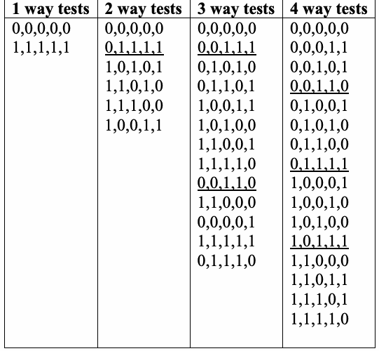
Figure 31. Tests for fault location example.
図31. 故障箇所特定の例に対するテスト。
The heuristics above can be applied to combinations in the failed tests to identify possible failure-triggering combinations, shown in Figure 32.
上記のヒューリスティックを失敗したテスト内の組合せに適用すると、図32に示すように失敗誘発の可能性がある組合せを特定できる。
•The 1-way tests do not detect any failures, but the 2-way tests do, so t=2 is a lower bound for the interaction level needed to detect a failure.
•1-wayテストでは失敗は検出されないが、2-wayテストでは検出される。したがって、失敗を検出するために必要な相互作用レベルの下限はt=2である。
未レビュー訳• The value dependence rule applies to combination “\(\mathtt{be}\)” – since all four possible values for this combination occur in failing tests, failure must be independent of combination \(\mathtt{be}\). In other words, we do not consider the pair \(\mathrm{be}\) to be a cause of failure because it does not matter what value this pair has. Every test must have some value for these parameters.
• 値への依存性の規則は組合せ「\(\mathtt{be}\)」に適用される。この組合せで可能な4つの値がすべて失敗したテストに現れるので、失敗は組合せ\(\mathtt{be}\)に依存しないはずである。言い換えれば、組\(\mathrm{be}\)がどの値をとるかは関係しないので、この組を失敗の原因とはみなさない。どのテストも、これらのパラメータに何らかの値を持たなければならない。
| t=2 | ab 01 00 10 | ac 01 11 | ad 01 11 | ae 01 00 11 | bc 11 01 | bd 11 01 | be 11 01 00 10 | cd 11 | ce 11 10 | de 11 10 |
| t=3 | abc 011 001 101 | abd 011 001 101 | abe 011 001 000 101 010 | acd 011 111 | ace 011 010 111 | ade 011 010 111 | bcd 111 011 | bce 111 011 010 110 | bde 111 011 010 110 | cde 111 110 |
| t=4 | abcd 0111 0011 1011 | abce 0111 0011 0010 1011 0110 | abde 0111 0011 0010 1011 0110 | bcde 1111 0111 0110 1110 |
原本PDFの抜粋画像
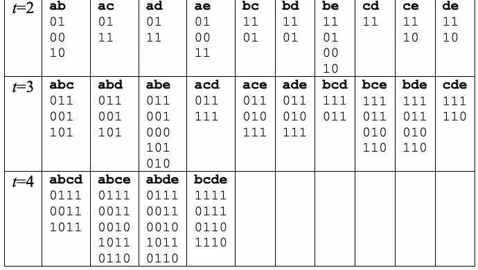
Figure 32. Combinations in failing tests.
図32. 失敗テストに含まれる組合せ。
未レビュー訳•The elimination rule can be applied to determine that there are no 1-way or 2-way combinations that do not appear in both passing and failing tests. Results for 3-way and 4-way combinations are shown in Figure 33. These results were produced by an analysis tool which outputs in the format <test number>:<t level> <parameter numbers> = <parameter values>. Two different 3-way combinations are identified: a=0, c=1, d=1 and b=0, c=1, d=1. A large number of 4-way combinations are also identified, but we can use the interaction continuity rule to show that one of the two 3-way combinations occurs in all of the failing 4-way failing tests. Therefore we can conclude that covering all 3-way parameter interactions would detect the error.
•消去規則を適用すると、合格テストと失敗テストの両方に現れない1-wayまたは2-way組合せはないと判定できる。3-wayおよび4-way組合せの結果を図33に示す。これらの結果は、<テスト番号
未レビュー訳| 1 :3way 0,2,3 = 0,1,1 2 :3way 0,2,3 = 0,1,1 3 :3way 0,2,3 = 0,1,1 4 :3way 0,2,3 = 0,1,1 1 :3way 1,2,3 = 0,1,1 2 :3way 1,2,3 = 0,1,1 5 :3way 1,2,3 = 0,1,1 | 1 :4way 0,1,2,3 = 0,0,1,1 2 :4way 0,1,2,3 = 0,0,1,1 3 :4way 0,1,2,3 = 0,1,1,1 4 :4way 0,1,2,3 = 0,1,1,1 5 :4way 0,1,2,3 = 1,0,1,1 1 :4way 0,1,2,4 = 0,0,1,0 1 :4way 0,1,3,4 = 0,0,1,0 4 :4way 0,1,3,4 = 0,1,1,1 1 :4way 0,2,3,4 = 0,1,1,0 2 :4way 0,2,3,4 = 0,1,1,1 3 :4way 0,2,3,4 = 0,1,1,0 4 :4way 0,2,3,4 = 0,1,1,1 1 :4way 1,2,3,4 = 0,1,1,0 2 :4way 1,2,3,4 = 0,1,1,1 5 :4way 1,2,3,4 = 0,1,1,1 |
原本PDFの抜粋画像
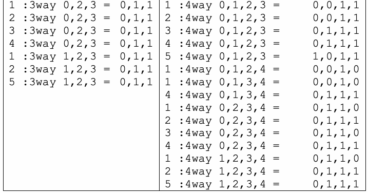
F \ P
原文のみ
Figure 33. 3way and 4way combinations in
原文のみ
The situation is more complex with continuous variables. If, for example, a failure-related branch is taken any time \(x > 100\), \(y = 3\), \(z < 1000\), there may be many combinations implicated in the failure. Analysis will show that \([\mathrm{x} = 200, \mathrm{y} = 3, \mathrm{z} = 120]\), \([\mathrm{x} = 201, \mathrm{y} = 3, \mathrm{z} = 119]\), \([\mathrm{x} = 999, \mathrm{y} = 3, \mathrm{z} = 999]\), \([\mathrm{x} = 101, \mathrm{y} = 3, \mathrm{z} = 0]\), \([\mathrm{x} = 200, \mathrm{y} = 3, \mathrm{z} = 0]\) are all combinations that trigger the failure. With more than three input parameters, there may be dozens or hundreds of failure-triggering combinations, even though there is most likely a single point in the code that is in error.
連続変数では状況がさらに複雑になる。たとえば、\(x > 100\)、\(y = 3\)、\(z < 1000\)のときは常に失敗に関係する分岐が実行されるとすると、失敗に関与する組合せが多数存在しうる。分析すると、\([\mathrm{x} = 200, \mathrm{y} = 3, \mathrm{z} = 120]\)、\([\mathrm{x} = 201, \mathrm{y} = 3, \mathrm{z} = 119]\)、\([\mathrm{x} = 999, \mathrm{y} = 3, \mathrm{z} = 999]\)、\([\mathrm{x} = 101, \mathrm{y} = 3, \mathrm{z} = 0]\)、\([\mathrm{x} = 200, \mathrm{y} = 3, \mathrm{z} = 0]\)がいずれも失敗を引き起こす組合せであることが分かる。入力パラメータが3つより多い場合、誤りのあるコード上の箇所はおそらく1か所だけであっても、失敗を引き起こす組合せは数十から数百に及ぶことがある。
10.2 Cost and Practical Considerations
10.2 コストと実務上の考慮事項
As shown in the example above, it is a non-trivial matter to determine the failure-triggering combination(s) from test results alone. When source code is available, the methods described in this section are probably unnecessary, and can be replaced with conventional debugging techniques. In black-box testing situations where there is no source code, these methods may be useful in narrowing the search for failure-triggering combinations. Tools to implement these methods have been developed and are available from the ACTS project site.
上の例が示すように、テスト結果だけから失敗誘発組合せを特定するのは容易ではない。ソースコードが利用できる場合、この節で説明した方法はおそらく不要であり、従来のデバッグ手法で置き換えられる。ソースコードがないブラックボックステストの状況では、これらの方法が失敗誘発組合せの探索範囲を絞り込むのに役立つことがある。これらの方法を実装するツールは開発済みであり、ACTSプロジェクトのサイトから入手できる。
10.3 Chapter Summary
10.3 本章のまとめ
When source code is available, the best way to identify the cause of a failure is with conventional debugging techniques, since the error must be fixed in code anyway. With pure black-box testing and no access to source code, the heuristics discussed in this chapter may help to narrow down possible causes. Usually there will be many combinations identified as possible causes, so substantial additional testing may be needed to determine the exact cause.
ソースコードが利用できる場合、失敗の原因を特定する最善の方法は従来のデバッグ手法である。いずれにせよエラーはコード上で修正しなければならないからである。ソースコードにアクセスできない純粋なブラックボックステストでは、本章で述べたヒューリスティックが原因の候補を絞り込むのに役立つことがある。通常は多くの組合せが原因の候補として特定されるので、正確な原因を突き止めるには相当量の追加テストが必要になることがある。
Appendix A – MATHEMATICS REVIEW
付録A – 数学の復習
未レビュー訳This appendix reviews a few basic facts of combinatorics, regular expressions, and mathematical logic that are necessary to understand the concepts in this publication.
この付録では、本書の概念を理解するために必要な、組合せ論、正規表現、および数理論理学の基本的な事項をいくつか復習する。
Combinatorics
組合せ論
未レビュー訳Permutations and Combinations
順列と組合せ
未レビュー訳⎛n⎞ n!
原文のみ
For n variables, there are n! permutations and ⎜ ⎟ =
n個の変数にはn!通りの順列があり、「n個からt個を選ぶ」組合せの数は次の式で表される：
未レビュー訳(“n choose t”) combinations
C(n, t) =
未レビュー訳⎜ ⎟ ⎝ t ⎠ t!(n − t)!
n!/[t!(n − t)!]
未レビュー訳of \(t\) variables, also written for convenience as \(\mathrm{C}(n, t)\). To exercise all of the \(t\)-way combinations of inputs to a program, we need to cover all \(t\)-way combinations of variable values, and each combination of \(t\) values can have \(v^t\) configurations, where \(v\) is the number of values per variable. Thus the total number of combinations instantiated with values that must be covered is
\(t\)個の変数の（組合せであり）、便宜上\(\mathrm{C}(n, t)\)とも書く。プログラムへの入力の\(t\)-way組合せをすべて実行するには、変数値の\(t\)-way組合せをすべて網羅する必要があり、\(t\)個の値の各組合せには\(v^t\)通りの構成がありうる。ここで\(v\)は変数1つあたりの値の個数である。したがって、網羅しなければならない、値を割り当てた組合せの総数は次のとおりである。
(1)
(1)
未レビュー訳⎜ ⎟ ⎝ t ⎠
原文のみ
Fortunately, each test covers C(n, t) combination configurations. This fact is the source of combinatorial testing’s power. For example, with 34 binary variables, we would need 234 = 1.7 * 1010 tests to cover all possible configurations, but with only 33 tests we can cover all 3-way combinations of these 34 variables. This happens because each test covers C(34, 3) combinations.
幸い、各テストはC(n, t)個の組合せ設定を網羅する。この性質が組合せテストの力の源である。たとえば、34個の二値変数では、すべての設定を網羅するには2^34 = 1.7 * 10^10件のテストが必要だが、33件のテストだけで3-way組合せをすべて網羅できる。 これは、各テストがC(34, 3)個の組合せを網羅するためである。
未レビュー訳Example. If we have five binary variables, a, b, c, d, and e, then expression (1) says we will need to cover 23 * C(5, 3) = 8*10 = 80 configurations. For 3-way combinatorial testing, we will need to take all 3-variable combinations, of which there are 10:
例：二値変数a、b、c、d、eが5個あるとする。式(1)によれば、2^3 × C(5, 3) = 8 × 10 = 80通りの設定を網羅する必要がある。3-way組合せテストでは、次の10個の3変数組合せをすべて扱う：
未レビュー訳abc, abd, abe, acd, ace, ade, bcd, bce, bde, cde
abc, abd, abe, acd, ace, ade, bcd, bce, bde, cde
未レビュー訳Each of these will need to be instantiated with all 8 possible configurations of three binary variables:
それぞれについて、二値変数3個の可能な8通りの設定すべてを割り当てる必要がある：
000, 001, 010, 011, 100, 101, 110, 111
000, 001, 010, 011, 100, 101, 110, 111
未レビュー訳The test [0 1 0 0 1] covers the following C(5, 3) = 10 configurations:
テスト[0 1 0 0 1]は、次のC(5, 3) = 10通りの設定を網羅する：
未レビュー訳abc abd abe acd ace ade bcd bce bde cde 010 000 011 001 001 001 100 101 101 001
abc abd abe acd ace ade bcd bce bde cde 010 000 011 001 001 001 100 101 101 001
未レビュー訳Orthogonal Arrays
直交配列
未レビュー訳Many software testing problems can be solved with an orthogonal array, a structure that has been used for combinatorial testing in fields other than software for decades. An orthogonal array, OAλ (N;t,k,v) is an N x k array. In every N x t subarray, each t-tuple occurs exactly λ times. We refer to t as the strength of the coverage of interactions, k as the number of parameters or components (degree), and v as the number of possible values for each parameter or component (order).
多くのソフトウェアテスト問題は直交配列で解決できる。直交配列は、ソフトウェア以外の分野でも数十年にわたり組合せテストに使われてきた構造である。直交配列OAλ (N;t,k,v)はN × k配列である。任意のN × t部分配列では、各tタプルが正確にλ回出現する。ここではt
未レビュー訳Example. Suppose we have a system with three on-off switches, controlled by an embedded processor. The following table tests all pairs of switch settings exactly once each. Thus t = 2, λ = 1, v = 2. Note that there are vt = 22 possible combinations of values for each pair: 00, 01, 10, 11. There are C(3,2) = 3 ways to select switch pairs: (1,2), (1,3), and (2,3), and each test covers three pairs, so the four tests cover a total of 12 combinations which implies that each combination is covered exactly once. As one might suspect, it can be very challenging to fit all combinations to be covered into a set of tests exactly the same number of times.
例：組込みプロセッサで制御するオン・オフスイッチが3つあるシステムを考える。次の表は、スイッチ設定の各ペアをちょうど1回ずつ試験する。したがってt = 2、λ = 1、v = 2である。各ペアの値の組合せはvt = 2^2通り、すなわち00、01、10、11である。
未レビュー訳| テスト | スイッチ1 | スイッチ2 | スイッチ3 |
| 1 | 0 | 0 | 0 |
| 2 | 0 | 1 | 1 |
| 3 | 1 | 0 | 1 |
| 4 | 1 | 1 | 0 |
Covering Arrays
カバリングアレイ
未レビュー訳An alternative to an orthogonal array is a set called a covering array, which includes all \(t\)-way combinations of parameter values, for the desired strength \(t\). A covering array, \(\mathit{CA}_{\lambda}(N;t,k,v)\), is an \(N \times k\) array. In every \(N \times t\) subarray, each \(t\)-tuple occurs at least \(\lambda\) times. Note this distinction between covering arrays and orthogonal arrays discussed in the previous section. The covering array relaxes the restriction that each combination is covered exactly the same number of times. Thus covering arrays may result in some test duplication, but they offer the advantage that they can be computed for much larger problems than is possible for orthogonal arrays. Software described elsewhere in this book can efficiently generate covering arrays up to strength \(t = 6\), for a large number of variables.
直交配列に代わるものとして、被覆配列と呼ばれる集合がある。被覆配列は、求める強度\(t\)について、パラメータ値の\(t\)-way組合せをすべて含む。被覆配列\(\mathit{CA}_{\lambda}(N;t,k,v)\)は\(N \times k\)の配列である。どの\(N \times t\)部分配列においても、各\(t\)タプルは少なくとも\(\lambda\)回出現する。前節で述べた直交配列と被覆配列とのこの違いに注意されたい。被覆配列は、各組合せがちょうど同じ回数だけ網羅されるという制約を緩めている。そのため、被覆配列ではテストにいくらか重複が生じることがあるが、直交配列で可能な規模よりはるかに大きな問題に対して計算できるという利点がある。本書の別の箇所で説明するソフトウェアは、多数の変数に対して、強度\(t = 6\)までの被覆配列を効率よく生成できる。
The problems discussed in this publication deal only with the case when \(\lambda = 1\), (i.e. that every \(t\)-tuple must be covered at least once). In software testing, each row of the covering array represents a test, with one column for each parameter that is varied in testing. Collectively, the rows of the array include every \(t\)-way combination of parameter values at least once. For example, Figure 1 shows a covering array that includes all 3-way combinations of binary values for 10 parameters. Each column gives the values for a particular parameter. It can be seen that any three columns in any order contain all eight possible combinations of the parameter values. Collectively, this set of tests will exercise all 3-way combinations of input values in only 13 tests, as compared with 1,024 for exhaustive coverage.
本書で扱う問題は、\(\lambda = 1\)の場合（すなわち、すべての\(t\)タプルを少なくとも1回網羅しなければならない場合）だけである。ソフトウェアテストでは、被覆配列の各行が1つのテストを表し、テストで値を変える各パラメータに1つの列が対応する。配列の行全体として、パラメータ値のすべての\(t\)-way組合せを少なくとも1回含む。たとえば図1は、10個のパラメータについて2値の3-way組合せをすべて含む被覆配列を示している。各列は特定のパラメータの値を示す。任意の3列をどの順序で取っても、パラメータ値の可能な8通りの組合せがすべて含まれることが分かる。このテストの集合は全体として、入力値のすべての3-way組合せをわずか13個のテストで実行する。これに対し、全数網羅では1,024個が必要である。
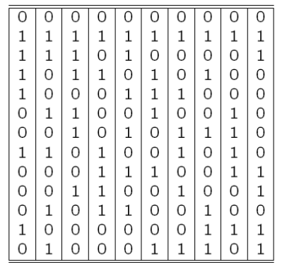
Figure 1. 3-way covering array for 10 parameters with 2 values each.
図1. 各パラメーターが2つの値を持つ10パラメーターの3-way被覆配列。
未レビュー訳Number of Tests Required
必要なテスト数
未レビュー訳The challenge in computing covering arrays is to find the smallest possible array that covers all configurations of \(\mathrm{t}\) variables. If every new test generated covered all previously uncovered combinations, then the number of tests needed would be
被覆配列の計算で課題となるのは、\(\mathrm{t}\)個の変数のすべての構成を網羅する、可能な限り小さい配列を見つけることである。新たに生成する各テストが、それまで網羅されていなかった組合せをすべて網羅するとしたら、必要なテスト数は次のとおりになる。
Since this is not generally possible, the covering array will be significantly larger than \(v^t\), but still a reasonable number for testing. It can be shown that the number of tests in a \(\mathrm{t}\)-way covering array will be proportional to
これは一般には不可能なので、被覆配列は\(v^t\)よりかなり大きくなるが、それでもテストとして妥当な数に収まる。\(\mathrm{t}\)-way被覆配列のテスト数は次の式に比例することを示せる。
vt log n
v^t log n
未レビュー訳(2)
(2)
未レビュー訳for n variables with v values each.
各変数がv個の値を持つn個の変数について、これに比例する。
未レビュー訳It’s worth considering the components of this expression to gain a better understanding of what will be required to do combinatorial testing. First, note that the number of tests grows exponentially with the interaction strength \(\mathrm{t}\). The number of tests required for \(t+1\)-way testing will be in the neighborhood of \(v\) times the number required for \(t\)-way testing. The table below shows how \(v^t\), grows for values of \(v\) and \(t\). Although the number of tests required for high-strength combinatorial testing can be very large, with advanced software and cluster processors it is not out of reach.
組合せテストを行うのに何が必要になるかをよりよく理解するために、この式の構成要素を考えてみる価値がある。まず、テスト数は相互作用強度\(\mathrm{t}\)に対して指数関数的に増加することに注意されたい。\(t+1\)-wayテストに必要なテスト数は、\(v\)を\(t\)-wayテストに必要な数に掛けた値の近くになる。下の表は、\(v^t\)が\(v\)と\(t\)の値に応じてどのように増加するかを示す。高強度の組合せテストに必要なテスト数は非常に大きくなりうるが、高度なソフトウェアとクラスタプロセッサがあれば手の届かない数ではない。
Table 1. Growth of vt
表1. v^tの増加
未レビュー訳Despite the possibly discouraging numbers in the table above, there is some good news. Note that formula (2) grows only logarithmically with the number of variables, n. This is fortunate for software testing. Early applications of combinatorial methods were typically involved with small numbers of variables, such as a few different types of crops or fertilizers, but for software testing, we must deal with tens, or in some cases hundreds of variables.
上の表に気後れするような数値が並んでいても、朗報がある。式(2)は変数数nに対して対数的にしか増加しない点に注意されたい。これはソフトウェア試験にとって幸いである。組合せ手法の初期の適用例は、通常、いくつかの作物や肥料の種類など、少数の変数を扱っていた。一方、ソフトウェア試験では、数十個、場合によっては数百個の変数を扱う必要がある。
Regular Expressions
正規表現
未レビュー訳Regular expressions are formal descriptions of strings of symbols, which may represent text, events, characters, or other objects. They are developed within automata theory and formal languages, where it is shown that there are direct mappings between expressions and automata to process them, and are encountered in many areas within computer science. In combinatorial testing they may be encountered in sequence covering or in processing test input or output. Implementations vary, but standard syntax is explained below.
正規表現は、テキスト、イベント、文字、その他のオブジェクトを表す場合がある記号列の形式的記述である。正規表現はオートマトン理論と形式言語の分野で発展し、式とそれを処理するオートマトンとの間に直接的な対応があることが示されている。また、計算機科学の多くの分野で使われている。組合せテストでは、シーケンス網羅やテスト入力または出力の処理で使われる場合がある。実装によって違いはあるが、標準的な構文を以下に説明する。
Expression Operators
演算子
未レビュー訳Basic elements of regular expressions include:
正規表現の基本要素には、次のものがある:
| “or” alternation. Ex: ab|ac matches “ab” or “ac” ? 0 or 1 of the preceding element. Ex: ab?c matches “ac” or “abc” * 0 or more of the preceding element. Ex: ab* matches “a”, “ab”, “abb”, “abbb” etc. + 1 or more of the preceding element. Ex: ab+
| 「または」を表す選択。例: ab|ac は「ab」または「ac」に一致する。? 直前の要素が0回または1回出現する。例: ab?c は「ac」または「abc」に一致する。* 直前の要素が0回以上出現する。例: ab* は「a」、「ab」、「abb」、「abbb」などに一致する。+ 直前の要素が1回以上出現する。例: ab+
未レビュー訳matches “ab”, “abb”, “abbb” etc. () grouping. Ex: (abc|abcd) matches “abc” or “abcd”
は「ab」、「abb」、「abbb」などに一致する。() グループ化。例: (abc|abcd) は「abc」または「abcd」に一致する。
未レビュー訳. matches any single character. Ex: a.c matches “abc”, “axc”, “a@c” etc. [ ] matches any single character within brackets. Ex: [abc] matches “a”
. 任意の1文字に一致する。例: a.c は「abc」、「axc」、「a@c」などに一致する。[ ] 括弧内の任意の1文字に一致する。例: [abc] は「a」に一致する。
未レビュー訳or “b” or “c”. A range may also be specified. Ex: [a-z] matches any single lower case character. (This option depends on the character set supported.) [^ ] matches any single character that is not contained in the brackets. Ex: [^ab] matches any character except “a” or “b”
または「b」または「c」に一致する。範囲も指定できる。例: [a-z] は任意の小文字1文字に一致する。（このオプションはサポートされる文字セットに依存する。）[^ ] 括弧内に含まれない任意の1文字に一致する。例: [^ab] は「a」または「b」以外の任意の文字に一致する。
未レビュー訳^ matches start position, i.e., before the first character $ matches end position, i.e., after the last character
^ は開始位置、すなわち最初の文字の前を表す。$ は終了位置、すなわち最後の文字の後を表す。
未レビュー訳Combining Operators
演算子の組合せ
未レビュー訳The operators above can be combined with symbols to create arbitrarily complex expressions. Examples include:
上記の演算子は記号と組み合わせて、任意に複雑な式を作成できる。例:
.*a.*b.*c.* “a” followed by “b” followed by “c” with zero or more
.*a.*b.*c.* 「a」の後に「b」、さらに「c」が続く。その前に0個以上の
未レビュー訳symbols prior to “a”, following “c”, or interspersed with the three symbols
記号があってもよく、「c」の後や3つの記号の間にも記号を挿入できる。
未レビュー訳a|b*
a|b*
未レビュー訳null or “a” or zero or more occurrences of “b”
空文字列、「a」、または「b」の0回以上の出現
未レビュー訳a+
未レビュー訳equivalent to aa*
aa*と同等
未レビュー訳Many regular expression utilities such as egrep support a broader range of operators and features. Readers should consult documentation for grep, egrep, or other regular expression processors for detailed coverage of the options available on particular tools.
egrepなど多くの正規表現ユーティリティは、より広範な演算子や機能をサポートしている。各ツールで利用できるオプションの詳細については、grep、egrep、または他の正規表現処理ツールのドキュメントを参照されたい。
未レビュー訳Appendix B - EMPIRICAL DATA ON SOFTWARE FAILURES
付録B - ソフトウェア障害に関する実証データ
未レビュー訳One of the most important questions in software testing is "how much is enough"? For combinatorial testing, this question includes determining the appropriate level of interaction that should be tested. That is, if some failure is triggered only by an unusual combination of more than two values, how many testing combinations are enough to detect all errors? What degree of interaction occurs in real system failures? This section summarizes what is known about these questions based on research by NIST and others [4, 7, 34, 35, 36, 65].
ソフトウェアテストにおける最も重要な問いの1つは、「どれだけやれば十分か」である。組合せテストでは、この問いに、テストすべき相互作用の適切な水準を決めることが含まれる。つまり、ある失敗が2つを超える値の珍しい組合せによってのみ引き起こされるとしたら、すべてのエラーを検出するにはいくつの組合せをテストすれば十分なのか。実際のシステムの失敗では、どの程度の相互作用が生じているのか。本節では、NISTほかによる研究[4, 7, 34, 35, 36, 65]に基づき、これらの問いについて分かっていることをまとめる。
Table 1 below summarizes what we know from empirical studies of a variety of application domains, showing the percentage of failures that are triggered by the interaction of one to six variables. For example, 66% of the medical devices were triggered by a single variable value, and 97% were triggered by either one or two variables interacting. Although certainly not conclusive, the available data suggest that the number of interactions involved in system failures is relatively low, with a maximum from 4 to 6 in the six studies cited below. (Note: TCAS study used seeded errors, all others are "naturally occurring", * = not reported.)
下の表1は、さまざまな応用分野の実証研究から分かっていることをまとめたもので、1個から6個の変数の相互作用によって引き起こされる失敗の割合を示す。たとえば、医療機器では66%が単一の変数の値によって引き起こされ、97%が1個または2個の変数の相互作用によって引き起こされた。決定的とは言えないが、入手できるデータは、システムの失敗に関与する相互作用の数が比較的少なく、下に挙げる6つの研究では最大でも4から6であることを示唆している。（注：TCASの研究は埋め込んだエラーを使用しており、その他はすべて「自然に発生した」ものである。* = 報告なし。）
| Medical | NASA | Network | ||||
| Vars | Browser | Server | TCAS | |||
| Devices | GSFC | Security | ||||
| 1 | 66 | 29 | 42 | 68 | 17 | * |
| 2 | 97 | 76 | 70 | 93 | 62 | 53 |
| 3 | 99 | 95 | 89 | 98 | 87 | 74 |
| 4 | 100 | 97 | 96 | 100 | 98 | 89 |
| 5 | 99 | 96 | 100 | 100 | ||
| 6 | 100 | 100 |
原本PDFの抜粋画像
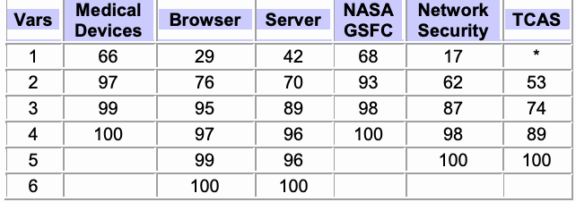
| 医療 | NASA | ネットワーク | ||||
| 変数 | ブラウザー | サーバー | TCAS | |||
| 機器 | GSFC | セキュリティ | ||||
| 1 | 66 | 29 | 42 | 68 | 17 | * |
| 2 | 97 | 76 | 70 | 93 | 62 | 53 |
| 3 | 99 | 95 | 89 | 98 | 87 | 74 |
| 4 | 100 | 97 | 96 | 100 | 98 | 89 |
| 5 | 99 | 96 | 100 | 100 | ||
| 6 | 100 | 100 |
Table 1. Number of variables involved in triggering software failures
表1. ソフトウェア障害を引き起こすことに関与した変数の数
未レビュー訳| System | System type | Release stage | Size (LOC) |
| Medical Devices | Embedded | Fielded products | 103 – 104 (varies) |
| Browser | Web browser | Development/ beta release | approx. 2 x 105 |
| Server | HTTP server | Development/ beta release | approx. 105 |
| NASA database | Distributed scientific database | Development, integration test | approx. 105 |
| Network security | Network protocols | Fielded products | 103 – 105 (varies) |
原本PDFの抜粋画像
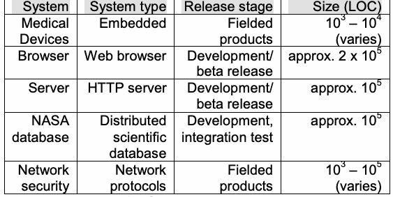
Table 2. System characteristics
表2. システムの特性
未レビュー訳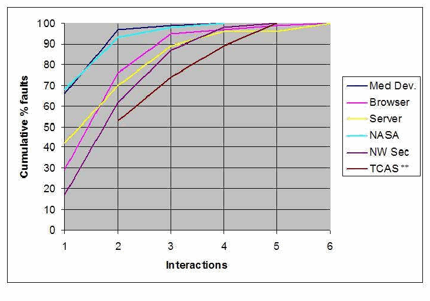
Figure 1. Cumulative percentage of failures triggered by t-way interactions.
図1. t-way相互作用によって引き起こされた障害の累積割合。
未レビュー訳We have also investigated a particular class of vulnerabilities, denial-of-serivce, using reports from the National Vulnerability Database (NVD), a publicly available repository of data on all publicly reported software security vulnerabilities. NVD can be queried for fine-granularity reports on vulnerabilities. Data from 3,045 denial-of service vulnerabilities have the distribution shown in Table 3. We present this data separately from that above because it covers only one particular kind of failure, rather than data on any failures occurring in a particular program as shown in Figure 1.
また、National Vulnerability Database（NVD）の報告を用いて、サービス拒否という特定の脆弱性クラスも調査した。NVDは、一般公開されたソフトウェアセキュリティ脆弱性の全報告を収録する、一般公開のデータリポジトリである。NVDでは脆弱性に関する詳細な報告を検索できる。サービス拒否脆弱性3,045件のデータは、表3に示す分布となった。これは特定のプログラムで発生するすべての障害のデータを示す上記の図1とは異なり、特定の種類の障害のみを対象としているため、上記のデータとは分けて示す。
未レビュー訳| NVD | |
| 変数 | 累積 |
| % | |
| 1 | 93% |
| 2 | 99% |
| 3 | 100% |
| 4 | 100% |
| 5 | 100% |
| 6 | 100% |
Table 3. Cumulative percentage of denial-of-service vulnerabilities triggered by t-way interactions.
表3. t-way相互作用によって引き起こされたサービス拒否脆弱性の累積割合。
未レビュー訳Why do the failure detection curves look this way? That is, why does the error rate tail off so rapidly with more variables interacting? One possibility is that there are simply few complex interactions in branching points in software. If few branches involve 4-way, 5-way, or 6-way interactions among variables, then this degree of interaction could be rare for failures as well. The table below (Table 4 and Fig. 2) gives the number and percentage of branches in avionics code triggered by one to 19 variables. This distribution was developed by analyzing data in a report on the use of MCDC testing in avionics software [16], which contains 20,256 logic expressions in five different airborne systems in two different airplane models. The table below includes all 7,685 expressions from if and while statements; expressions from assignment (:=) statements were excluded.
障害検出曲線がこのような形になるのはなぜか。つまり、相互作用する変数が増えるとエラー率が急速に低下するのはなぜか。考えられる理由の1つは、ソフトウェアの分岐点に複雑な相互作用がほとんどないことである。変数間の4-way、5-way、6-way相互作用を含む分岐が少なければ、この程度の相互作用が障害を引き起こすこともまれである可能性がある。下の表（表4および図2）は、航空電子機器コードにおいて1～19個の変数によって実行される分岐の数と割合を示す。この分布は、航空電子機器ソフトウェアのMCDC試験利用に関する報告書 [16] のデータを分析して作成された。同報告書には、2種類の航空機モデルに搭載された5つの異なるシステムにおける20,256個の論理式が含まれる。下の表にはif文およびwhile文に含まれる式7,685個すべてを含め、代入（:=）文の式は除外した。
未レビュー訳Table 4. Number of variables in avionics software branches
表4. 航空電子機器ソフトウェアの分岐に含まれる変数の数
未レビュー訳| Vars | Count | Pct | Cumulative |
| 1 | 5691 | 74.1% | 74.1% |
| 2 | 1509 | 19.6% | 93.7% |
| 3 | 344 | 4.5% | 98.2% |
| 4 | 91 | 1.2% | 99.3% |
| 5 | 23 | 0.3% | 99.6% |
| 6 | 8 | 0.1% | 99.8% |
| 7 | 6 | 0.1% | 99.8% |
| 8 | 8 | 0.1% | 99.9% |
| 9 | 3 | 0.0% | 100.0% |
| 15 | 1 | 0.0% | 100.0% |
| 19 | 1 | 0.0% | 100.0% |
原本PDFの抜粋画像
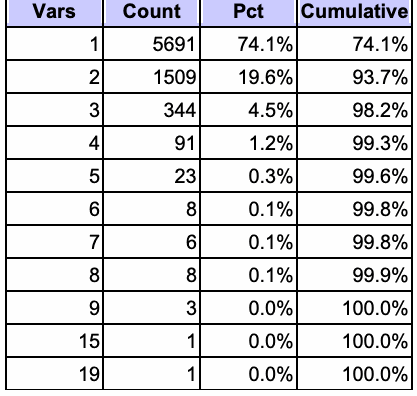
| 変数 | 件数 | 割合 | 累積 |
| 1 | 5691 | 74.1% | 74.1% |
| 2 | 1509 | 19.6% | 93.7% |
| 3 | 344 | 4.5% | 98.2% |
| 4 | 91 | 1.2% | 99.3% |
| 5 | 23 | 0.3% | 99.6% |
| 6 | 8 | 0.1% | 99.8% |
| 7 | 6 | 0.1% | 99.8% |
| 8 | 8 | 0.1% | 99.9% |
| 9 | 3 | 0.0% | 100.0% |
| 15 | 1 | 0.0% | 100.0% |
| 19 | 1 | 0.0% | 100.0% |
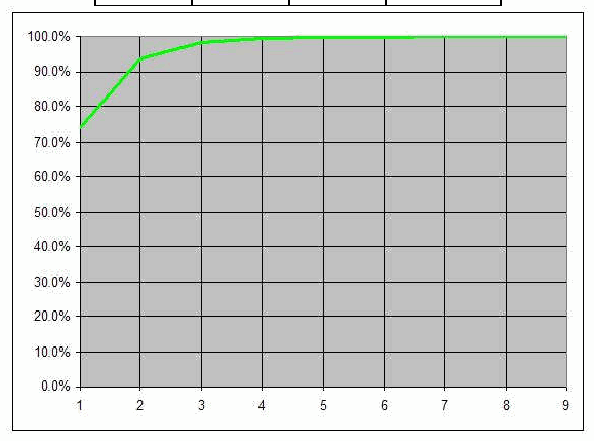
Figure 2. Cumulative percentage of branches containing n variables.
図2. n個の変数を含む分岐の累積割合。
未レビュー訳As shown in Fig. 2, most branching statement expressions are simple, with over 70% containing only a single variable. Superimposing the curve from Fig. 2 on Fig. 1, we see (Fig. 3) that most failures are triggered by more complex interactions among variables. It is interesting that the NASA distributed database failures, from development-phase software bug reports, have a distribution similar to expressions in branching statements. This distribution may be because this was development-phase rather than fielded software like all other types reported in Fig. 1. As failures are removed, the remaining failures may be harder to find because they require the interaction of more variables. Thus testing and use may push the curve down and to the right.
図2に示すように、分岐文の式の大半は単純であり、70%を超える式が単一の変数しか含まない。図2の曲線を図1に重ねると、ほとんどの障害は変数間のより複雑な相互作用によって引き起こされることが分かる（図3）。興味深いことに、開発段階のソフトウェアのバグ報告に基づくNASA分散データベースの障害は、分岐文の式と同様の分布を示す。この分布になったのは、図1に報告された他のすべての種類のシステムのような運用中のソフトウェアではなく、開発段階のソフトウェアを対象としたためかもしれない。障害が取り除かれるにつれ、残った障害はより多くの変数の相互作用を必要とするため、発見が難しくなる可能性がある。このように、試験と使用によって曲線が右下方向に移動することがある。
未レビュー訳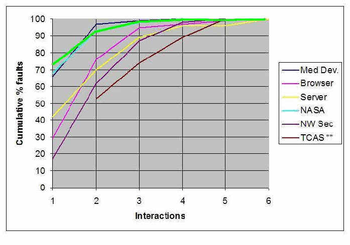
Figure 3. Branch distribution (green) superimposed on Fig. 1.
図3. 分岐の分布（緑色）を図1に重ねたもの。
未レビュー訳Appendix C - TOOLS FOR COMBINATORIAL TESTING
付録C - 組合せテスト用ツール
未レビュー訳A variety of software tools are available to assist with combinatorial testing projects. Here we summarize those available from the NIST ACTS project. The ACTS covering array generator is generally faster and produces smaller test arrays than others, based on comparisons we have done in 2009. The other tools, to the best of our knowledge, have functions that are not available elsewhere.
組合せテストプロジェクトを支援するさまざまなソフトウェアツールが利用できる。ここではNIST ACTSプロジェクトで提供されるツールを要約する。2009年に実施した比較に基づくと、ACTS被覆配列生成器は一般に他のツールより高速で、小さいテスト配列を生成する。他のツールには、私たちの知る限り、他では利用できない機能がある。
未レビュー訳•ACTS covering array generator – produces compact arrays that will cover 2-way through 6-way combinations. It also supports constraints that can make some values dependent on others, and mixed level covering arrays which offer different strength coverage for subsets of the parameters (e.g., 2-way coverage for one subset but 4-way for another subset of parameters). Output can be exported in a variety of formats, including human-readable, numeric, and spreadsheet. Either “don’t care” or randomized output can be specified for tests that include combinations already fully covered by previous tests.
•ACTS被覆配列生成器 — 2-wayから6-wayまでの組合せを網羅するコンパクトな配列を生成する。また、一部の値を他の値に依存させる制約や、パラメーターの部分集合ごとに異なる強度の網羅率（例: ある部分集合では2-way、別の部分集合では4-way）を提供する混合レベル被覆配列もサポートする。出力は、人間可読形式、数値形式、スプレッドシート形式など、さまざまな形式でエクスポートできる。以前のテストですでに完全に網羅された組合せを含むテストについては、「ドントケア」またはランダム出力を指定できる。
未レビュー訳•Coverage measurement tool – produces a comprehensive set of data on the combinatorial coverage of an existing set of tests, as explained in Chapter 6. Output can be generated in spreadsheet format to allow easy processing and graphing.
•網羅率測定ツール — 第6章で説明したように、既存のテスト集合の組合せ網羅率に関する包括的なデータを生成する。容易に処理およびグラフ化できるよう、スプレッドシート形式で出力できる。
•Sequence covering array generator – produces sequence covering arrays as defined in Chapter 5. It includes an option for constraints in the form of prohibited sequences.
•シーケンス被覆配列生成器 — 第5章で定義したシーケンス被覆配列を生成する。禁止シーケンス形式の制約オプションを含む。
To obtain any of these, see the ACTS web site at csrc.nist.gov/acts.
これらのツールを入手するには、ACTSウェブサイト csrc.nist.gov/acts を参照されたい。
Appendix D - REFERENCES
付録D - 参考文献
未レビュー訳1.P. Ammann, P.E. Black, Abstracting Formal Specifications to Generate Software Tests via Model Checking, Proc. 18th Digital Avionics Systems Conference, Oct. 1999, IEEE, vol. 2. pp. 10.A.6.1-10
1.原文のみ
2.P. Ammann, J. Offutt, Introduction to Software Testing, Cambridge University Press, New York, 2008.
2.原文のみ
3.J. Bach, P. Shroeder, Pairwise Testing - A Best Practice That Isn't. Proceedings of 22nd Pacific Northwest Software Quality Conference, 2004, pp. 180-196
3.原文のみ
4.L. Baresi, M. Young, Test Oracles, Dept. of Computer and Information Science, Univ. of Oregon, 2001. http://www.cs.uoregon.edu/michal/pubs/oracles.html
4.原文のみ
5.B. Beizer, Software Testing Techniques, Van Nostrand Reinhold, New York, 2nd edition, 1990.
5.原文のみ
6.K. Z. Bell and Mladen A. Vouk. On effectiveness of pairwise methodology for testing network-centric software. Proceedings of the ITI Third IEEE International Conference on Information & Communications Technology, pages 221–235, Cairo, Egypt, December 2005.
6.原文のみ
7.K.Z. Bell, Optimizing Effectiveness and Efficiency of Software Testing: a Hybrid Approach, PhD Dissertation, North Carolina State University, 2006.
7.原文のみ
8.P. E. Black, V. Okun, Y. Yesha, "Testing with Model Checkers: Insuring Fault Visibility", WSEAS Trans. Sys., 2 (1): 77-82, Jan. 2003.
8.原文のみ
9.P. E. Black, V. Okun, Y. Yesha, "Mutation Operators for Specfications", Automated Software Engineering, 2000
9.原文のみ
10.B.W. Boehm, Software Engineering Economics, Prentice Hall, 1981.
10.原文のみ
11.R. Bryce, C.J. Colbourn. The Density Algorithm for Pairwise Interaction Testing, Journal of Software Testing, Verification and Reliability, August 2007
11.原文のみ
12.R. Bryce, A. Rajan, M.P.E. Heimdahl, Interaction Testing in Model Based Development: Effect on Model Coverage, IEEE, 13th Asia Pacific Software Engineering Conference (APSEC'06) pp. 259-268.
12.原文のみ
13.R. Bryce, Y. Lei, D.R. Kuhn, R. Kacker, "Combinatorial Testing", Chap. 14, Handbook of Research on Software Engineering and Productivity Technologies: Implications of Globalization, Ramachandran, ed. , IGI Global, 2009.
13.原文のみ
14.K. Burr and W. Young Combinatorial Test Techniques: Table-Based Automation, Test Generation, and Test Coverage, International Conference on Software Testing, Analysis, and Review (STAR), San Diego, CA, October, 1998.
14.原文のみ
15.K. Burroughs, A. Jain, and R. L. Erickson. Improved quality of protocol testing through techniques of experimental design. In Proceedings of the IEEE International Conference on Communications (Supercomm/ICC'94), May 1-5, New Orleans, Louisiana, USA. IEEE, May 1994, pp. 745-752
15.原文のみ
16.J.J. Chilenski, An Investigation of Three Forms of the Modified Condition Decision Coverage (MCDC) Criterion, Report DOT/FAA/AR-01/18, April 2001, 214 pp.
16.原文のみ
17.A.Cimatti, E. Clarke, F. Giunchiglia and M. Roveri. NuSMV: a new symbolic model verifier. In N. Halbwachs and D. Peled, editors. Proceeding of International Conference on Computer-Aided Verification (CAV'99). In Lecture Notes in Computer Science, no. 1633, pp. 495-499, Trento, Italy, July 1999. Springer Verlag.
17.原文のみ
18.E. M. Clarke, K. L. McMillan, S. Campos, and V. Hartonas-Garmhausen. Symbolic model checking. In Rajeev Alur and Thomas A. Henzinger, editors, Proceedings of the Eighth International Conference on Computer Aided Verification CAV, volume 1102 of Lecture Notes in Computer Science, pages 419 422, New Brunswick, NJ, USA, July/August 1996. Springer Verlag.
18.原文のみ
19.M.B. Cohen, J. Snyder, G. Rothermel. Testing Across Configurations: Implications for Combinatorial Testing, Workshop on Advances in Model-based Software Testing, Raleigh, Nov. 2006, pp. 1-9
19.原文のみ
20.D.M. Cohen, S. R. Dalal, J. Parelius, G. C. Patton The Combinatorial Design Approach to Automatic Test Generation, IEEE Software, Vol. 13, No. 5, pp. 83-87, September 1996
20.原文のみ
21.L.Copeland, A Practitioner’s Guide to Software Test Design, Artech House Publishers, Boston, 2004.
21.原文のみ
22.Apilli, B. S., L. Richardson, C. Alexander, Fault-based combinatorial testing of web services. In Proc. 24th ACM SIGPLAN Conference Companion on Object Oriented Programming Systems Languages and Applications (Orlando, October 25 - 29, 2009)
22.原文のみ
23.Dalal, S.R., C.L. Mallows, Factor-covering Designs for Testing Software, Technometrics, v. 40, 1998, pp. 234-243.
23.原文のみ
24.S. Dunietz, W. K. Ehrlich, B. D. Szablak, C. L. Mallows, A. Iannino. Applying design of experiments to software testing, Proceedings of the Intl. Conf. on Software Engineering, (ICSE ’97), 1997, pp. 205-215, New York
24.原文のみ
25.L. du Bousquet, Y. Ledru, O. Maury, C. Oriat, J.-L. Lanet, A case study in JML-based software validation. Proceedings of 19th Int. IEEE Conf. on Automated Sofware Engineering, pp. 294-297, Linz, Sep. 2004
25.原文のみ
26.M.Grindal, J. Offutt, S.F. Andler, Combination Testing Strategies: a Survey, Software Testing, Verification, and Reliability, v. 15, 2005, pp. 167-199.
26.原文のみ
27.C.A.R. Hoare, “Assertions, a Personal Perspective”, IEEE Annals of the History of Computing, vol. 25, no. 2, pp. 14-25, 2003.
27.原文のみ
28.R.Kramer, “iContract – The Java Design by Contract Tool”. In Proceedings of TOOLS26: Technology of Object-Oriented Languages and Systems, pp. 295-307,
28.原文のみ
IEEE, 1998.
原文のみ
29.V.Hu, D.R. Kuhn, T. Xie, "Property Verification for Generic Access Control Models", IEEE/IFIP International Symposium on Trust, Security, and Privacy for Pervasive Applications, Shanghai, China, Dec. 17-20, 2008.
29.原文のみ
30.Instituteof Electrical and Electronics Engineers, IEEE Standard Glossary of Software Engineering Terminology, ANSI/IEEE Std. 729-1983.
30.原文のみ
31.D.R. Kuhn, "Fault Classes and Error Detection Capability of Specification Based Testing," ACM Transactions on Software Engineering and Methodology, Vol. 8, No. 4 (October,1999).
31.原文のみ
32.R. Kuhn, R. Kacker, Y.Lei, J. Hunter, "Combinatorial Software Testing", IEEE Computer, vol. 42, no. 8 (August 2009).
32.原文のみ
33.D.R. Kuhn, R. Kacker, Y. Lei, "Automated Combinatorial Test Methods:Beyond Pairwise Testing", Crosstalk, Journal of Defense Software Engineering, vol. 21, no. 6, June 2008
33.原文のみ
34.D.R. Kuhn and V. Okun, “Pseudo-exhaustive Testing for Software,” Proceedings of 30th NASA/IEEE Software Engineering Workshop, pp. 153-158, 2006
34.原文のみ
35.D.R. Kuhn, M.J. Reilly, An Investigation of the Applicability of Design of Experiments to Software Testing, 27th NASA/IEEE Software Engineering Workshop, NASA Goddard Space Flight Center, 4-6 December, 2002 .
35.原文のみ
36.D.R. Kuhn, D.R. Wallace, and A. Gallo, “Software Fault Interactions and Implications for Software Testing,” IEEE Transactions on Software Engineering, 30(6): 418-421, 2004
36.原文のみ
37.D.R. Kuhn, R. Kacker, Y.Lei, "Random vs. Combinatorial Methods for Discrete Event Simulation of a Grid Computer Network", Proceedings, Mod Sim World 2009, Oct. 14-17 2009, Virginia Beach, pp. 83-88, NASA CP-2010-216205, National Aeronautics and Space Administration.
37.原文のみ
38.D.R. Kuhn, R. Kacker, Y. Lei, "Combinatorial and Random Testing Effectiveness for a Grid Computer Simulator" NIST Tech. Rpt. 24 Oct 2008.
38.原文のみ
39.D.R. Kuhn, J.M. Higdon, Testing Event Sequences, http://csrc.nist.gov/groups/SNS/acts/sequence_cov_arrays.html Oct., 2009.
39.原文のみ
40.D.R.Kuhn, J.M. Higdon, J.F. Lawrence, R. Kacker, Y. Lei, "Combinatorial Methods for Event Sequence Testing", (to appear).
40.原文のみ
41.G.Kundrajavets, N. Nagappan, T. Ball, Assessing the Relationship between Software Assertions and Faults: an Empirical Investigation, Proceedings of 17th International Symposium on Software Reliability Engineering, IEEE, pp. 204-212, Raleigh, 2006.
41.原文のみ
42.G.T. Leavens, A.L. Baker, and C. Ruby. JML: A notation for detailed design. In H. Kilov, B. Rumpe, and I. Simmonds, editors, Behavioral Specifications of Businesses and Systems. Kluwer, 1999
42.原文のみ
43.Y. Lei, R. Kacker, D.R. Kuhn, V. Okun, J. Lawrence, “IPOG/IPOG-D: Efficient Test Generation for Multi-Way Combinatorial Testing”, Software Testing, Verification, and Reliability.
43.原文のみ
44.D.C. Luckham, F.W. von Henke. “Overview of Anna, a Specification Language for Ada”, IEEE Software, vol. 2, no. 2, pp. 9-22, March 1985.
44.原文のみ
45.M. Lyu, ed. Software Reliability Engineering, McGraw Hill, 1996.
45.原文のみ
46.P.J. Maker, GNU Nana – User’s Guide (version 2.4). Technical report, School of Information Technology – Northern Territory Univ., July 1998.
46.原文のみ
47.B.A. Malloy, J.M. Voas, “Programming with Assertions – a Prospectus”, IEEE IT Professional, vol. 6, no. 5, pp. 53-59, Sept./Oct. 2004.
47.原文のみ
48.B. Marick, The Craft of Software Testing, Simon & Schuster, 1995.
48.原文のみ
49.A.P. Mathur, Foundations of Software Testing, Addison-Wesley, New York, 2008.
49.原文のみ
50.J.R.Maximoff, M.D. Trela, D.R. Kuhn, R. Kacker, “A Method for Analyzing System State-space Coverage within a t-Wise Testing Framework”, IEEE International Systems Conference 2010, Apr. 4-11, 2010, San Diego.
50.原文のみ
51.M. Memon and Q. Xie. Studying the fault-detection effectiveness of GUI test cases for rapidly evolving software. IEEE Trans. Softw. Eng., 31(10):884–896, 2005.
51.原文のみ
52.B. Meyer, Object-Oriented Software Construction, Second Edition, Prentice Hall,
52.原文のみ
1997, ISBN 0-13-629155-4
原文のみ
53.G. Myers, The Art of Software Testing, John Wiley and Sons, New York, 1979.
53.原文のみ
54.V. Okun, P. E. Black, “Issues in Software Testing with Model Checkers”, Proceedings of the International Conference on Dependable Systems and Networks (DSN-2003), June 2003
54.原文のみ
55.V. Okun, "Specification Mutation for Test Generation and Analysis", PhD Dissertation, U of Maryland Baltimore Co., 2004
55.原文のみ
56.Alexander Pretschner, Tejeddine Mouelhi, Yves Le Traon. Model Based Tests for Access Control Policies, 2008 International Conference on Software Testing, Verification, and Validation pp. 338-347
56.原文のみ
57.D.S.Rosenblum. A Practical Approach to Programming with Assertions, IEEE Trans. on Software Eng., vol. 21, no. 11, pp. 777-793, Jan. 1995.
57.原文のみ
58.Patrick J.Schroeder, Pankaj Bolaki, and Vijayram Gopu. Comparing the fault detection effectiveness of n-way and random test suites. In Proceedings of the IEEE International Symposium on Empirical Software Engineering, pages 49–59, 2004.
58.原文のみ
59.M.Sutton, A. Greene, P. Amini, Fuzzing: Brute Force Vulnerability Discovery, Addison-Wesley, 2007
59.原文のみ
60.J.M.Voas, K.W. Miller, “Putting Assertions in their Place”, Proceedings of International Symposium on Software Reliability Engineering, IEEE, pp. 152-157, 1994.
60.原文のみ
61.J. Voas, Schatz, M., Schmid, M., "A Testability-based Assertion Placement Tool for Object-Oriented Software," National Institute for Standards and Technology
61.原文のみ
NIST GCR 98-735, 1998.
原文のみ
62.W. Wang Sampath, S. Yu Lei Kacker, R., An Interaction-Based Test Sequence Generation Approach for Testing Web Applications, High Assurance Systems Engineering Symposium, 2008. HASE 2008. Nanjing, 3-5 Dec. 2008 pp. 209-218.
62.原文のみ
63.X.Yuan, M.B. Cohen, A. Memon, “Covering Array Sampling of Input Event Sequences for Automated GUI Testing”, November 2007 ASE '07: Proceedings of the 22nd IEEE/ACM Intl. Conf. Automated Software Engineering, pp. 405-408.
63.原文のみ
64.X. Yuan and A. M. Memon. Using GUI run-time state as feedback to generate test cases. In ICSE’07, Proceedings of the 29th International Conference on Software Engineering, pages 396–405, Minneapolis, MN, USA, May 23–25, 2007.
64.原文のみ
65.D.R. Wallace, D.R. Kuhn, Failure Modes in Medical Device Software: an Analysis of 15 Years of Recall Data, International Journal of Reliability, Quality, and Safety Engineering, Vol. 8, No. 4, 2001.
65.原文のみ
66.A.W. Williams, R.L. Probert.A practical strategy for testing pair-wise coverage of network interfaces The Seventh International Symposium on Software Reliability Engineering (ISSRE '96) p. 246
66.原文のみ